11. Deep Learning#
11.1. Gradiente descendente#
El método de gradiente descendente es uno de los mas ampliamente usados para la minimización iterativa de una función de costo diferenciable, \(J(\boldsymbol{\theta}),~\boldsymbol{\theta}\in\mathbb{R}^{l}\). Como cualquier otra técnica iterativa, el método parte de una estimación inicial, \(\boldsymbol{\theta}^{(0)}\), y genera una sucesión \(\boldsymbol{\theta}^{(i)},~i=1,2,\dots,\) tal que:
\[ \boldsymbol{\theta}^{(i)}=\boldsymbol{\theta}^{(i-1)}+\mu_{i}\Delta\boldsymbol{\theta}^{(i)},~ i >0,~\mu_{i}>0. \]La diferencia entre cada método radica en la forma que \(\mu_{i}\) y \(\Delta\boldsymbol{\theta}^{(i)}\) son seleccionados. \(\Delta\boldsymbol{\theta}^{(i)}\) es conocido como la dirección de actualización o de búsqueda. La sucesión \(\mu_{i}\) es conocida como el tamaño o longitud de paso en la \(i\)-ésima iteración, estos valores pueden ser constantes o cambiar. En el método de gradiente descendente, la selección de \(\Delta\boldsymbol{\theta}^{(i)}\) es realizada para garantizar que \(J(\boldsymbol{\theta}^{(i)})<J(\boldsymbol{\theta}^{(i-1)})\), excepto en el minimizador \(\boldsymbol{\theta}_{\star}\).

Fig. 11.1 Función de coste en el espacio de parámetros bidimensional.#
Suponga que en la iteración \(i-1\) el valor \(\boldsymbol{\theta}^{(i-1)}\) ha sido obtenido
Nótese que seleccionando la dirección tal que \(\nabla^{T}J(\boldsymbol{\theta}^{(i-1)})\Delta\boldsymbol{\theta}^{(i)}<0\), garantizará que \(J(\boldsymbol{\theta}^{(i-1)}+\mu_{i}\Delta\boldsymbol{\theta}^{(i)})<J(\boldsymbol{\theta}^{(i-1)})\). Tal selección de \(\Delta\boldsymbol{\theta}^{(i)}\) y \(\nabla J(\boldsymbol{\theta}^{(i-1)})\) debe formar un ángulo obtuso. Las curvas de nivel asociadas a \(J(\boldsymbol{\theta})\) pueden tomar cualquier forma, la cual va a depender de como está definido \(J(\boldsymbol{\theta})\).
\(J(\boldsymbol{\theta})\) se supone diferenciable, por lo tanto, las curvas de nivel o contornos deben ser suaves y aceptar un plano tangente en cualquier punto. Además, de los cursos de cálculo sabemos que el vector gradiente \(\nabla J(\boldsymbol{\theta})\) es perpendicular al plano tangente (recta tangente) a la correspondiente curva de nivel en el punto \(\boldsymbol{\theta}\). Nótese que seleccionando la dirección de búsqueda \(\Delta\boldsymbol{\theta}^{(i)}\) que forma un angulo obtuso con el gradiente, se coloca a \(\boldsymbol{\theta}^{(i-1)}+\mu_{i}\Delta\boldsymbol{\theta}^{(i)}\) en un punto sobre el contorno el cual corresponde a un valor menor que \(J(\boldsymbol{\theta})\).
Dos problemas surgen ahora:
Escoger la mejor dirección de búsqueda
Calcular que tan lejos es aceptable un movimiento a traves de esta dirección.
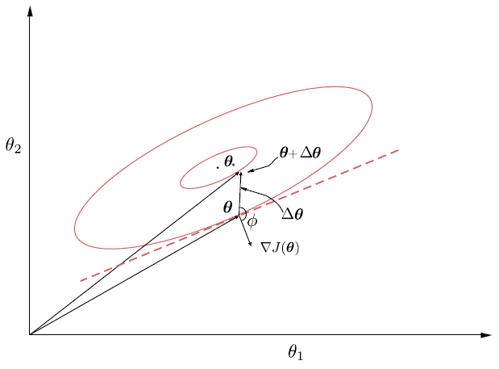
Fig. 11.2 El vector gradiente en un punto \(\boldsymbol{\theta}\) es perpendicular al plano tangente (línea punteada) en la curva de nivel que cruza \(\boldsymbol{\theta}\). La dirección de descenso forma un ángulo obtuso, \(\phi\), con el vector gradiente.#
Nótese que si \(\mu_{i}\|\Delta\boldsymbol{\theta}^{(i)}\|\) es demasiado grande, entonces el nuevo punto puede ser colocado en un contorno correspondiente a un valor mayor al del actual contorno.
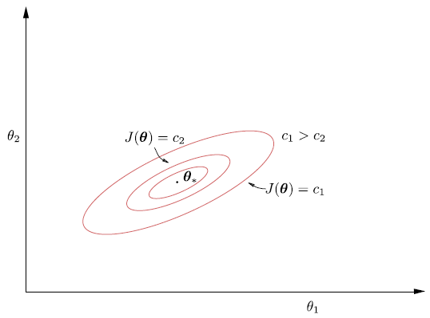
Fig. 11.3 Las correspondientes curvas de nivel para la función de coste, en el plano bidimensional. Nótese que a medida que nos alejamos del valor óptimo, \(\boldsymbol{\theta}_{\star}\), los valores de \(c\) aumentan.#
Para abordar (1), supongamos que \(\mu_{i}=1\) y buscamos todos los vectores \(\boldsymbol{z}\) con norma Euclidiana unitaria, con inicio (cola) en \(\boldsymbol{\theta}^{(i-1)}\). Entonces, para todas las posibles direcciones, la que entrega el valor más negativo del producto interno, \(\nabla^{T}J(\boldsymbol{\theta}^{(i-1)})z\), es aquella de gradiente negativo
Centrando \(\boldsymbol{\theta}^{(i-1)}\) en la bola con norma Euclideana uno. De todos los vectores con norma unitaria y origen en \(\boldsymbol{\theta}^{(i-1)}\), seleccionamos aquel que apunta en la dirección negativa del gradiente. Por lo tanto, para todos los vectores con norma Euclidiana 1, la dirección de descenso mas pronunciada coincide con la dirección del gradiente descendente, negativo, y la correspondiente actualización recursiva se convierte en
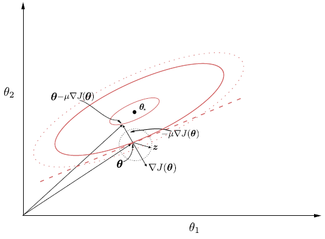
Fig. 11.4 Representación del gradiente negativo el cual conduce a la máxima disminución de la función de coste.#
La selección de \(\mu_{i}\) debe ser realizada de tal forma que garantice convergencia de la secuencia de minimización. Nótese que el algoritmo puede oscilar en torno al mínimo sin converger, si no seleccionamos la dirección correcta. La selección de \(\mu_{i}\) dependerá de la convergencia a cero del error entre \(\boldsymbol{\theta}^{(i)}\) y el mínimo real en forma de serie geométrica.
Ejercicio
Por ejemplo, para el caso de la función de coste del error cuadrático medio, la longitud de paso está dada por: \(0<\mu<2/\lambda_{\max}\), donde \(\lambda_{\max}\) el máximo eigenvalor de la matriz de covarianza \(\Sigma_{x}=\mathbb{E}[\boldsymbol{x}\boldsymbol{x}^{T}]\), donde \(J(\boldsymbol{\theta})=E[(y-\boldsymbol{\theta}^{T}\boldsymbol{x})^{2}]\) (ver Sección 5.3 [Theodoridis, 2020]).
11.2. Redes neuronales#
Introducción
Las redes neuronales son sistemas de aprendizaje compuestos por neuronas conectadas en capas que ajustan sus conexiones para aprender. Tras un período de 25 años desde su inicio, las redes neuronales se convirtieron en la norma en el aprendizaje automático. En un principio, dominaron durante una década, pero luego fueron superadas por máquinas de vectores de soporte.
Sin embargo, desde 2010, las redes neuronales profundas se han vuelto populares gracias a mejoras en la tecnología y la disponibilidad de grandes conjuntos de datos, impulsando el campo del aprendizaje automático.
11.3. El perceptrón#
Nuestro punto de partida será considerar el problema simple de una tarea de clasificación conformada por dos clases linealmente separables. En otras palabras, dado un conjunto de muestras de entrenamiento, \((y_{n}, \boldsymbol{x}_{n})\), \(n=1,2,\dots,N\), con \(y_{n}\in\{-1,+1\},~\boldsymbol{x}_{n}\in\mathbb{R}^{l}\), suponemos que existe un hiperplano
\[ \boldsymbol{\theta}_{\star}^{T}\boldsymbol{x}=0, \]tal que,
\[\begin{split} \begin{cases} \boldsymbol{\theta}_{\star}^{T}\boldsymbol{x}&>0,\quad\text{si}\quad\boldsymbol{x}\in\omega_{1}\\ \boldsymbol{\theta}_{\star}^{T}\boldsymbol{x}&<0,\quad\text{si}\quad\boldsymbol{x}\in\omega_{2} \end{cases} \end{split}\]En otras palabras, dicho hiperplano clasifica correctamente todos los puntos del conjunto de entrenamiento. Para simplificar, el término de sesgo del hiperplano ha sido absorbido en \(\boldsymbol{\theta}_{\star}\) después de extender la dimensionalidad del espacio de entrada en uno. El objetivo ahora es desarrollar un algoritmo que calcule iterativamente un hiperplano que clasifique correctamente todos los patrones de ambas clases. Para ello, se adopta una función de costo.
Sea \(\boldsymbol{\theta}\) la estimación del vector de parámetros desconocidos, disponible en la actual iteración. Entonces hay dos posibilidades. La primera es que todos los puntos estén clasificados correctamente; esto significa que se ha obtenido una solución. La otra alternativa es que \(\boldsymbol{\theta}\) clasifique correctamente algunos de los puntos y el resto estén mal clasificados.
Costo perceptrón
Sea \(\mathcal{Y}\) el conjunto de todas las muestras mal clasificadas. La función de costo, perceptrón se define como
donde
Nótese que la función la función de costo es no negativa. En efecto, dado que la suma es sobre los puntos mal clasificados, si \(\boldsymbol{x}_{n}\in\omega_{1}~(\omega_{2}),~\) entonces \(\boldsymbol{\theta}^{T}\boldsymbol{x}_{n}\leq (\geq)~0\), entregando así un producto \(-y_{n}\boldsymbol{\theta}^{T}\boldsymbol{x}_{n}\geq0\).
La función de costo es cero, si no existen puntos mal clasificados, esto es, \(\mathcal{Y}=\emptyset\). La función de costo perceptrón no es diferenciable en todos los puntos, es lineal por tramos. Si reescribimos \(J(\boldsymbol{\theta})\) en una forma ligeramente diferente:
Nótese que esta es una función lineal con respeto a \(\boldsymbol{\theta}\), siempre que el conjunto de puntos mal clasificados permanezca igual. Además, nótese que ligeros cambios del valor \(\boldsymbol{\theta}\) corresponden a cambios de posición del respectivo hiperplano. Como consecuencia, existirá un punto donde el número de muestras mal clasificadas en \(\mathcal{Y}\), repentinamente cambia; este es el tiempo donde una muestra en el conjunto de entrenamiento cambia su posición relativa con respecto a el hiperplano en movimiento, y en consecuencia, el conjunto \(\mathcal{Y}\) es modificado. Después de este cambio, el conjunto, \(J(\boldsymbol{\theta})\), corresponderá a una nueva función lineal.
El algoritmo perceptrón
A partir del método de subgradientes se puede verificar fácilmente que, iniciando desde un punto arbitrario, \(\boldsymbol{\theta}^{(0)}\), el siguiente método iterativo,
converge después de un número finito de pasos. La sucesión de parámetros \(\mu_{i}\) es seleccionada adecuadamente para garantizar convergencia.
Nótese que usando el método de subgradiente (ver apéndice) o gradiente descendente se tiene que
Otra versión del algoritmo considera una muestra por iteración en un esquema cíclico, hasta que el algoritmo converge. Denotemos por \(y_{(i)}\), \(\boldsymbol{x}_{i},~i\in\{1,2,\dots,N\}\) los pares de entrenamiento presentados al algoritmo en la iteración \(i\)-ésima. Entonces, la iteración de actualización se convierte en:
Esto es, partiendo de una estimación inicial de forma random, inicializando \(\boldsymbol{\theta}^{(0)}\) con algunos valores pequeños, testeamos cada una de las muestras, \(\boldsymbol{x}_{n},~n=1,2,\dots,N\). Cada vez que una muestra es mal clasificada, se toma acción por medio de la regla perceptrón para una corrección. En otro caso, ninguna acción es requerida.
Una vez que todas las muestras han sido consideradas, decimos que una
época (epoch)ha sido completada. Si no se obtiene convergencia, todas las muestras son reconsideradas en una segunda época, y así sucesivamente. La versión de este algoritmo es conocida como esquemapattern-by-pattern. Algunas veces también es referido como el algoritmo online. Nótese que el número total de datos muestrales es fijo, y que el algoritmo las considera en forma cíclica, época por época (epoch-by-epoch).
Observación
Después de un número finito de épocas, se garantiza que el algoritmo es convergente (convexidad de \(J\) y clases linealmente separables). Nótese que para obtener dicha convergencia, la sucesión \(\mu_{i}\) debe ser seleccionada apropiadamente. Sin embargo, para el caso del algoritmo perceptrón, la convergencia es garantizada, aun cuando \(\mu_{i}\) es una constante positiva, \(\mu_{i}=\mu>0\), usualmente tomado igual a uno.
La formulación en (11.1) es conocida también como la filosofía de aprendizaje
reward-punishment. Si la actual estimación es exitosa en la predicción de la clase del respectivo patrón, ninguna acción es tomada (reward), en otro caso, el algoritmo es obligado a realizar una actualización (punishment).

Fig. 11.5 El punto \(x\) está mal clasificado por la línea roja. La regla perceptrón gira el hiperplano hacia el punto \(x\), para intentar incluirlo en el lado correcto del nuevo hiperplano y clasificarlo correctamente.#
La Fig. 11.5 ofrece una interpretación geométrica de la regla del perceptrón. Supongamos que la muestra \(\boldsymbol{x}\) está mal clasificada por el hiperplano, \(\boldsymbol{\theta}^{(i-1)}\). Como sabemos, por geometría analítica, \(\boldsymbol{\theta}^{(i-1)}\) corresponde a un vector que es perpendicular al hiperplano que está definido por este vector. Como \(\boldsymbol{x}\) se encuentra en el lado \((-)\) del hiperplano y está mal clasificado, pertenece a la clase \(\omega_{1}\); asumiendo \(\mu = 1\), la corrección aplicada por el algoritmo es
\[ \boldsymbol{\theta}^{(i)}=\boldsymbol{\theta}^{(i-1)}+\boldsymbol{x}, \]y su efecto es girar el hiperplano en dirección a \(\boldsymbol{x}\) para colocarlo en el lado \((+)\) del nuevo hiperplano, que está definido por la estimación actualizada \(\boldsymbol{\theta^{(i)}}\). El algoritmo perceptrón en su modo de funcionamiento patrón por patrón (pattern-by-pattern) se resume en el siguiente algoritmo:
Algorithm 11.1 (Algoritmo perceptrón pattern-by-pattern)
Inicialización
Inicializar \(\boldsymbol{\theta}^{(0)}\); usualmente, de forma random, pequeño
Seleccionar \(\mu\); usualmente establecido como uno
\(i=1\)
Repeat Cada iteración corresponde a un epoch
counter = 0; Contador del número de actualizaciones por epoch
For \(n=1,2,\dots,N\) Do Para cada epoch, todas las muestras son presentadas una vez
If(\(y_{n}\boldsymbol{x}_{n}^{T}\leq0\)) Then
\(\boldsymbol{\theta}^{(i)}=\boldsymbol{\theta}^{(i-1)}+\mu y_{n}\boldsymbol{x}_{n}\)
\(i=i+1\)
counter = counter + 1
End For
Until counter = 0
Una vez que el algoritmo perceptrón se ha ejecutado y converge, tenemos los pesos, \(\theta_{i},~i = 1,2,\dots,l\), de las sinapsis de la neurona/perceptrón asociada, así como el término de sesgo \(\theta_{0}\). Ahora se pueden utilizar para clasificar patrones desconocidos. Las características \(x_{i}, i = 1, 2,\dots,l\), se aplican a los nodos de entrada. A su vez, cada característica se multiplica por la sinapsis respectiva (peso), y luego se añade el término de sesgo en su combinación lineal.
El resultado de esta operación pasa por una función no lineal, \(f\), conocida como función de activación (ver Activation function). Dependiendo de la forma de la no linealidad, se producen diferentes tipos de neuronas. La mas clásica conocida como neurona McCulloch-Pitts, la función de activación es la de Heaviside, es decir,

Fig. 11.6 Arquitectura básica de neuronas/perceptrones.#
En la arquitectura básica de neuronas/perceptrones, las características de entrada se aplican a los nodos de entrada y se ponderan por los respectivos pesos que definen las sinapsis. A continuación se añade el término de sesgo en su combinación lineal y el resultado es empujado a través de la no linealidad. En la neurona McCulloch-Pitts, la salida es 1 para los patrones de la clase \(\omega_{1}\) o 0 para la clase \(\omega_{2}\). La suma y la operación no lineal se unen para simplificar el gráfico.

Para las capas ocultas (
input layer), la función de activación tangente hiperbólica suele funcionar mejor que la sigmoidea logística. Tanto la funciónsigmoidcomotanhpueden hacer que el modelo sea mássusceptible a los problemas durante el entrenamiento, a través del llamado problema de los gradientes desvanecientes. Los modelos modernos de redes neuronales con arquitecturas comunes, comoMLPyCNN, harán uso de la función de activaciónReLU, o extensiones.Las redes recurrentes suelen utilizar funciones de activación
tanhosigmoid, o incluso ambas. Por ejemplo, la LSTM suele utilizar la activaciónsigmoidpara las conexiones recurrentes y la activacióntanhpara la salida.
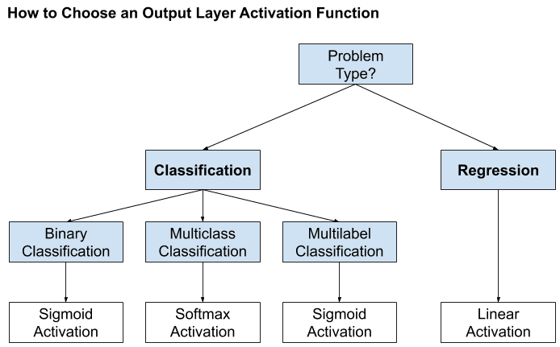
Fig. 11.8 Selección de función de activación para hidden layers. (Fuente [Brownlee and Mastery, 2017]).#
Si su problema es de regresión, debería utilizar una función de activación lineal en el
output layer. Si su problema es de clasificación, el modelo predice la probabilidad de pertenencia a una clase, que se puede convertir en una etiqueta de clase mediante redondeo (para sigmoid) oargmax(para softmax). Usualmente,softmaxes usada en clasificación múltiple cuando las clases son mutuamente excluyentes en caso contrario puede usar la función de activaciónsigmoidpara cada output.
11.4. Redes Totalmente Conectadas#
Para resumir de manera más formal el tipo de operaciones que tienen lugar en una red totalmente conectada, centrémonos en, por ejemplo, la capa \(r\) de una red neuronal multicapa y supongamos que está formada por \(k_{r}\) neuronas. El vector de entrada a esta capa está formado por las salidas de los nodos de la capa anterior, que se denomina \(\boldsymbol{y}^{r-1}\).
Sea \(\boldsymbol{\theta}_{j}^{r}\) el vector de los pesos sinápticos, incluido el término de sesgo, asociado a la neurona \(j\) de la capa \(r\), donde \(j = 1,2,\dots, k_{r}\). La dimensión respectiva de este vector es \(k_{r-1} + 1\), donde \(k_{r-1}\) es el número de neuronas de la capa anterior, \(r-1\), y el aumento en 1 representa el término de sesgo. Entonces las operaciones realizadas, antes de la no linealidad, son los productos internos
Colocando todos los valores de salida en un vector \(\boldsymbol{z}^{r}=[z_{1}^{r}, z_{2}^{r},\dots,z_{k_{r}}^{r}]^{T}\), y agrupando todos los vectores sinápticos como filas, una debajo de la otra, en una matriz, podemos escribir colectivamente
El vector de las salidas de la \(r\) th capa oculta, después de empujar cada \(z_{i}^{r}\) a través de la no linealidad \(f\), está finalmente dado por
La siguiente figura describe como es creada la \(j\)-ésima capa de la red neuronal full conectada
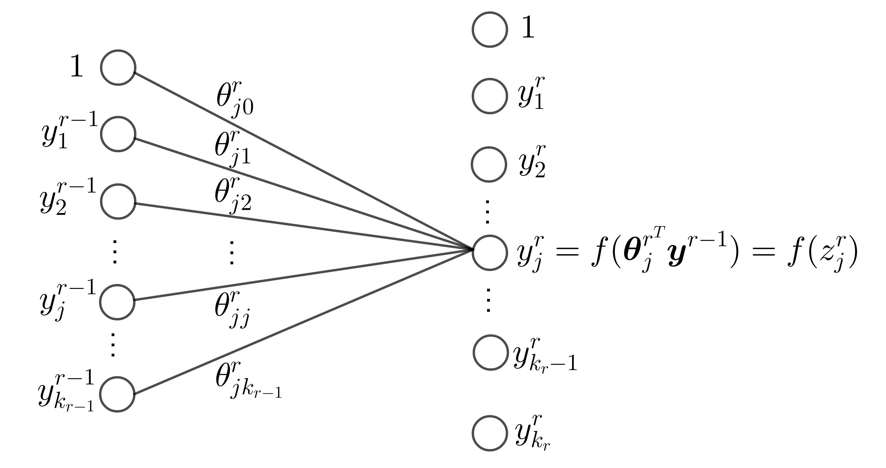
Fig. 11.9 \(j\)-ésimo elemento de la capa \(r\) de la red totalmente conectada.#
Observación
La notación anterior significa que \(f\) actúa sobre cada uno de los respectivos componentes del vector, individualmente, y la extensión del vector en uno es para dar cuenta de los términos de sesgo en la práctica estándar. Para redes grandes, con muchas capas y muchos nodos por capa, este tipo de conectividad resulta ser muy costoso en términos del número de parámetros (pesos), que es del orden de \(k_{r}k_{r-1}\).
Por ejemplo, si \(k_{r-1} = 1000\) y \(k_{r} = 1000\), esto equivale a un orden de 1 millón de parámetros. Tenga en cuenta que este número es la contribución de los parámetros de una sola de las capas. Sin embargo, un gran número de parámetros hace que una red sea vulnerable al sobreajuste, cuando se trata de entrenamiento
Las técnicas de reparto de pesos consisten en compartir un conjunto de parámetros entre varias conexiones mediante restricciones específicas. Las redes neuronales recurrentes y convolucionales aplican este principio; en estas últimas, las convoluciones reemplazan al producto interno, reduciendo significativamente el número de parámetros.
11.5. El Algoritmo De Backpropagation#
Una red neuronal considera una función paramétrica no lineal, \(\hat{y} = f_{\boldsymbol{\theta}}(\boldsymbol{x})\), donde \(\boldsymbol{\theta}\) representa todos los pesos/sesgo presentes en la red. Por lo tanto, el entrenamiento de una red neuronal no parece ser diferente del entrenamiento de cualquier otro modelo de predicción paramétrica.
Todo lo que se necesita es (a) un conjunto de muestras de entrenamiento, (b) una función de pérdida \(\mathcal{L}(y, \hat{y})\), y (c) un esquema iterativo, por ejemplo, el gradiente descendente, para realizar la optimización de la función de coste asociada (pérdida empírica).
La dificultad del entrenamiento de las redes neuronales radica en su estructura multicapa que complica el cálculo de los gradientes, que intervienen en la optimización. Además, la neurona McCulloch-Pitts se basa en la función de activación discontinua Heaviside no diferenciable.
Neurona sigmoidea logística: Una posibilidad es adoptar la función sigmoidea logística, es decir,
Nótese que cuanto mayor sea el valor del parámetro \(a\), la gráfica correspondiente se acerca más a la de la función de Heaviside (ver Fig. 11.10).

Fig. 11.10 Función sigmoidea logística para diferentes valores del parámetro \(a\).#
Otra posibilidad sería utilizar la función,
\[ f(z)=a\tanh\left(\frac{cz}{2}\right), \]donde \(c\) y \(a\) son parámetros de control. El gráfico de esta función se muestra en la Fig. 11.11. Nótese que a diferencia de la sigmoidea logística, esta es una función no simétrica, es decir, \(f(-z)=-f(z)\). Ambas son también conocidas como funciones de reducción, porque limitan la salida a un rango finito de valores.

Fig. 11.11 Función de reducción de la tangente hiperbólica para \(a = 1.7\) y \(c = 4/3\).#
Recordemos que la regla de actualización del algoritmo gradiente descendente, en su versión unidimensional se convierte en
\[ \theta(new)=\theta(old)-\mu\left.\frac{d J}{d\theta}\right|_{\theta(old)}, \]y las iteraciones parten de un punto inicial arbitrario, \(\theta^{(0)}\).
Si en la iteración actual el algoritmo está digamos, en el punto \(\theta(old) = \theta_{1}\), entonces se moverá hacia el mínimo local, \(\theta_{l}\). Esto se debe a que la derivada del coste en \(\theta_{1}\) es igual a la tangente \(\phi_{1}\) (ver Fig. 11.12), que es negativa (el ángulo es obtuso) y la actualización, \(\theta(new)\), se moverá a la derecha, hacia el mínimo local, \(\theta_{l}\).

Fig. 11.12 Función no convexa global, con mínimos locales y puntos de silla.#
Observación
La elección del tamaño de paso \(\mu\) es clave para la convergencia. En espacios multidimensionales, abundan los mínimos locales, pero converger a uno profundo y cercano al mínimo global puede ser aceptable. Para evitarlos, pueden emplearse optimizadores como Adam, RMSprop o AdaGrad, explorar otras funciones de coste o aplicar regularización, ya que modelos muy complejos son más propensos a caer en mínimos locales.
11.6. El Esquema De Backpropagation Para Gradiente Descendente#
Habiendo adoptado una función de activación diferenciable, estamos listos para proceder a desarrollar el esquema iterativo de gradiente descendente para la minimización de la función de coste. Formularemos la tarea en un marco general.
Sea \((\boldsymbol{y}_{n}, \boldsymbol{x}_{n}), n = 1, 2,\dots, N\), el conjunto de muestras de entrenamiento. Nótese que hemos asumido múltiples variables output, como vectores. Suponemos que la red consta de \(L\) capas, \(L-1\) capas ocultas y una capa de salida. Cada capa consta de \(k_{r}, r = 1, 2,\dots, L\), neuronas. Así, los vectores de salida (objetivo/deseado) son
Para ciertas derivaciones matemáticas, también denotamos el número de nodos de entrada como \(k_{0}\); es decir, \(k_{0} = l\), donde \(l\) es la dimensionalidad del espacio de características de entrada.
Sea \(\boldsymbol{\theta}_{j}^{r}\) el vector de los pesos sinápticos asociados a la \(j\)-th neurona de la \(r\)-th capa, con \(j = 1, 2,\dots, k_{r}\) y \(r = 1, 2,\dots,L\), donde el término de sesgo se incluye en \(\boldsymbol{\theta}_{j}^{r}\), es decir,
Los pesos sinápticos en la capa \(r\) enlazan la neurona respectiva con todas las neuronas de la capa \(k_{r-1}\) (véase la Fig. 11.13). El paso iterativo básico para el esquema de gradiente descendente se escribe como
El parámetro \(\mu\) es el tamaño de paso definido por el usuario (también puede depender de la iteración) y \(J\) denota la función de coste.
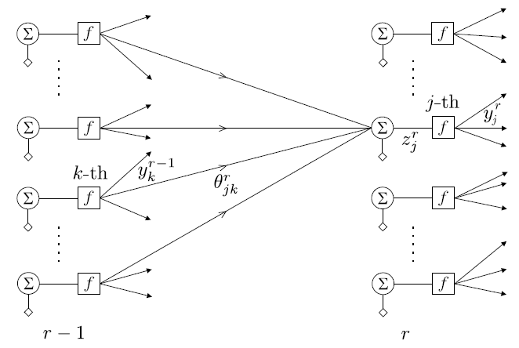
Fig. 11.13 Enlaces y las variables asociadas de la \(j\) th neurona en la \(r\) th capa. \(y_{k}^{r-1}\) es la salida de la \(k\) th neurona de la \((r - 1)\) th capa y \(\theta_{jk}^{r}\) es el peso respectivo que conecta estas dos neuronas.#
Las ecuaciones de actualización (11.3) comprenden el par del esquema de gradiente descendente para la optimización. Como se ha dicho anteriormente, la dificultad de las redes neuronales feed-forward surge de su estructura multicapa. Para calcular los gradientes en la Ecuación (11.3), para todas las neuronas, en todas las capas, se deben seguir dos pasos en su cálculo
Forward computations: Para un vector de entrada dado \(\boldsymbol{x}_{n}, n = 1, 2,\dots, N\), se utilizan las estimaciones actuales de los parámetros (pesos sinápticos) (\(\boldsymbol{\theta}_{j}^{r}(old)\)) y calcula todas las salidas de todas las neuronas en todas las capas, denotadas como \(y_{nj}^{r}\); en la Fig. 11.13, se ha suprimido el índice \(n\) para no afectar la notación.Backward computations: Utilizando las salidas neuronales calculadas anteriormente junto con los valores objetivos conocidos, \(y_{nk}\), de la capa de salida, se calculan los gradientes de la función de coste. Esto implica \(L\) pasos, es decir, tantos como el número de capas. La secuencia de los pasos algorítmicos se indica a continuación:Calcular el gradiente de la función de coste con respecto a los parámetros de las neuronas de la última capa, es decir, \(\partial J/\partial\boldsymbol{\theta}_{j}^{L}, j = 1, 2,\dots, k_{L}\).
For \(r = L-1\) to \(1\), Do
Calcular los gradientes con respecto a los parámetros asociados a las neuronas de la \(r\) th capa, es decir, \(\partial J/\partial\boldsymbol{\theta}_{k}^{r}, k= 1, 2,\dots, k_{r}\) basado en todos los gradientes \(\partial J/\partial\boldsymbol{\theta}_{j}^{r+1}, j= 1, 2,\dots, k_{r+1}\), con respecto a los parámetros de la capa \(r + 1\) que se han calculado en el paso anterior.
End For
Ejemplo
Analicemos un ejemplo concreto de forward computations, seguido de un enfoque backward computations. El ejemplo de entrenamiento será (\(x=2.1\), \(y=4\)), el peso inicial será \(w:=\theta_{1}=1\), el sesgo será \(b:=\theta_{0}=0\) y \(\textsf{Loss}=L\). \(\hat{y}\) representa la salida de la neurona y el valor predicho, mientras que la pérdida se refiere a la pérdida por error cuadrático

Fig. 11.14 Ejemplo de red neuronal para backpropagation#
Forward computaion:
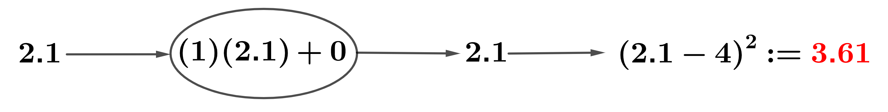
Backward computation: Ahora podemos retroceder (backpropagation) y calcular las derivadas parciales aplicando la regla de la cadena para obtener
Luego, actualizamos los parámetros en la dirección opuesta al gradiente para disminuir la pérdida, con una tasa de aprendizaje de \(\textsf{lr}:=\mu=0.01\)
Para evaluar el rendimiento de nuestros parámetros ajustados, realizaremos una pasada adicional
La pérdida total disminuyó de 3.61 a 2.87, lo que representa una reducción de 0.74. ¡La pérdida ha bajado!
11.7. Entrenamiento de MLP#
Observación
Los pesos de una red neuronal se ajustan mediante algoritmos de optimización basados en gradiente, como el gradiente descendente estocástico, que minimiza iterativamente la función de pérdida \(L\). Para tareas de regresión, se emplean el error cuadrático medio (MSE) y el error absoluto medio (MAE); para clasificación, se utilizan pérdidas logarítmicas binarias o categóricas.
El algoritmo backpropagation se comprende a través de grafos computacionales, útiles para calcular en redes neuronales. En una red simple con una capa oculta de dos neuronas con activación sigmoidea y salida lineal, alimentada por dos entradas \([y_1, y_2]\), los pesos se distribuyen en los bordes de la red.
La Fig. 11.16 ilustra este proceso mediante un grafo computacional para la entrada \([-1, 2]\), generando salidas intermedias \(p_i\). En particular, \(p_7\) y \(p_8\) corresponden a las salidas de las neuronas ocultas \(g_1\) y \(g_2\). Durante este paso también se calcula la función de pérdida \(L\) usada en el entrenamiento.
En el backpropagation, el recorrido inverso del grafo (backward pass) calcula las derivadas parciales entre nodos conectados. Siguiendo la regla de la cadena, la derivada de la pérdida respecto a un peso es el producto de las derivadas a lo largo de cada camino que los une, y si hay varios caminos, se suman. Este enfoque gráfico sustenta las bibliotecas modernas de deep learning para implementar los pasos forward y backward (ver Fig. 11.17)
Las derivadas parciales de la función de pérdida con respecto a los pesos se obtienen aplicando la regla de la cadena:
Durante el entrenamiento, los pesos suelen inicializarse aleatoriamente, ya sea con una distribución uniforme en un rango como \([-1, 1]\) o con una distribución normal de media cero y varianza unitaria, existiendo variantes que aceleran la convergencia.
En este ejemplo, se asume inicialización uniforme, obteniendo: \(w_1 = -0.33,\; w_2 = -0.33,\; w_3 = 0.57,\; w_4 = -0.01,\; w_5 = 0.07,\; w_6 = 0.82\). Con estos valores, se realizan los pasos forward y backward sobre el grafo computacional, mostrando en azul los resultados del forward y en rojo los gradientes del backward. El valor real de la variable objetivo se fija en \(y = 1\).

{kind=link}
{kind=link}
{kind=link}
{kind=link}
{kind=link}
{kind=link}
{kind=link}
{kind=link}
Una vez calculados los gradientes a lo largo de las aristas, las derivadas parciales con respecto a los pesos no son más que una aplicación de la regla de la cadena, de la que ya hemos hablado. Los valores de las derivadas parciales son los siguientes:
El siguiente paso es actualizar los pesos mediante gradiente descendente. Con tasa de aprendizaje \(\alpha = 0.01\):
El resto de pesos se actualizan con la misma fórmula. Este proceso se repite varias veces; el número de actualizaciones se denomina número de épocas. Generalmente, un criterio de tolerancia sobre el cambio en la función de pérdida controla cuándo detener el entrenamiento.
Para determinar los pesos, se combina backpropagation con un optimizador basado en gradiente. Bibliotecas como TensorFlow, Theano o CNTK implementan gráficos computacionales que entrenan redes neuronales de cualquier arquitectura, ejecutando operaciones matriciales y aprovechando GPU para acelerar el cálculo.
Observación
El backpropagation aplica la regla de la cadena para derivadas, comenzando por la última capa (salida), donde el cálculo del gradiente es directo: es la derivada de la función de pérdida respecto a la salida, sin depender de capas posteriores. Luego, el algoritmo retrocede capa por capa, propagando gradientes a través de funciones anidadas hasta las capas iniciales.
En efecto, centrémonos en la salida \(y_{k}^{r}\) de la neurona \(k\) en la capa \(r\). Entonces tenemos
\[ y_{k}^{r}=f(\boldsymbol{\theta}_{k}^{r^T}\boldsymbol{y}^{r-1}),\quad k=1,2,\dots, k_{r}, \]donde \(\boldsymbol{y}^{r-1}\) es el vector (ampliado) que comprende todas las salidas de la capa anterior, \(r-1\), y \(f\) denota la no-linealidad.
De acuerdo con lo anterior, la salida de la \(j\)-th neurona en la siguiente capa viene dada por
\[\begin{split} y_{j}^{r+1}=f(\boldsymbol{\theta}_{j}^{r+1^T}\boldsymbol{y}^{r})= f\left(\boldsymbol{\theta}_{j}^{r+1^{T}} \begin{bmatrix} 1\\ f(\Theta^{r}\boldsymbol{y}^{r-1}) \end{bmatrix} \right)= f\left(\boldsymbol{\theta}_{j}^{r+1^{T}} \begin{bmatrix} 1\\ f(\boldsymbol{y}^{r}) \end{bmatrix} \right), \end{split}\]donde \(\Theta^{r}:=[\boldsymbol{\theta}_{1}^{r}, \boldsymbol{\theta}_{2}^{r},\dots,\boldsymbol{\theta}_{k_{r}}]^{T}\) denota la matriz cuyas columnas corresponden al vector de pesos en el layer \(r\).
Nótese que obtuvimos evaluación de “una función interna bajo una función externa”. Claramente, esto continúa a medida que avanzamos en la jerarquía. Esta estructura de evaluación de funciones internas por funciones externas, es el subproducto de la naturaleza multicapa de las redes neuronales, la cual es una operación altamente no lineal, que da lugar a la dificultad de calcular los gradientes, a diferencia de otros modelos, como por ejemplo SVM.
Sin embargo, se puede observar fácilmente que el cálculo de los gradientes con respecto a los parámetros que definen la
capa de salidano plantea ninguna dificultad. En efecto, la salida de la \(j\)-th neurona de la última capa (que es en realidad la respectiva estimación de salida actual) se escribe como:
Dado que \(\boldsymbol{y}^{L-1}\) es conocido, después de los cálculos durante el paso adelante (
forward computaion), tomando la derivada con respecto a \(\boldsymbol{\theta}_{j}^{L}\) es sencillo; no hay ninguna operación de función sobre función. Por esto es que empezamos por la capa superior y luego nos movemos hacia atrás. Debido a su importancia histórica, se dará la derivación completa del algoritmo backpropagation.
Para la derivación detallada del algoritmo backpropagation, se adopta como ejemplo la función de pérdida del error cuadrático, es decir
(11.4)#\[ J(\boldsymbol{\theta})=\sum_{n=1}^{N}J_{n}(\boldsymbol{\theta})\quad\text{y}\quad J_{n}(\boldsymbol{\theta})=\frac{1}{2}\sum_{k=1}^{k_{L}}(\hat{y}_{nk}-y_{nk})^{2}, \]donde \(\hat{y}_{nk},~k=1,2,\dots,k_{L}\), son las estimaciones proporcionadas en los correspondientes nodos de salida de la red. Las consideraremos como los elementos de un vector correspondiente, \(\hat{\boldsymbol{y}}_{n}\).
11.8. Cálculo de gradientes#
Sea \(z_{nj}^{r}\) la salida del combinador lineal de la \(j\)-th neurona en la capa \(r\) en el instante de tiempo \(n\), cuando se aplica el patrón \(\boldsymbol{x}_{n}\) en los nodos de entrada (véase la Fig. 11.13). Entonces, para \(n, j\) fijos, podemos escribir
(11.5)#\[ z_{nj}^{r}=\sum_{m=1}^{k_{r-1}}\theta_{jm}^{r}y_{nm}^{r-1}+\theta_{j0}^{r}=\sum_{m=0}^{k_{r-1}}\theta_{jm}^{r}y_{nm}^{r-1}=\boldsymbol{\theta}_{j}^{r^{T}}\boldsymbol{y}_{n}^{r-1}, \]donde por definición
\[ \boldsymbol{y}_{n}^{r-1}:=[1, y_{n1}^{r-1},\dots, y_{nk_{r-1}}^{r-1}]^{T}, \]y \(y_{n0}^{r}\equiv 1,~\forall~r, n\) y \(\theta_{j}^{r}\) ha sido definido en la Ecuación (11.2).
Para las neuronas de la capa de salida \(r=L,~y_{nm}^{L}=\hat{y}_{nm},~m=1,2,\dots, k_{L}\), y para \(r=1\), tenemos \(y_{nm}^{1}=x_{nm},~m=1,2,\dots, k_{1}\); esto es, \(y_{nm}^{1}\) se fija igual a los valores de las características de entrada.
Por lo tanto, teniendo en cuenta que \(z_{j}^{r}=\boldsymbol{\theta}_{j}^{rT}\boldsymbol{y}^{r-1},~j=1,2,\dots,k_{r}\) y \(\hat{y}_{j}:=y_{j}^{r}=f(\boldsymbol{\theta}_{j}^{r^{T}}\boldsymbol{y}^{r-1})=f(z_{j}^{r})\), con base en la Ecuación (11.4) podemos escribir las derivadas parciales
Definamos
Entonces la Ecuación (11.3) puede escribirse como
11.9. Cálculo de \(\delta_{nj}^{r}\)#
Este es el cálculo principal del algoritmo backpropagation. Para el cálculo de los gradientes, \(\delta_{nj}^{r}\), se comienza en la última capa, \(r = L\), y se procede hacia atrás, hacia \(r = 1\); esta “filosofía” justifica el nombre dado al algoritmo.
\(r=L\): Tenemos que
\[ \delta_{nj}^{L}:=\frac{\partial J_{n}}{\partial z_{nj}^{L}}. \]Para la función de pérdida del error al cuadrado,
\[ J_{n}=\frac{1}{2}\sum_{k=1}^{k_{L}}\left(\hat{y}_{nk}-y_{nk}\right)^{2}=\frac{1}{2}\sum_{k=1}^{k_{L}}\left(f(z_{nk}^{L})-y_{nk}\right)^{2}. \]Por lo tanto,
(11.7)#\[\begin{split} \begin{align*} \delta_{nj}^{L}=\frac{\partial}{\partial z_{nj}^{L}}\left(\frac{1}{2}\sum_{k=1}^{k_{L}}\left(f(z_{nk}^{L})-y_{nk}\right)^{2}\right)&=(f(z_{nj}^{L})-y_{nj})f'(z_{nj}^{L})\\ &=(\hat{y}_{nj}-y_{nj})f'(z_{nj}^{L})=e_{nj}f'(z_{nj}^{L}), \end{align*} \end{split}\]donde \(j=1,2,\dots, k_{L}\), \(f'\) denota la derivada de \(f\) y \(e_{nj}\) es el error asociado con el \(j\)-th output en el tiempo \(n\). Nótese que para el último layer, el cálculo del gradiente, \(\delta_{nj}^{L}\) es sencillo.
\(r<L\): Debido a la dependencia sucesiva entre las capas, el valor de \(z_{nj}^{r-1}\) influye en todos los valores \(z_{nk}^{r},~k = 1, 2,\dots, k_{r}\), de la capa siguiente. Empleando la regla de la cadena para la diferenciación, obtenemos, para \(r=L, L-1,\dots, 2\):
(11.8)#\[ \delta_{nj}^{r-1}=\frac{\partial J_{n}}{\partial z_{nj}^{r-1}}=\sum_{k=1}^{k_{r}}\frac{\partial J_{n}}{\partial z_{nk}^{r}}\frac{\partial z_{nk}^{r}}{\partial z_{nj}^{r-1}}, \]o
(11.9)#\[ \delta_{nj}^{r-1}=\sum_{k=1}^{k_{r}}\delta_{nk}^{r}\frac{\partial z_{nk}^{r}}{\partial z_{nj}^{r-1}}. \]Además, usando la Ecuación (11.5) se tiene,
\[ \frac{\partial z_{nk}^{r}}{\partial z_{nj}^{r-1}}=\frac{\partial}{\partial z_{nj}^{r-1}}\left(\sum_{m=0}^{k_{r-1}}\theta_{km}^{r}y_{nm}^{r-1}\right), \]donde \(\textcolor{blue}{y_{nm}^{r-1}=f(z_{nm}^{r-1})}=f(\boldsymbol{\theta}_{m}^{r-1^{T}}\boldsymbol{y}_{n}^{r-2})\). Entonces,
\[ \frac{\partial z_{nk}^{r}}{\partial z_{nj}^{r-1}}=\theta_{kj}^{r}f'(z_{nj}^{r-1}), \]y combinando las Ecuaciones (11.8) y (11.9), obtenemos la regla recursiva
\[ \delta_{nj}^{r-1}=\left(\sum_{k=1}^{k_{r}}\delta_{nk}^{r}\theta_{kj}^{r}\right)f'(z_{nj}^{r-1}). \]
Manteniendo la misma notación en la Ecuación (11.7), definimos
\[ e_{nj}^{r-1}:=\sum_{k=1}^{k_{r}}\delta_{nk}^{r}\theta_{kj}^{r}, \]y finalmente obtenemos,
(11.10)#\[ \delta_{nj}^{r-1}=e_{nj}^{r-1}f'(z_{nj}^{r-1}). \]
El único cálculo que queda es la derivada de \(f\). Para el caso de la función sigmoidea logística se demuestra fácilmente que es igual a (
verifíquelo)
La derivación se ha completado y el esquema backpropagation neural network se resume en el siguiente algoritmo
Algorithm 11.2 (Algoritmo Backpropagation Gradiente Descendente)
Inicialización
Inicializar todos los pesos y sesgos sinápticos al azar con valores pequeños, pero no muy pequeños.
Seleccione el tamaño del paso \(\mu\).
Fije \(y_{nj}^{1}=x_{nj},\quad j=1,2,\dots,k_{1}:=l,\quad n=1,2,\dots,N\)
Repeat Cada repetición completa un epoch
For \(n=1,2,\dots,N\) Do
For \(r=1,2,\dots,L\) Do Cálculo Forward
For \(j=1,2,\dots,k_{r}\) Do
Calcule \(z_{nj}^{r}\) a partir de la Ecuación (11.5) Calcule \(y_{nj}^{r}=f(z_{nj}^{r})\)
End For
End For
For \(j = 1, 2,\dots, k_{L}\), Do; Cálculo Backward (output layer)
Calcule \(\delta_{nj}^{L}\) a partir de la Ecuación (11.10)
End For
For \(r=L, L-1,\dots, 2\), Do; Cálculo Backward (hidden layers)
For \(j=1,2,\dots, k_{r}\), Do
Calcule \(\delta_{nj}^{r-1}\) a partir de la Ecuación (11.10)
End For
End For
End For
For \(r=1,2,\dots,L\), Do: Actualice los pesos
For \(j=1,2,\dots,k_{r}\), Do
Calcule \(\Delta\boldsymbol{\theta}_{j}^{r}\) a partir de la Ecuación (11.6)
\(\boldsymbol{\theta}_{j}^{r}=\boldsymbol{\theta}_{j}^{r}+\Delta\boldsymbol{\theta}_{j}^{r}\)
End For
End For
Until Un criterio de parada se cumpla.
El algoritmo de backpropagation puede reivindicar una serie de padres. La popularización del algoritmo se asocia con el artículo clásico [Rumelhart et al., 1986], donde se proporciona la derivación del algoritmo. La idea de backpropagation también aparece en [Bryson Jr et al., 1963] en el contexto del control óptimo.
Existen diferentes variaciones del algoritmo backpropagation, tales como: Gradiende descendente con término de momento, Algoritmo de momentos de Nesterov’s, Algoritmo AdaGrad, RMSProp con momento de Nesterov, Algortimo de estimación de momentos adaptativo los cuales pueden ser utlizados para resolver la tarea de optimización (ver [Theodoridis, 2020]).
11.10. Tuning de Redes Neuronales#
Profundizaremos en la mecánica del Perceptrón Multicapa (MLP) empleando el
MLPClassifier()en el conjunto de datostwo_moonsque se utilizó anteriormente en esta sección
from sklearn.neural_network import MLPClassifier
from sklearn.datasets import make_moons
from sklearn.model_selection import train_test_split
import mglearn
import matplotlib.pyplot as plt
X, y = make_moons(n_samples=100, noise=0.25, random_state=3)
X_train, X_test, y_train, y_test = train_test_split(X, y, stratify=y, random_state=42)
mlp = MLPClassifier(solver='adam', random_state=0, max_iter=10000).fit(X_train, y_train)
adamOptimizer:adames un acrónimo de Adaptive Moment Estimation y es uno de los algoritmos de optimización más populares y efectivos utilizados en el entrenamiento de redes neuronales (ver [Kingma and Ba, 2014]). Es una variante avanzada del gradiente descendente que combina las ideas de los métodos de momentum y RMSProp para adaptarse mejor a diferentes problemas de optimización.
Características de Adam
Adaptative Learning Rate: Calcula tasas de aprendizaje adaptativas para cada parámetro utilizando estimaciones de primer y segundo orden de los momentos (media y varianza) de los gradientes.
Momentum:Utiliza el concepto de momentum para acumular una media móvil exponencial de los gradientes pasados (primer momento) y una media móvil exponencial de los cuadrados de los gradientes pasados (segundo momento).
mglearn.plots.plot_2d_separator(mlp, X_train, fill=True, alpha=.3)
mglearn.discrete_scatter(X_train[:, 0], X_train[:, 1], y_train)
plt.xlabel("Feature 0");
plt.ylabel("Feature 1");
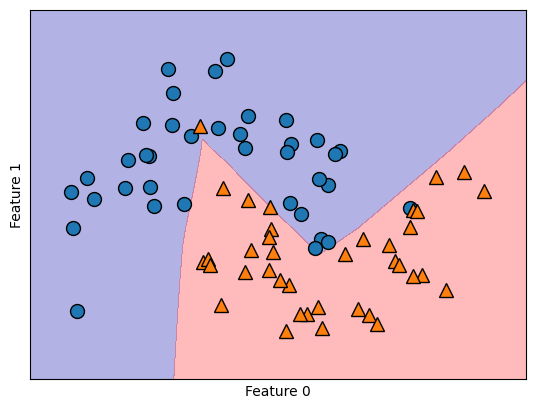
Evidentemente, la red neuronal ha adquirido un límite de decisión decisivamente no lineal pero relativamente gradual
mlp = MLPClassifier(solver='lbfgs', random_state=0, max_iter=400, hidden_layer_sizes=[10])
Se empleó el algoritmo
'lbfgs'(ver Broyden–Fletcher–Goldfarb–Shanno algorithm (L-BFGS), optimizador de la familia de los métodos cuasi-Newton.). En particular, el MLP emplea 100 nodos ocultos por defecto, un número considerable para este conjunto de datos compacto. Sin embargo, incluso con un número reducido de nodos, se puede lograr un resultado satisfactorio
Optimizador L-BFGS
L-BFGS es una variante del algoritmo BFGS, que es un método de optimización de segundo orden. A diferencia de los métodos de primer orden, que utilizan únicamente el gradiente de la función de pérdida, los métodos de segundo orden también utilizan la información de la segunda derivada (la matriz Hessiana) para mejorar la dirección de los pasos de actualización. L-BFGS ajusta internamente las tasas de aprendizaje basadas en la información de segundo orden.
mlp.fit(X_train, y_train)
MLPClassifier(hidden_layer_sizes=[10], max_iter=400, random_state=0,
solver='lbfgs')In a Jupyter environment, please rerun this cell to show the HTML representation or trust the notebook. On GitHub, the HTML representation is unable to render, please try loading this page with nbviewer.org.
MLPClassifier(hidden_layer_sizes=[10], max_iter=400, random_state=0,
solver='lbfgs')mglearn.plots.plot_2d_separator(mlp, X_train, fill=True, alpha=.3)
mglearn.discrete_scatter(X_train[:, 0], X_train[:, 1], y_train)
plt.xlabel("Feature 0");
plt.ylabel("Feature 1");
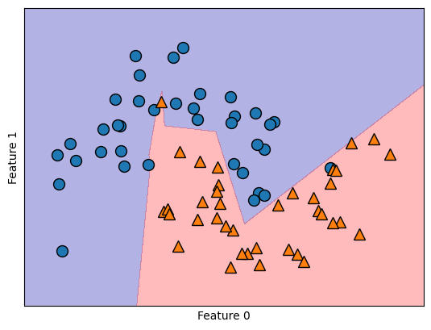
Al reducir las unidades ocultas a 10 hace que el límite de decisión tenga un aspecto algo irregular. La no linealidad por defecto empleada es la
"relu"
import numpy as np
line = np.linspace(-3, 3, 100)
plt.plot(line, np.tanh(line), label="tanh")
plt.plot(line, np.maximum(line, 0), label="relu")
plt.legend(loc="best")
plt.xlabel("x")
plt.ylabel("relu(x), tanh(x)");

En el caso de una sola capa oculta, esto implica que la función de decisión comprende 10 segmentos de línea recta. Para conseguir un límite de decisión más gradual, las alternativas incluyen aumentar las unidades ocultas, introducir una segunda capa oculta o emplear la no linealidad
"tanh".
Utilizando dos capas ocultas, con 10 unidades cada una
mlp = MLPClassifier(solver='lbfgs', random_state=0, hidden_layer_sizes=[10, 10])
mlp.fit(X_train, y_train)
MLPClassifier(hidden_layer_sizes=[10, 10], random_state=0, solver='lbfgs')In a Jupyter environment, please rerun this cell to show the HTML representation or trust the notebook.
On GitHub, the HTML representation is unable to render, please try loading this page with nbviewer.org.
MLPClassifier(hidden_layer_sizes=[10, 10], random_state=0, solver='lbfgs')
mglearn.plots.plot_2d_separator(mlp, X_train, fill=True, alpha=.3)
mglearn.discrete_scatter(X_train[:, 0], X_train[:, 1], y_train)
plt.xlabel("Feature 0")
plt.ylabel("Feature 1");
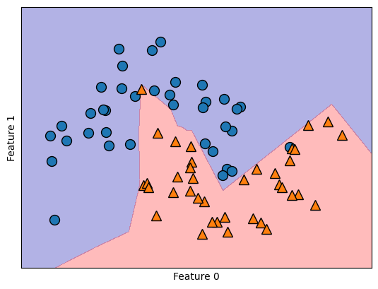
mlp = MLPClassifier(solver='lbfgs', activation='tanh', max_iter=400, random_state=0, hidden_layer_sizes=[10, 10])
mlp.fit(X_train, y_train)
MLPClassifier(activation='tanh', hidden_layer_sizes=[10, 10], max_iter=400,
random_state=0, solver='lbfgs')In a Jupyter environment, please rerun this cell to show the HTML representation or trust the notebook. On GitHub, the HTML representation is unable to render, please try loading this page with nbviewer.org.
MLPClassifier(activation='tanh', hidden_layer_sizes=[10, 10], max_iter=400,
random_state=0, solver='lbfgs')mglearn.plots.plot_2d_separator(mlp, X_train, fill=True, alpha=.3)
mglearn.discrete_scatter(X_train[:, 0], X_train[:, 1], y_train)
plt.xlabel("Feature 0")
plt.ylabel("Feature 1");
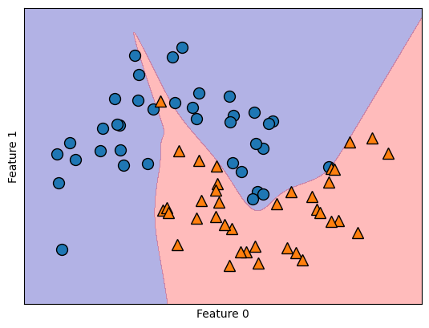
Además, podemos influir en la complejidad de una red neuronal incorporando una penalización \(L2\), similar al enfoque de la regresión de ridge y los clasificadores lineales. El parámetro responsable de esto en el
MLPClassifieres'alpha', análogo a los modelos de regresión lineal. Por defecto, asume un valor mínimo (regularización limitada). El siguiente experimento incluye dos capas ocultas, cada una de ellas compuesta por 10 o 100 unidades y diferentes valores dealpha
fig, axes = plt.subplots(2, 4, figsize=(20, 8))
for axx, n_hidden_nodes in zip(axes, [10, 100]):
for ax, alpha in zip(axx, [0.0001, 0.01, 0.1, 1]):
mlp = MLPClassifier(solver='lbfgs', random_state=0, max_iter=1000, hidden_layer_sizes=[n_hidden_nodes, n_hidden_nodes], alpha=alpha)
mlp.fit(X_train, y_train)
mglearn.plots.plot_2d_separator(mlp, X_train, fill=True, alpha=.3, ax=ax)
mglearn.discrete_scatter(X_train[:, 0], X_train[:, 1], y_train, ax=ax)
ax.set_title("n_hidden=[{}, {}]\nalpha={:.4f}".format(n_hidden_nodes, n_hidden_nodes, alpha))
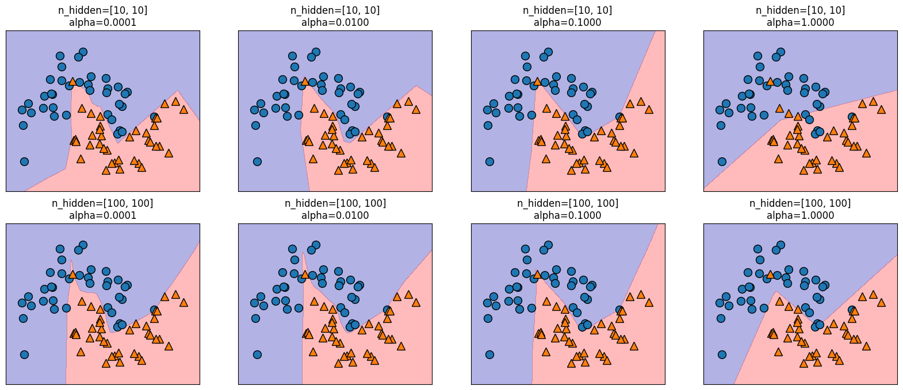
Observación
Como habrá podido comprobar, existen multitud de métodos para gestionar la complejidad de una red neuronal, como el número de capas ocultas, las unidades en cada capa oculta y la regularización (
alpha), entre otros. Un rasgo fundamental de las redes neuronales reside en suconfiguración aleatoria inicial de pesos antes de comenzar el aprendizaje.Esta aleatoriedad influye en el modelo aprendido resultante. Así, el empleo de parámetros idénticos puede dar lugar a modelos distintos debido a semillas aleatorias diferentes. Mientras que este efecto es más pronunciado para redes pequeñas, es menos significativo para redes de tamaño adecuado donde la complejidad se elige apropiadamente.
fig, axes = plt.subplots(2, 4, figsize=(20, 8))
for i, ax in enumerate(axes.ravel()):
mlp = MLPClassifier(solver='lbfgs', random_state=i, max_iter=2000, hidden_layer_sizes=[100, 100])
mlp.fit(X_train, y_train)
mglearn.plots.plot_2d_separator(mlp, X_train, fill=True, alpha=.3, ax=ax)
mglearn.discrete_scatter(X_train[:, 0], X_train[:, 1], y_train, ax=ax)
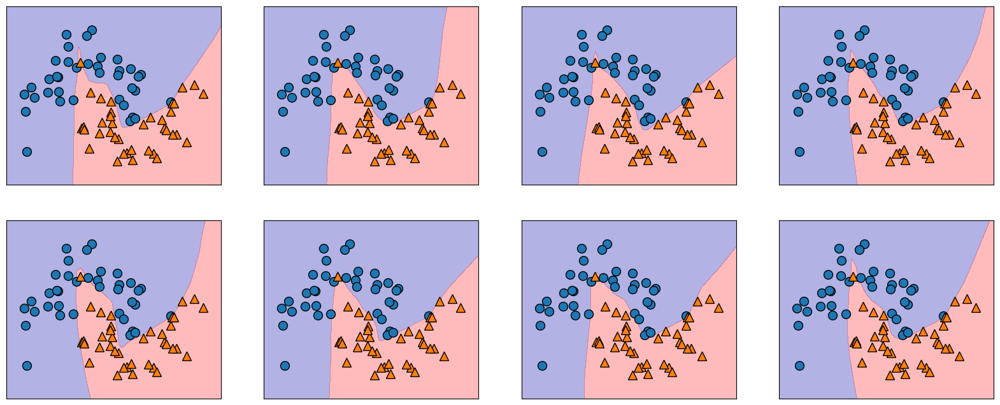
Para una comprensión más completa de las redes neuronales en escenarios prácticos, implementaremos el MLPClassifier en el conjunto de datos Breast Cancer. Nuestro paso inicial consiste en utilizar los parámetros por defecto. Queda como tarea para el estudiante, utilizar
GridSearchCVyPipeline.
from sklearn.datasets import load_breast_cancer
cancer = load_breast_cancer()
print("Cancer data per-feature maxima:\n{}".format(cancer.data.max(axis=0)))
Cancer data per-feature maxima:
[2.811e+01 3.928e+01 1.885e+02 2.501e+03 1.634e-01 3.454e-01 4.268e-01
2.012e-01 3.040e-01 9.744e-02 2.873e+00 4.885e+00 2.198e+01 5.422e+02
3.113e-02 1.354e-01 3.960e-01 5.279e-02 7.895e-02 2.984e-02 3.604e+01
4.954e+01 2.512e+02 4.254e+03 2.226e-01 1.058e+00 1.252e+00 2.910e-01
6.638e-01 2.075e-01]
X_train, X_test, y_train, y_test = train_test_split(cancer.data, cancer.target, random_state=0)
mlp = MLPClassifier(random_state=42)
mlp.fit(X_train, y_train)
MLPClassifier(random_state=42)In a Jupyter environment, please rerun this cell to show the HTML representation or trust the notebook.
On GitHub, the HTML representation is unable to render, please try loading this page with nbviewer.org.
MLPClassifier(random_state=42)
print("Accuracy on training set: {:.2f}".format(mlp.score(X_train, y_train)))
print("Accuracy on test set: {:.2f}".format(mlp.score(X_test, y_test)))
Accuracy on training set: 0.94
Accuracy on test set: 0.92
El MLP muestra una precisión notable, aunque no a la par de otros modelos. Al igual que en el caso anterior del
SVC, esta discrepancia se debe probablemente al escalado de los datos. Las redes neuronales exigen una varianza uniforme entre las características de entrada, idealmente con una media de 0 y una varianza de 1.Para satisfacer estos criterios, los datos deben reescalarse. Mientras que aquí estamos implementando este proceso manualmente, en el capítulo Evaluación de modelos y Pipelines se usa
StandardScalerpara el manejo automatizado de este procedimiento
Calculamos el valor medio por característica en el conjunto de entrenamiento
mean_on_train = X_train.mean(axis=0)
Calculamos la desviación estándar de cada característica en el conjunto de entrenamiento
std_on_train = X_train.std(axis=0)
Procedemos con el proceso de estandarización a media 0 y desviación 1
X_train_scaled = (X_train - mean_on_train) / std_on_train
X_test_scaled = (X_test - mean_on_train) / std_on_train
mlp = MLPClassifier(random_state=0, max_iter=400)
mlp.fit(X_train_scaled, y_train)
MLPClassifier(max_iter=400, random_state=0)In a Jupyter environment, please rerun this cell to show the HTML representation or trust the notebook.
On GitHub, the HTML representation is unable to render, please try loading this page with nbviewer.org.
MLPClassifier(max_iter=400, random_state=0)
print("Accuracy on training set: {:.3f}".format(mlp.score(X_train_scaled, y_train)))
print("Accuracy on test set: {:.3f}".format(mlp.score(X_test_scaled, y_test)))
Accuracy on training set: 1.000
Accuracy on test set: 0.972
Dado que se aprecia una disparidad entre el rendimiento de entrenamiento y el de prueba, se puede intentar mejorar el rendimiento de generalización reduciendo la complejidad del modelo. En este escenario, optamos por intensificar el parámetro
"alpha"(de 0.0001 a 1) para imponer una regularización más potente de los pesos
mlp = MLPClassifier(max_iter=1000, alpha=1, random_state=0)
mlp.fit(X_train_scaled, y_train)
MLPClassifier(alpha=1, max_iter=1000, random_state=0)In a Jupyter environment, please rerun this cell to show the HTML representation or trust the notebook.
On GitHub, the HTML representation is unable to render, please try loading this page with nbviewer.org.
MLPClassifier(alpha=1, max_iter=1000, random_state=0)
print("Accuracy on training set: {:.3f}".format(mlp.score(X_train_scaled, y_train)))
print("Accuracy on test set: {:.3f}".format(mlp.score(X_test_scaled, y_test)))
Accuracy on training set: 0.988
Accuracy on test set: 0.972
Descubrir lo que ha aprendido una red neuronal suele ser todo un reto. Una técnica para comprender mejor los conocimientos adquiridos consiste en analizar los pesos del modelo. Puede ver un ejemplo en la galería de
scikit-learn. Sin embargo, para el conjunto de datos de Cáncer de Mama, la comprensión puede ser algo desafiante.La siguiente rutina muestra los pesos aprendidos, conectando la entrada a la primera capa oculta. Las filas corresponden a las 30 características de entrada, mientras que las columnas corresponden a las 100 unidades ocultas.
import seaborn as sns
plt.figure(figsize=(20, 15))
sns.set(font_scale=1.8)
plt.imshow(mlp.coefs_[0], interpolation='none', cmap='viridis', aspect='auto')
plt.yticks(range(30), cancer.feature_names)
plt.xlabel("Columns in weight matrix")
plt.ylabel("Input feature")
plt.colorbar();
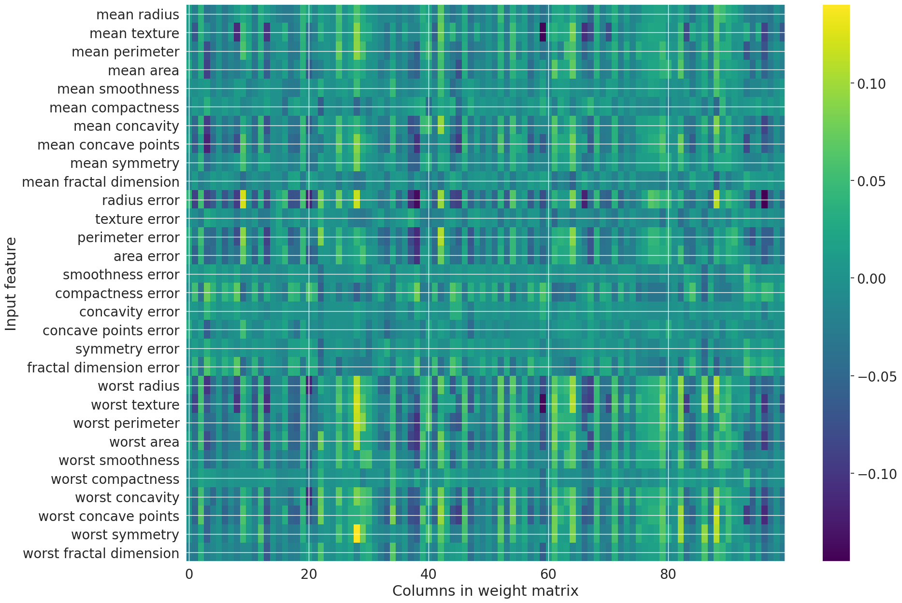
Una posible inferencia que podemos hacer es que las
características que tienen pesos muy pequeños para todas las unidades ocultas son "menos importantes" para el modelo. Podemos ver que “mean smoothness” y “mean compactness”, además de las características encontradas entre “smoothness error” y “fractal dimension error”, tienen pesos relativamente bajos comparados con otras características. Esto podría significar que se trata de rasgos menos relevantes o, posiblemente, que no las representamos de forma que la red neuronal pudiera utilizarlas.También podemos visualizar los pesos que conectan la capa oculta con la capa de salida, pero son aún más difíciles de interpretar. Aunque
MLPClassifieryMLPRegressorproporcionan interfaces fáciles de usar para las arquitecturas de redes neuronales más comunes, solo capturan un pequeño subconjunto de lo que es posible con las redes neuronales. Si está interesado en trabajar con modelos más flexibles o modelos más grandes, se recomienda mirar más allá de scikit-learn en las fantásticas bibliotecas de aprendizaje profundo.Para los usuarios de
Python, las más conocidas sonkeras, lasagnay `tensor-flow. Estas bibliotecas proporcionan una interfaz mucho más flexible para construir redes neuronales y seguir el rápido progreso en la investigación del aprendizaje profundo, también permiten el uso de unidades de procesamiento gráfico (GPU) de alto rendimiento que scikit-learn no soporta.
11.11. Análisis de Malware por API calls#
El siguiente conjunto de datos forma parte de una investigación sobre la detección y clasificación de Malware mediante Deep Learning (ver Oliveira, Angelo; Sassi, Renato José (2019)). Contiene 42.797 secuencias de llamadas a la API de malware y 1.079 secuencias de llamadas a la API de goodware. Cada secuencia de llamadas a la API se compone de las 100 primeras llamadas a la API consecutivas no repetidas asociadas al proceso principal, extraídas de los elementos “calls” de los informes de Cuckoo Sandbox.
CaracterísticasNombre de la columna: hashDescripción: El hash MD5 del ejemploTipo: Cadena de 32 bytes
Nombre de columna: t_0, t_1,…, t99Descripción: Llamada a la APITipo: Entero (0-306)
Nombre de columna: malwareDescripción: ClaseTipo: Entero: 0 (Goodware) o 1 (Malware)

Fig. 11.19 Gráfico de comportamiento del malware troyano con hash MD5 ac65ce897a1f0dc273e8dc54fe3768ec.#
import warnings
warnings.filterwarnings('ignore')
import numpy as np
import pylab as pl
import pandas as pd
import matplotlib.pyplot as plt
import seaborn as sns
import random
from sklearn.utils import shuffle
from sklearn.svm import SVC
from sklearn.metrics import confusion_matrix,classification_report
from sklearn.model_selection import cross_val_score, GridSearchCV
from sklearn.pipeline import make_pipeline
from sklearn.preprocessing import StandardScaler
from sklearn.neural_network import MLPClassifier
from sklearn.model_selection import train_test_split
import pickle
import glob
from sklearn.metrics import f1_score
from sklearn.metrics import classification_report
from sklearn.metrics import roc_curve
from sklearn.metrics import precision_recall_curve
from time import process_time
data = pd.read_csv("https://raw.githubusercontent.com/lihkir/Data/main/api_call_sequence_per_malware.csv")
data.shape
(43876, 102)
La siguiente es una construida en el presente curso, la cual puede ser útil para quienes solo desean presentar unas cuantas columnas al inicio y al final de cada
pandas. Solo requiere del nombre delpandasy el número de columnas que deseamos visualziar al inicio y al final. Es bastante util, para utilizar en losJupyter Books, donde el espacio horizontal es reducido.
def idx_lr(data, n_new_cols):
n_data_cols = len(data.columns)
idx_l = sorted(list(range(n_new_cols - 1, -1, -1)))
idx_r = sorted(list(range(n_data_cols - 1, n_data_cols - n_new_cols - 1, -1)))
return idx_l + idx_r
Para imprimir por ejemplo las tres primeras columnas al inicio y al final del pandas data utilizamos la orden
data.iloc[:, idx_lr(data, 4)]. Nótese que no contamos con datos faltantes que requieran de un procedimiento de imputación (ver Análisis con datos faltantes). Además, nótese que todas las columnas con la excepción dehashcorresponde a datos numericos discretos.
data.iloc[:, idx_lr(data, 4)].head()
| hash | t_0 | t_1 | t_2 | t_97 | t_98 | t_99 | malware | |
|---|---|---|---|---|---|---|---|---|
| 0 | 071e8c3f8922e186e57548cd4c703a5d | 112 | 274 | 158 | 208 | 56 | 71 | 1 |
| 1 | 33f8e6d08a6aae939f25a8e0d63dd523 | 82 | 208 | 187 | 171 | 215 | 35 | 1 |
| 2 | b68abd064e975e1c6d5f25e748663076 | 16 | 110 | 240 | 65 | 113 | 112 | 1 |
| 3 | 72049be7bd30ea61297ea624ae198067 | 82 | 208 | 187 | 302 | 228 | 302 | 1 |
| 4 | c9b3700a77facf29172f32df6bc77f48 | 82 | 240 | 117 | 260 | 141 | 260 | 1 |
print("# NaN values:", data.isna().sum().sum())
# NaN values: 0
data.dtypes
hash object
t_0 int64
t_1 int64
t_2 int64
t_3 int64
...
t_96 int64
t_97 int64
t_98 int64
t_99 int64
malware int64
Length: 102, dtype: object
Pasamos ahora a eliminar aquellas variables (columnas) irrelevantes en el análisis predictivo, a saber la columna
hashdel pandasdatay creamos uno nuevo al cual nombraremosdata_new.
data_new = data.drop(columns=['hash'], axis=1)
data_new.shape
(43876, 101)
Verifiquemos si nuestros datos están desbalanceados respecto a las clases de interés 0 (Goodware) o 1 (Malware)
import matplotlib
matplotlib.rc_file_defaults()
cnt_pro = data_new['malware'].value_counts()
sns.barplot(x=cnt_pro.index, y=cnt_pro.values, alpha=0.8)
plt.ylabel('Number of data', fontsize=10)
plt.xlabel('Malware Type', fontsize=10);

Claramente, existe un desbalance entre los tipos de Malware. Por otro lado, verifiquemos para algunos Hash, como se distribuyen la frecuencia de cada una de sus API calls. Las columnas representan las frecuencias de cada API call representado por los valores
t_0, t_1,..., t99.
fig, axs = plt.subplots(nrows=2, ncols=2, figsize=(15, 12))
plt.subplots_adjust(hspace=0.2)
fig.suptitle("Malware API Calls by Hash", fontsize=14, y=0.92)
for i, ax in zip(range(1, 5), axs.ravel()):
plt.subplot(2, 2, i)
n_hash = random.randint(0, len(data_new))
data_new.iloc[n_hash,:-1].value_counts().plot(kind='bar', xlabel='Hash: '+ data['hash'][n_hash], ylabel='API Call');
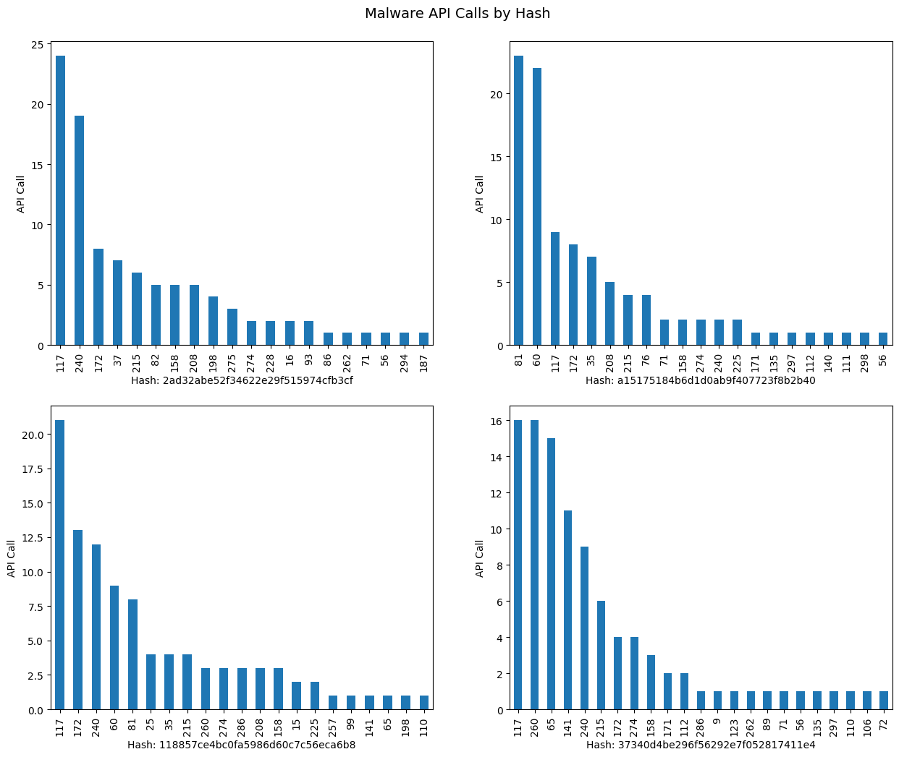
Procedemos a hacer uso de
make_pipelineyGridSearchCVpara obtener parámetros del mejor modelo. En este caso utilizaremos el clasificadorMLPClassifier, el cual se estudió en clase de forma analítica.
El algoritmo clasificador
MLPClassifierdenota el valor de la longitud de paso \(\mu_{i}\) comolearning_rate, el cual asume los valores constant, invscaling, adaptive. En este ejemplo se ha probado con los tres parámetros, obteniendo siempre el mejor score cuandolearning_rate = constant. Por otro lado,hidden_layer_sizesrepresenta el número de neuronas en el \(i\)th layer. En este problema de clasificación optamos por seleccionar desde una a tres capas escondidas (hidden layers), pero siempre el mejor score entregado porGridSearchCV, fue obtenido considerando una sola capa. Por lo tanto, en este problema hacemos solo un grid search sobre el número de neuronas sobre una sola capa.Dado que nuestro problema es de clasificación binaria, también consideramos en el
param_grid, soloactivation = logistic. Las opciones del clasificador sonidentity, logistic, tanh, relu, peroGridSearchCVentregó el mejor score usandologisticcomo era de esperarse. El parámetroalphaes la fuerza del término de regularización \(L^2\), similar al utilizado en la regresiónridgecuando deseamos reducir la complejidad de un modelo. Puede revisar la documentación del clasificador para ver todos los parámetros asociados, y aquellos que son por defecto (ver MLPClassifier).

Fig. 11.20 Red neuronal feed-forward de tres capas.#
La capa de entrada
En general las ANNs tienen exactamente una capa de entrada. Con respecto al número de neuronas que componen esta capa, este parámetro se determina de forma completa y única, una vez que se conoce la forma de los datos de entrenamiento. En concreto, el número de neuronas que componen esa capa es igual al número de características (columnas) de sus datos. Algunas configuraciones de ANNs añaden un nodo adicional para un término de sesgo.
La capa de salida
Al igual que la capa de entrada, cada ANN tiene exactamente una capa de salida. Determinar su tamaño (número de neuronas) es sencillo; está completamente determinado por la configuración del modelo elegido. Si la ANN es un regresor, la capa de salida tiene un solo nodo (Time Series Forecasting). Si la ANN es un clasificador, entonces también tiene un solo nodo, a menos que se utilice
softmax, en cuyo caso la capa de salida tiene un nodo por cada etiqueta de clase en su modelo.
Las capas ocultas
¿Cuántas capas ocultas?. Si los datos son linealmente separables (lo que a menudo se sabe cuando se empieza a codificar una ANN, SVM puede servir de test), entonces no se necesita ninguna capa oculta. Por supuesto, tampoco se necesita una ANN para resolver los datos, pero está seguirá haciendo su trabajo.
Sobre la configuración de las capas ocultas en las ANNs, existe un consenso dentro de este tema, y es la diferencia de rendimiento al añadir capas ocultas adicionales: las situaciones en las que el rendimiento mejora con una segunda (o tercera, etc.) capa oculta son muy pocas. Una capa oculta es suficiente para la gran mayoría de los problemas.
Entonces, ¿qué pasa con el tamaño de la(s) capa(s) oculta(s), cuántas neuronas?. Existen algunas reglas empíricas; de ellas, la más utilizada es ‘The optimal size of the hidden layer is usually between the size of the input and size of the output layers’. Jeff Heaton, the author of Introduction to Neural Networks in Java.
Hay una regla empírica adicional que ayuda en los problemas de aprendizaje supervisado. Normalmente se puede evitar el sobreajuste si se mantiene el número de neuronas por debajo de:
\[ N_{h}=\frac{N_{s}}{(\alpha\cdot(N_{i}+N_{o}))} \]\(N_{i}=\) número de neuronas de entrada
\(N_{o}=\) número de neuronas de salida
\(N_{s}=\) número de muestras en el conjunto de datos de entrenamiento
\(\alpha=\) un factor de escala arbitrario, normalmente 2-10
Un valor de \(\alpha=2\) suele funcionar sin sobreajustar. Se puede pensar en \(\alpha\) como el factor de ramificación efectivo o el número de pesos distintos de cero para cada neurona. Las capas de salida harán que el factor de ramificación “efectivo” sea muy inferior al factor de ramificación medio real de la red. Para profundizar mas en el diseño de redes neuronales, ver el siguiente texto de Martin Hagan.
En resumen, para la mayoría de los problemas, probablemente se podría obtener un rendimiento decente (incluso sin un segundo paso de optimización) estableciendo la configuración de la capa oculta utilizando sólo dos reglas:
el número de capas ocultas es igual a uno
el número de neuronas de esa capa es la media de las neuronas de las capas de entrada y salida. ¡Nótese que en el ejemplo de esta sección el número de columnas para \(X\) es 100!.
Pasamos ahora a implementar un modelo de clasificación para el conjunto de datos relacionados con: Análisis de Malware por API calls. Utilizaremos la clase
MLPClassifiery como preprocesamiento, estandarizaremos nuestros datos usando la claseStandardScaler. Para encontrar los mejores parámetros y evita problemas de data leakage, utilizaremosPipelineyGridSearchCVtal como se explicó en secciones anteriores.
pipe = make_pipeline(StandardScaler(), MLPClassifier(max_iter=10000, random_state=42))
param_grid = {'mlpclassifier__alpha': [0.1, 0.01, 0.001],
'mlpclassifier__hidden_layer_sizes': [(10,), (100,), (1000,)],
'mlpclassifier__activation': ['logistic'],
'mlpclassifier__learning_rate': ['constant']}
Construimos nuestra matriz de caracteristicas, o variable explicativa X y el vector de clases o la variable respuesta y
y = data_new['malware']
X = data_new.drop(['malware'], axis=1)
Realizamos la división de nuestros datos a priori, con el objetivo de evitar data leakage. Consideramos el mismo
random_stateutilizado en el clasificador, con el objetivo de que los resutlados sean reproducibles.
X_train, X_test, y_train, y_test = train_test_split(X, y, random_state=42)
El siguiente ciclo if ha sido implementado en este curso para evitar reentrenar nuestro modelo clasificador. Nótese que si el algoritmo no detecta que existe un archivo de extensión
.pkl, reentrena el modelo, de lo contrario, utiliza el modelo entrenado a priori, el cual ha sido guardado en el archivo.pkl. Los archivoPicklede extensión.pklen simples palabras se encargan de serializar un objeto, esto es transformar el mismo en una cadena de bytes única que puede ser guardada en un archivo (de extensión .pkl), archivo que podemos desempaquetar después y trabajar con su contenido. Para poder utlizarlo necesitamos importarlo con la ordenimport pickle, e instalar la librería (Pickel viene por defecto desde Python 3.9) si así se requiere utilizando:
pip install pickle
from joblib import dump, load
grid = None
if (len(glob.glob("grid_mlp.joblib")) != 0):
grid = load('grid_mlp.joblib')
else:
time_start = process_time()
grid = GridSearchCV(pipe, param_grid, cv=5, n_jobs=-1, scoring='roc_auc')
grid.fit(X_train, y_train)
time_stop = process_time()
str_cpu_time = "GridSearchCV CPU time: " + str((time_stop-time_start)*0.6) + " minutes"
print(str_cpu_time)
with open('cpu_time.txt', 'w', encoding='utf-8') as f:
f.write(str_cpu_time)
dump(grid, 'grid_mlp.joblib')
print("Best CV score = %0.3f:" % grid.best_score_)
print("Best parameters:\n{}".format(grid.best_params_))
---------------------------------------------------------------------------
AttributeError Traceback (most recent call last)
Cell In[52], line 4
1 grid = None
3 if (len(glob.glob("grid_mlp.joblib")) != 0):
----> 4 grid = load('grid_mlp.joblib')
5 else:
6 time_start = process_time()
File ~/.local/lib/python3.10/site-packages/joblib/numpy_pickle.py:658, in load(filename, mmap_mode)
652 if isinstance(fobj, str):
653 # if the returned file object is a string, this means we
654 # try to load a pickle file generated with an version of
655 # Joblib so we load it with joblib compatibility function.
656 return load_compatibility(fobj)
--> 658 obj = _unpickle(fobj, filename, mmap_mode)
659 return obj
File ~/.local/lib/python3.10/site-packages/joblib/numpy_pickle.py:577, in _unpickle(fobj, filename, mmap_mode)
575 obj = None
576 try:
--> 577 obj = unpickler.load()
578 if unpickler.compat_mode:
579 warnings.warn("The file '%s' has been generated with a "
580 "joblib version less than 0.10. "
581 "Please regenerate this pickle file."
582 % filename,
583 DeprecationWarning, stacklevel=3)
File /usr/lib/python3.10/pickle.py:1213, in _Unpickler.load(self)
1211 raise EOFError
1212 assert isinstance(key, bytes_types)
-> 1213 dispatch[key[0]](self)
1214 except _Stop as stopinst:
1215 return stopinst.value
File /usr/lib/python3.10/pickle.py:1538, in _Unpickler.load_stack_global(self)
1536 if type(name) is not str or type(module) is not str:
1537 raise UnpicklingError("STACK_GLOBAL requires str")
-> 1538 self.append(self.find_class(module, name))
File /usr/lib/python3.10/pickle.py:1582, in _Unpickler.find_class(self, module, name)
1580 __import__(module, level=0)
1581 if self.proto >= 4:
-> 1582 return _getattribute(sys.modules[module], name)[0]
1583 else:
1584 return getattr(sys.modules[module], name)
File /usr/lib/python3.10/pickle.py:331, in _getattribute(obj, name)
329 obj = getattr(obj, subpath)
330 except AttributeError:
--> 331 raise AttributeError("Can't get attribute {!r} on {!r}"
332 .format(name, obj)) from None
333 return obj, parent
AttributeError: Can't get attribute '_Scorer' on <module 'sklearn.metrics._scorer' from '/home/lihkir/.local/lib/python3.10/site-packages/sklearn/metrics/_scorer.py'>
Utilizamos el
f1_score, el cual, de acuerdo a lo estudiado en secciones previas, calcula la media armonica entreprecisionyrecall
print(f"F1 Score of the classifier is: {f1_score(y_test, grid.predict(X_test))}")
Además podemos usar
classification_reporty la matriz de confusión, para identificar aquellas clases que fueron incorrectamente clasificadas por nuestro modelo
print(classification_report(y_test, grid.predict(X_test)))
mlp_cm = confusion_matrix(y_test, grid.predict(X_test))
f, ax = plt.subplots(figsize=(5,5))
sns.heatmap(mlp_cm, annot=True, linewidth=0.7, linecolor='black', fmt='g', ax=ax, cmap="BuPu")
plt.title('MLP Confusion Matrix')
plt.xlabel('Y predict')
plt.ylabel('Y test')
plt.show()
Nótese que la
clase 0, presenta el mayor número de clasificaciones erroneas(FP), obtenidas por nuestra ANN. Justamente esto se debe al desbalance notorio en nuestros datos, el cual se inclina hacia la clases 1, de mayor frecuencia. Si se tiene clara una métrica de negocio o un punto de operación, podríamos ajustar el número de prediccion incorrectas a favor de este punto de operación, tal como en el problema de detección de cancer, donde el interés era reducir (FN). Para analizar el comportamiento del clasificador a diferentes umbrales, utilizamos la curva ROC y precision-recall
fpr_mlp, tpr_mlp, thresholds_mlp = roc_curve(y_test, grid.predict_proba(X_test)[:, 1])
plt.plot(fpr_mlp, tpr_mlp, label="ROC Curve MLP")
plt.xlabel("FPR")
plt.ylabel("TPR (recall)")
close_default_mlp = np.argmin(np.abs(thresholds_mlp - 0.5))
plt.plot(fpr_mlp[close_default_mlp], tpr_mlp[close_default_mlp], '^',
markersize=10, label="threshold 0.5 MLP", fillstyle="none", c='k', mew=2)
plt.legend(loc=4);
Nótese que la tasa TPR se mantiene aproximadamente contante para valores de FPR>0.2, esto es, para esta tasas de FPR no se está sacrificando la tasa recall. Si deseamos mantener un recall alto, aproximadamente, mayor que 0.8, podemos considerar por ejemplo una tasa FPR en torno a 0.1, con la que no estaríamos sacrificando recall y además, obtendriamos un tasa de falsos positivos FPR relativamente baja.
precision_mlp, recall_mlp, thresholds_mlp = precision_recall_curve(y_test, grid.predict_proba(X_test)[:, 1])
plt.plot(precision_mlp, recall_mlp, label="MLP")
close_default_mlp = np.argmin(np.abs(thresholds_mlp - 0.5))
plt.plot(precision_mlp[close_default_mlp], recall_mlp[close_default_mlp], '^', c='k',
markersize=10, label="threshold 0.5 MLP", fillstyle="none", mew=2)
plt.xlabel("Precision")
plt.ylabel("Recall")
plt.legend(loc="best");
Nótese que con el umbral por defecto, la curva precision-recall muestra una clasificación con scores bastante buenos para cada una de estas métricas, incluso, si movemos el umbral un poco, para favorecer la clase 0 que es la menos frecuente, vamos a obtener de igual manera un rango de valores altos para precision y recall. Sólo valores de precision muy elevados, esto es, valores cuya distancia 1 tiende a cero, estaríamos sacrificando recall.
11.11.1. Entrenamiento en PySpark#
Preparar entorno y datos en
PySpark
import pandas as pd
from pyspark.sql import SparkSession
spark = SparkSession.builder \
.appName("MLP with PySpark") \
.getOrCreate()
pdf = pd.read_csv("https://raw.githubusercontent.com/lihkir/Data/main/api_call_sequence_per_malware.csv")
print(pdf.dtypes)
total_unicos = pdf["hash"].nunique()
total_filas = len(pdf)
print(f"Hashes únicos: {total_unicos} de {total_filas} filas")
print("Top 10 hashes más frecuentes:")
print(pdf["hash"].value_counts().head(10))
pdf.drop(columns=['hash'], inplace=True)
df_spark = spark.createDataFrame(pdf)
target_col = "malware"
feature_cols = [c for c in df_spark.columns if c != target_col]
num_features = len(feature_cols)
num_classes = pdf['malware'].nunique()
En
PySpark, antes de entrenar un modelo, hay que combinar todas las columnas de entrada en una sola columnafeaturesusandoVectorAssembler
from pyspark.ml.feature import VectorAssembler
assembler = VectorAssembler(inputCols=feature_cols, outputCol="features")
data_assembled = assembler.transform(df_spark).select("features", target_col)
Escalado de datos (equivalente a
StandardScalerdesklearn)
from pyspark.ml.feature import StandardScaler
scaler = StandardScaler(inputCol="features", outputCol="scaledFeatures", withStd=True, withMean=True)
scaler_model = scaler.fit(data_assembled)
data_scaled = scaler_model.transform(data_assembled).select("scaledFeatures", target_col)
División en
trainytest
train, test = data_scaled.randomSplit([0.8, 0.2], seed=42)
Entrenar un
MLPenPySpark. PySpark tiene su propioMultilayerPerceptronClassifier
from pyspark.ml.classification import MultilayerPerceptronClassifier
from pyspark.ml.evaluation import BinaryClassificationEvaluator
from pyspark.ml.tuning import CrossValidator, ParamGridBuilder
from pyspark.ml.evaluation import MulticlassClassificationEvaluator
layers_10 = [num_features, 10, num_classes]
layers_100 = [num_features, 100, num_classes]
layers_1000 = [num_features, 1000, num_classes]
mlp = MultilayerPerceptronClassifier(
featuresCol="scaledFeatures",
labelCol=target_col,
maxIter=100,
seed=123
)
paramGrid = (ParamGridBuilder()
.addGrid(mlp.layers, [
[num_features, 10, num_classes],
[num_features, 100, num_classes],
[num_features, 1000, num_classes]
])
.addGrid(mlp.stepSize, [0.1, 0.01, 0.001]) # Aproximando a 'alpha' y 'learning_rate'
.addGrid(mlp.maxIter, [100]) # 'learning_rate' constant por defecto en PySpark
.build()
)
evaluator = BinaryClassificationEvaluator(
labelCol=target_col,
rawPredictionCol="rawPrediction",
metricName="areaUnderROC"
)
cv = CrossValidator(
estimator=mlp,
estimatorParamMaps=paramGrid,
evaluator=evaluator,
numFolds=5
)
cv_model = cv.fit(train)
predictions = cv_model.transform(test)
f1 = evaluator.evaluate(predictions)
print(f"F1 Score: {f1:.4f}")
11.12. Proyecto Integrador de Deep Learning#
11.12.1. Objetivo#
Construir un modelo de clasificación supervisada usando MLP (Multilayer Perceptron/Red Neuronal Multicapa) para predecir si un préstamo emitido por la plataforma Lending Club resultará en default (1) o será pagado completamente (0). Se comparará el desempeño de los modelos construidos con scikit-learn y PySpark. Además, se aplicará LIME para interpretar predicciones.
11.12.2. Dataset#
Nombre: Lending Club Loan Data (2007–2020)
Fuente: Kaggle Dataset - Lending Club
Tamaño: más de 1,3 millones de registros
Características: variables socioeconómicas, financieras, de crédito, empleo y propósito del préstamo
11.12.3. Target#
Variable binaria:
loan_status0 = Fully Paid
1 = Charged Off (default)
Generar la variable
defaultbasada en la columnaloan_status:df["default"] = df["loan_status"].apply(lambda x: 1 if x == "Charged Off" else 0)
11.12.4. Exploración de datos (EDA)#
Cargar el dataset CSV
Analizar la distribución de la variable
defaultVerificar valores faltantes y tipos de datos
Visualizaciones requeridas:
Histogramas de variables numéricas
Boxplots por clase (
default)Matriz de correlación o mapa de calor
11.12.5. scikit-learn#
Seleccionar variables relevantes:
loan_amnt,int_rate,fico_range_high,emp_length,annual_inc,purpose,home_ownership,dti,addr_state, etc.Codificación de variables categóricas (OneHotEncoder o LabelEncoder)
Escalado de variables numéricas con StandardScaler
División train_test_split (80/20), estratificada por clase
11.12.6. PySpark#
Leer el CSV utilizando SparkSession
Uso de StringIndexer y OneHotEncoder para variables categóricas
Combinar columnas de entrada en una sola columna
featuresusando VectorAssemblerEscalar las variables con StandardScaler (opcional)
Dividir en train y test usando randomSplit, estratificada si es posible
11.12.7. Modelado con scikit-learn#
Usar MLPClassifier
Realizar búsqueda de hiperparámetros (GridSearchCV) para:
hidden_layer_sizes(por ejemplo: [(10,), (50,), (100,)])alpha(por ejemplo: [0.0001, 0.001, 0.01])max_iter(por ejemplo: [100, 200])
Métricas a evaluar:
Accuracy
Precision
Recall
F1-score
ROC AUC
Matriz de confusión
Medir el tiempo de entrenamiento y predicción
11.12.8. Modelado con PySpark#
Usar pyspark.ml.classification.MultilayerPerceptronClassifier
Probar combinaciones de hiperparámetros como:
Estructura de capas (layers): [num_features, 10, 2], [num_features, 50, 2], [num_features, 100, 2]
stepSize: 0.1, 0.01, 0.001maxIter: 100, 200
Evaluar con BinaryClassificationEvaluator
Calcular precisión, F1-score y matriz de confusión
Medir el tiempo total de entrenamiento y predicción
11.12.9. Interpretabilidad con LIME#
Instalar LIME:
pip install limeSeleccionar una o dos instancias clasificadas erróneamente
Aplicar
lime.lime_tabular.LimeTabularExplainerpara analizar la(s) predicción(es)Visualizar variables más influyentes en la decisión del modelo
Incluir gráficos de explicación local
11.12.10. Comparación de Resultados#
Tabla comparativa con:
Métricas para scikit-learn vs PySpark
Tiempo de cómputo (entrenamiento y predicción)
Gráficos:
Curvas ROC
Gráficos comparativos de tiempo
11.12.11. Entregable#
Un Jupyter Book bien documentado que incluya:
Análisis exploratorio
Preprocesamiento en ambos entornos
Modelado y tuning de hiperparámetros
Evaluación de métricas
Interpretabilidad con LIME (con visualizaciones)
Reflexión crítica sobre:
¿Qué entorno fue más rápido?
¿Cuál más preciso?
¿Cuándo es útil PySpark?
¿Qué aporta LIME?
11.13. 9.8.6. Recursos#
11.14. Aplicación: Predicción de series temporales#
Series de tiempo
Uno de los enfoques clásicos para la predicción de series temporales es el modelo autorregresivo de orden \(p\), denotado como \(AR(p)\), el cual modela el valor actual \(y_t\) como una combinación lineal de sus \(p\) valores pasados:
\[ y_t = \omega_0 + \sum_{i=1}^{p} \omega_i y_{t-i} + \varepsilon_t, \]donde \(\omega_i\) son coeficientes del modelo y \(\varepsilon_t\) es un término de error con media cero y varianza constante.
Este modelo puede generalizarse mediante una función no lineal \(f\):
\[ y_t = f(y_{t-1}, y_{t-2}, \dots, y_{t-p}), \]donde \(f\) puede ser aprendida utilizando redes neuronales artificiales. En este capítulo se consideran tres arquitecturas neuronales para aproximar \(f\), cada una definida por su número de capas ocultas, neuronas por capa y función de activación. El entrenamiento de los modelos se realiza mediante el algoritmo de backpropagation del error o sus variantes.
En esta sección, utilizaremos
MLPpara desarrollar modelos de predicción de series temporales. El conjunto de datos utilizado para estos ejemplos es sobre la contaminación atmosférica medida por la concentración de partículas (PM) de diámetro inferior o igual a 2.5 micrómetros.Hay otras variables, como la presión atmosférica, temperatura del aire, punto de rocío, etc. Se han desarrollado un par de modelos de series temporales, uno sobre la presión atmosférica
PRESy otro sobrepm 2.5. El conjunto de datos se ha descargado del repositorio de aprendizaje automático de la UCI.
import warnings
from matplotlib import pyplot as plt
import seaborn as sns
warnings.filterwarnings("ignore")
sns.set_style("darkgrid")
import sys
import pandas as pd
import numpy as np
import datetime
from sklearn.preprocessing import MinMaxScaler
import tensorflow as tf
from tensorflow import keras
from keras.layers import Dense, Input, Dropout
from keras.optimizers import SGD
from keras.models import Model
from keras.models import load_model
from keras.callbacks import ModelCheckpoint
import os
from sklearn.metrics import r2_score
from sklearn.metrics import mean_absolute_error
df = pd.read_csv('https://raw.githubusercontent.com/lihkir/Data/refs/heads/main/PRSA_data_2010.1.1-2014.12.31.csv', usecols=lambda column: column not in ['DEWP', 'TEMP', 'cbwd', 'Iws', 'Is', 'Ir'])
devices = tf.config.list_physical_devices()
print("Available devices:")
for device in devices:
print(device)
gpus = tf.config.list_physical_devices('GPU')
if gpus:
print("TensorFlow is using GPU.")
for gpu in gpus:
gpu_details = tf.config.experimental.get_device_details(gpu)
print(f"GPU details: {gpu_details}")
else:
print("TensorFlow is not using GPU.")
print('Shape of the dataframe:', df.shape)
df.head()
Para asegurarse de que las filas están en el orden correcto de fecha y hora de las observaciones, se crea una nueva columna datetime a partir de las columnas relacionadas con la fecha y la hora del DataFrame. La nueva columna se compone de objetos
datetime.datetime de Python. El DataFrame se ordena en orden ascendente sobre esta columna
df['datetime'] = df[['year', 'month', 'day', 'hour']].apply(lambda row: datetime.datetime(year=row['year'], month=row['month'], day=row['day'],
hour=row['hour']), axis=1)
df.sort_values('datetime', ascending=True, inplace=True)
df.head()
Dibujamos un diagrama de cajas para visualizar la tendencia central y la dispersión de por ejemplo la columna
PRES
plot_fontsize = 18;
import matplotlib.pyplot as plt
import seaborn as sns
plt.figure(figsize=(15, 8))
plt.subplot(1, 2, 1)
g1 = sns.boxplot(x=df['PRES'], orient="h") # Removed palette
g1.set_title('Box plot of Air Pressure', fontsize=plot_fontsize)
g1.set_xlabel('Air Pressure readings in hPa', fontsize=plot_fontsize)
plt.subplot(1, 2, 2)
g2 = sns.boxplot(x=df['pm2.5'], orient="h") # Removed palette
g2.set_title('Box plot of PM2.5', fontsize=plot_fontsize)
g2.set_xlabel('PM2.5 readings in µg/m³', fontsize=plot_fontsize)
plt.show()
plt.figure(figsize=(15, 8))
plt.subplot(1, 2, 1)
g1 = sns.lineplot(x=df.index, y=df['PRES']) # Using x and y parameters instead of data
g1.set_title('Time series of Air Pressure', fontsize=plot_fontsize)
g1.set_xlabel('Index', fontsize=plot_fontsize)
g1.set_ylabel('Air Pressure readings in hPa', fontsize=plot_fontsize)
plt.subplot(1, 2, 2)
g2 = sns.lineplot(x=df.index, y=df['pm2.5']) # Using x and y parameters instead of data
g2.set_title('Time series of PM2.5', fontsize=plot_fontsize)
g2.set_xlabel('Index', fontsize=plot_fontsize)
g2.set_ylabel('PM2.5 readings in µg/m³', fontsize=plot_fontsize)
plt.show()
Los algoritmos de gradiente descendente funcionan mejor (por ejemplo, convergen más rápido) si las variables están dentro del intervalo \([-1, 1]\). Muchas fuentes relajan el límite hasta \([-3, 3]\). La variable
PRESes escalada conminmaxpara limitar la variable transformada dentro de \([0,1]\).
Observación
Antes de entrenar el modelo, el conjunto de datos se divide en dos partes: el conjunto de entrenamiento y el conjunto de validación. La red neuronal se entrena en el conjunto de entrenamiento. Esto significa que el cálculo de la función de pérdida, la propagación hacia atrás y los pesos actualizados mediante un algoritmo de gradiente descendente se realizan en el conjunto de entrenamiento.
El conjunto de validación se utiliza para evaluar el modelo y determinar el número de épocas en su entrenamiento. Aumentar el número de épocas reducirá aún más la función de pérdida en el conjunto de entrenamiento, pero no necesariamente tendrá el mismo efecto en el conjunto de validación debido al sobreajuste en el conjunto de entrenamiento, por lo que el número de épocas se controla manteniendo una evaluación y verificación sobre la función de pérdida calculada para el conjunto de validación.
Utilizamos
Kerascon el backendTensorflowpara definir y entrenar el modelo. Todos los pasos implicados en el entrenamiento y validación del modelo se realizan llamando a las funciones apropiadas de laAPIdeKeras.
Los cuatro primeros años, de 2010 a 2013, se utilizan como entrenamiento y 2014 se utiliza para la validación
from sklearn.preprocessing import MinMaxScaler
import datetime
split_date = datetime.datetime(year=2014, month=1, day=1, hour=0)
df_train = df.loc[df['datetime'] < split_date].copy()
df_val = df.loc[df['datetime'] >= split_date].copy()
scaler_pres = MinMaxScaler(feature_range=(0, 1))
df_train['scaled_PRES'] = scaler_pres.fit_transform(df_train[['PRES']])
df_val['scaled_PRES'] = scaler_pres.transform(df_val[['PRES']])
print('Shape of train:', df_train.shape)
print('Shape of val:', df_val.shape)
df_train.head()
df_val.head()
Restablecemos los índices del conjunto de validación
df_val.reset_index(drop=True, inplace=True)
df_val.head()
También se grafican las series temporales de entrenamiento y validación normalizadas para PRES.
plt.figure(figsize=(15, 8))
plt.subplot(1, 2, 1)
g1 = sns.lineplot(df_train['PRES'], color='b')
g1.set_title('Time series of scaled Air Pressure in train set', fontsize=plot_fontsize)
g1.set_xlabel('Index', fontsize=plot_fontsize)
g1.set_ylabel('Scaled Air Pressure readings', fontsize=plot_fontsize);
plt.subplot(1, 2, 2)
g2 = sns.lineplot(df_val['PRES'], color='r')
g2.set_title('Time series of scaled Air Pressure in validation set', fontsize=plot_fontsize)
g2.set_xlabel('Index', fontsize=plot_fontsize)
g2.set_ylabel('Scaled Air Pressure readings', fontsize=plot_fontsize);
plt.show()
Regresores y Variable Objetivo
Ahora necesitamos generar los regresores (\(X\)) y la variable objetivo (\(y\)) para el entrenamiento y la validación. La matriz bidimensional de regresores y la matriz unidimensional objetivo se crean a partir de la matriz unidimensional original de la columna standardized_PRES en el DataFrame.
Para el modelo de predicción de series temporales, de este ejemplo, se utilizan las observaciones de los últimos siete días para predecir el día siguiente. Esto equivale a un modelo \(AR(7)\). Definimos una función que toma la serie temporal original y el número de pasos temporales en regresores como entrada para generar las matrices \(X\) e \(y\)
def makeXy(ts, nb_timesteps):
"""
Input:
ts: original time series
nb_timesteps: number of time steps in the regressors
Output:
X: 2-D array of regressors
y: 1-D array of target
"""
X = []
y = []
for i in range(nb_timesteps, ts.shape[0]):
if i-nb_timesteps <= 4:
print(i-nb_timesteps, i-1, i)
X.append(list(ts.loc[i-nb_timesteps:i-1])) #Regressors
y.append(ts.loc[i]) #Target
X, y = np.array(X), np.array(y)
return X, y
X_train, y_train = makeXy(df_train['scaled_PRES'], 7)
print('Shape of train arrays:', X_train.shape, y_train.shape)
X_val, y_val = makeXy(df_val['scaled_PRES'], 7)
print('Shape of validation arrays:', X_val.shape, y_val.shape)
Ahora definimos la red
MLPutilizando laAPIfuncional deKeras. En este enfoque una capa puede ser declarada como la entrada de la siguiente capa en el momento de definir la siguiente
input_layer = Input(shape=(7,), dtype='float32')
En este caso,
Inputes una función que se utiliza para crear una capa de entrada en un modelo de red neuronal.shape=(7,)específica la forma de los datos de entrada. En este caso, significa que los datos de entrada tendrán 7 dimensiones.dtype='float32'especifica el tipo de datos de los elementos de la capa de entrada. En este caso, son números de punto flotante de 32 bits.
Las capas densas las definimos en esta caso con activación
tanh. Puede utilizar unGridSearchtal como se hizo en el curso de Machine Learning para encontrar hiperparámetros adecuados minimizando las métricas de regresión.
dense1 = Dense(32, activation='tanh')(input_layer)
dense2 = Dense(16, activation='tanh')(dense1)
dense3 = Dense(16, activation='tanh')(dense2)
Dense e input_layer
Dense: Correspone a una capa totalmente conectada (fully connected).Unidades (Neurons): 32 neuronas.
dense1: Esta capa toma como entradainput_layer, que puede ser la capa de entrada del modelo u otra capa anterior.dense2: Esta capa toma como entrada la salida dedense1. Esto significa que los 32 valores de salida dedense1se usan como entrada paradense2. Similarmente, ocurre condense3
Observación
Las múltiples capas ocultas y el gran número de neuronas en cada capa oculta le dan a las redes neuronales la capacidad de modelar la compleja no linealidad de las relaciones subyacentes entre los regresores y el objetivo. Sin embargo, las redes neuronales profundas también pueden sobreajustar los datos de entrenamiento y dar malos resultados en el conjunto de validación o prueba. La función
Dropoutse ha utilizado eficazmente para regularizar las redes neuronales profundas.
En este ejemplo, se añade una capa
Dropoutantes de la capa de salida. Dropout aleatoriamente establece \(p\) fracción de neuronas de entrada a cero antes de pasar a la siguiente capa. La eliminación aleatoria de entradas actúa esencialmente como un tipo de ensamblaje de modelos de agregaciónbootstrap. Al apagar neuronas aleatoriamente,Dropoutestá forzando a la red a no depender excesivamente de ninguna unidad específica, mejorando la generalización.Por ejemplo, el bosque aleatorio utiliza el ensamblaje mediante la construcción de árboles en subconjuntos aleatorios de características de entrada. Utilizamos \(p=0.2\) para descartar el 20% de las características de entrada seleccionadas aleatoriamente.
dropout_layer = Dropout(0.2)(dense3)
Por último, la capa de salida predice la presión atmosférica del día siguiente
output_layer = Dense(1, activation='linear')(dropout_layer)
Las capas de entrada, densa y de salida se empaquetarán ahora dentro de un modelo, que es una clase envolvente para entrenar y hacer predicciones. Como función de pérdida se utiliza el error cuadrático medio (MSE). Los pesos de la red se optimizan mediante el algoritmo
Adam.Adamsignifica Estimación Adaptativa de Momentos y ha sido una opción popular para el entrenamiento de redes neuronales profundas.A diferencia del Gradiente descendente Estocástico, Adam utiliza diferentes tasas de aprendizaje para cada peso y las actualiza por separado a medida que avanza el entrenamiento. La tasa de aprendizaje de un peso se actualiza basándose en medias móviles ponderadas exponencialmente de los gradientes del peso y los gradientes al cuadrado.
ts_model = Model(inputs=input_layer, outputs=output_layer)
ts_model.compile(loss='mean_squared_error', optimizer='adam')
ts_model.summary()
Observación
En este caso,
Params #es calculado mediante la fórmula:Param # = #Entradas x #Neuronas + #Neuronas. Esto incluye los pesos de cada conexión entre las entradas y las neuronas y un bias para cada neurona. En este casoParams # = 7x32 + 32 = 256.El modelo se entrena llamando a la función
fit()en el objeto modelo y pasándoleX_trainyy_train. El entrenamiento se realiza para un número predefinido de épocas. Además,batch_sizedefine el número de muestras del conjunto de entrenamiento que se utilizarán para una instancia de backpropagation.
El conjunto de datos de validación también se pasa para evaluar el modelo después de cada
epochcompleta. Un objetoModelCheckpointrastrea la función de pérdida en el conjunto de validación y guarda el modelo para la época en la que la función de pérdida ha sido mínima.
save_weights_at = os.path.join('keras_models', 'PRSA_data_Air_Pressure_MLP_weights.{epoch:02d}-{val_loss:.4f}.keras')
save_best = ModelCheckpoint(save_weights_at, monitor='val_loss', verbose=0,
save_best_only=True, save_weights_only=False, mode='min', save_freq='epoch');
Aquí
val_losses el valor de la función de coste para los datos de validación cruzada ylosses el valor de la función de coste para los datos de entrenamiento. Converbose=0, no se imprime ningún mensaje en la consola durante el proceso de guardado del modelo.period=1indica que el modelo se evaluará y potencialmente se guardará después de cada época.
import os
from joblib import dump, load
history_airp = None
if os.path.exists('history_airp.joblib'):
history_airp = load('history_airp.joblib')
print("El archivo 'history_airp.joblib' ya existe. Se ha cargado el historial del entrenamiento.")
else:
history_airp = ts_model.fit(x=X_train, y=y_train, batch_size=16, epochs=20,
verbose=2, callbacks=[save_best], validation_data=(X_val, y_val),
shuffle=True);
dump(history_airp.history, 'history_airp.joblib')
print("El entrenamiento se ha completado y el historial ha sido guardado en 'history_airp.joblib'.")
En este caso, el modo
verbose=2muestra una barra de progreso por cada época. Los modos posibles son:0para no mostrar nada,1para mostrar la barra de progreso,2para mostrar una línea por época. Las muestras se mezclan aleatoriamente antes de cada época (shuffle=True).
Se hacen predicciones para la presión atmosférica a partir del mejor modelo guardado. Las predicciones del modelo sobre la presión atmosférica escalada, se transforman inversamente para obtener predicciones sobre la presión atmosférica original. También se calcula la bondad de ajuste o
R cuadrado.
import os
import re
from tensorflow.keras.models import load_model
model_dir = 'keras_models'
files = os.listdir(model_dir)
pattern = r"PRSA_data_Air_Pressure_MLP_weights\.(\d+)-([\d\.]+)\.keras"
best_val_loss = float('inf')
best_model_file = None
best_model = None
for file in files:
match = re.match(pattern, file)
if match:
epoch = int(match.group(1))
val_loss = float(match.group(2))
if val_loss < best_val_loss:
best_val_loss = val_loss
best_model_file = file
if best_model_file:
best_model_path = os.path.join(model_dir, best_model_file)
print(f"Cargando el mejor modelo: {best_model_file} con val_loss: {best_val_loss}")
best_model = load_model(best_model_path)
else:
print("No se encontraron archivos de modelos que coincidan con el patrón.")
preds = best_model.predict(X_val)
pred_PRES = scaler_pres.inverse_transform(preds)
pred_PRES = np.squeeze(pred_PRES)
r2 = r2_score(df_val['PRES'].loc[7:], pred_PRES)
print('R-squared for the validation set:', round(r2,4))
plt.figure(figsize=(5.5, 5.5))
plt.plot(range(50), df_val['PRES'].loc[7:56], linestyle='-', marker='*', color='r')
plt.plot(range(50), pred_PRES[:50], linestyle='-', marker='.', color='b')
plt.legend(['Actual','Predicted'], loc=2)
plt.title('Actual vs Predicted Air Pressure')
plt.ylabel('Air Pressure')
plt.xlabel('Index');
11.15. Proyecto Integrador de Deep Learning#
Objetivo
El proyecto busca predecir el precio de cierre diario de Bitcoin (ver archivo btc_1d_data_2018_to_2025.csv) usando exclusivamente su histórico temporal (fecha y cierre), aplicando ingeniería de retardos (lags), validación temporal con timeseries-cv, una red MLP y un análisis riguroso de residuos. Además, se propone construir, validar y desplegar un modelo robusto de deep learning (MLP) para la predicción de la volatilidad del precio de BTC, partiendo únicamente de los cierres diarios.
El flujo de trabajo incluye: medición y exploración de la volatilidad, creación de ventanas temporales, validación cruzada con GroupKFold (ver timeseries-cv), evaluación con métricas específicas y análisis de residuos, con miras a su deployment en un entorno de MLOps.
Contexto
El mercado de Bitcoin se caracteriza por una volatilidad excepcionalmente alta, lo que representa simultáneamente un desafío y una oportunidad para traders, gestores de riesgo e investigadores financieros. Mientras que la predicción del precio ha sido tradicionalmente el objetivo central de muchos modelos, comprender y anticipar la volatilidad constituye un enfoque más sólido para la toma de decisiones en trading algorítmico, la asignación dinámica de activos, las estrategias de cobertura y la estimación de riesgos extremos. El forecasting de volatilidad, cuando se formula de manera realista, robusta y reproducible, se consolida así como una tarea fundamental dentro del análisis cuantitativo moderno aplicado a los mercados de criptomonedas.
Dataset recomendado:
Fuente: Binance (
BTC-USDver (ver archivo btc_1d_data_2018_to_2025.csv))Frecuencia: Diario.
Variables clave:
Fecha (
Date)Precio de Cierre (
Close)
Ejemplo de descarga en Python:
import pandas as pd btc = pd.read_csv('btc_1d_data_2018_to_2025.csv') btc = btc[['Date', 'Close']].dropna().reset_index(drop=True)
Cálculo de la volatilidad: definición formal y ejemplo:
La volatilidad es una medida de dispersión de los rendimientos de un activo financiero.
Para una ventana de tamaño \(n\):
\[ \sigma_t = \sqrt{ \frac{1}{n} \sum_{i=1}^{n} (r_{t-i} - \bar{r})^2},~\text{donde}~r_t = \ln\left(\frac{P_t}{P_{t-1}}\right) \]\(P_t\): Precio de cierre en el día \(t\)
\(r_t\): Retorno logarítmico diario
\(\sigma_t\): Volatilidad histórica realizada en ventana de \(n\) días
\(\bar{r}\): Promedio de los retornos en la ventana
Actividades a desarrollar. Cada resultado debe ir acompañado de análisis, justificación y visualización/tablas cuando sea relevante.
Análisis Exploratorio de Datos (EDA)
Estadísticas descriptivas de precios y retornos.
Visualizaciones: serie de precios, retornos diarios, histograma de retornos, autocorrelación (ACF) y ACF de cuadrados (para heterocedasticidad).
Preprocesamiento y cálculo de features
Cálculo de retornos logarítmicos.
Cálculo de volatilidad histórica (rolling std) para inspección (variable objetivo alternativa).
Generación de lags del precio (ventanas previas) para los siguientes tamaños: 7, 14, 21, 28 días.
Generación de targets multi-step: horizonte de 7 días (salida multisalida de longitud 7).
Split temporal y validación cruzada
Usar
split_train_val_test_groupKFold(de timeseries-cv / tsxv) para crear splits train / val / test sin data leakage.Escalado: fit del scaler solo con el train en cada fold; transformar val/test con ese scaler.
Modelado con Deep Learning
Entrenar MLP multisalida (por ejemplo
MLPRegressoro un keras MLP con salida 7) fold a fold.Guardar por fold: predicciones para train, val y test (todas las muestras del fold).
Evaluación: calcular métricas por horizonte (1..7) y agregadas (promedio sobre horizontes).
Métricas obligatorias — tablas por tamaño de input
Por cada tamaño de input (7, 14, 21, 28) se debe entregar una tabla (en el conjunto de test) que incluya, idealmente por fold y con su promedio (y std):
MAPE (Mean Absolute Percentage Error) — por horizonte y promedio.
MAE (Mean Absolute Error).
RMSE (Root Mean Squared Error).
MSE (Mean Squared Error).
\(p\)-value BDS test aplicado a los residuos del primer horizonte (\(h=1\)) (por fold) — y su promedio.
Formato recomendado de la tabla (por lag):
Filas = folds (Fold 1, Fold 2, … , Mean ± Std).
Columnas = métricas por horizonte (\(h=1,\dots,7\)) o resumen por horizonte + columna con BDS_pvalue_h1.
Diagnóstico de residuos
En cada fold, calcular residuos en test \(\text{resid} = y_{test}^{\text{real}} - y_{pred}\)
Aplicar BDS test a los residuos del horizonte 1 (test de independencia serial / no-iid).
Reportar el \(p\)-value.
Interpretación: \(p > 0.05\) → no rechazo de iid (mejor señal de independencia residual).
Visualización y análisis
Para cada tamaño de input:
Dibujar una curva (time series) que muestre train / val / test (validados con sus timestamps) y las predicciones correspondientes (por lo menos para el mejor fold, el peor fold y el fold mediano por RMSE).
Etiquetar claramente: train actual, train predicho, val actual, val predicho, test actual, test predicho.
Gráfica de RMSE por fold (e.g., barras) y RMSE promedio por horizonte (líneas con 7 puntos).
Tabla resumen comparativa de los 4 tamaños de lag con las métricas solicitadas (MAPE, MAE, RMSE, MSE, p-value BDS).
Guardar figuras en
notebooks/figs/y las tablas enresults/(CSV).Documentación y deployment
Entregar notebook reproducible con todo el pipeline (EDA → features → CV → entrenamiento → evaluación → residuos → plots).
Entregar API (
app/api.py) que reciba lags y devuelva 7 predicciones de volatilidad (lista de floats).Incluir Dockerfile, tests unitarios y README con instrucciones de uso.
Utilice las siguientes instrucciones solo como borrador, para más detalles ver la librería timeseries-cv y las instrucciones dadas anteriormente
Descarga y preparación de datos
import yfinance as yf
import pandas as pd
import numpy as np
import pandas as pd
btc = pd.read_csv('btc_1d_data_2018_to_2025.csv')
btc = btc[['Date', 'Close']].dropna().reset_index(drop=True)
btc['Close'] = btc['Close'].astype(float)
btc['LogReturn'] = np.log(btc['Close'] / btc['Close'].shift(1))
window_size = 30 #Editar de acuerdo al problema
btc['Volatility'] = btc['LogReturn'].rolling(window=window_size).std() * np.sqrt(365) # Anualizada
btc = btc.dropna().reset_index(drop=True)
y_full = btc['Close'].values
volatility_full = btc['Volatility'].values
print(btc[['Date', 'Close', 'LogReturn', 'Volatility']].head())
Validación cruzada de series de tiempo (
timeseries-cv)
from tsxv.splitTrainValTest import split_train_val_test_groupKFold
lags_list = [7, 14, 21, 28] # Diferentes ventanas a probar
n_steps_forecast = 7 # Predicción para 7 días adelante
n_steps_jump = 1 # Saltar de a 1 ventana
results_lags = {}
for n_steps_input in lags_list:
print(f"\n===== Usando {n_steps_input} días previos como input =====")
# Split de datos por cada ventana (GroupKFold temporal)
X, y, Xcv, ycv, Xtest, ytest = split_train_val_test_groupKFold(
timeSeries, #Reemplazar por lo que corresponda
n_steps_input=n_steps_input,
n_steps_forecast=n_steps_forecast,
n_steps_jump=n_steps_jump
)
rmse_test_fold = []
bds_p_fold = []
for fold in range(len(X)):
# Escalar solo con train
scaler_x = StandardScaler().fit(X[fold])
scaler_y = StandardScaler().fit(y[fold])
X_train = scaler_x.transform(X[fold])
X_val = scaler_x.transform(Xcv[fold])
X_test = scaler_x.transform(Xtest[fold])
y_train = scaler_y.transform(y[fold])
y_val = scaler_y.transform(ycv[fold])
y_test = scaler_y.transform(ytest[fold])
# Modelo MLP multistep
model = MLPRegressor(hidden_layer_sizes=(64,32), max_iter=300, random_state=fold)
model.fit(X_train, y_train)
yhat_test = scaler_y.inverse_transform(model.predict(X_test))
ytest_real = scaler_y.inverse_transform(y_test)
# RMSE por cada horizonte
rmse_h = np.sqrt(np.mean((ytest_real - yhat_test)**2, axis=0))
rmse_prom = np.mean(rmse_h)
rmse_test_fold.append(rmse_prom)
# Test BDS (solo horizonte 1)
resid_h1 = ytest_real[:,0] - yhat_test[:,0]
bds_result = bds(resid_h1, max_dim=2)
pval = bds_result.iloc[1]['p-value'] if hasattr(bds_result, 'iloc') else bds_result['p-value'][1]
bds_p_fold.append(pval)
# Guardar resultados por ventana
results_lags[n_steps_input] = {
'rmse_test_fold': rmse_test_fold,
'rmse_test_avg': np.mean(rmse_test_fold),
'bds_p_fold': bds_p_fold,
'bds_p_avg': np.mean(bds_p_fold)
}
print(f"RMSE test promedio ({n_steps_input} lags): {np.mean(rmse_test_fold):.4f}")
print(f"BDS p-valor promedio (h1): {np.mean(bds_p_fold):.4f}")
plt.figure(figsize=(10,4))
for n_steps_input in lags_list:
plt.plot(results_lags[n_steps_input]['rmse_test_fold'], label=f'{n_steps_input} lags')
plt.title("RMSE promedio (7-step) test por fold")
plt.xlabel("Fold"); plt.ylabel("RMSE ($)")
plt.legend(); plt.show()
import pandas as pd
tabla_summary = pd.DataFrame(
[[n, results_lags[n]['rmse_test_avg'], results_lags[n]['bds_p_avg']] for n in lags_list],
columns=['# lags', 'avg RMSE test (7-step)', 'avg BDS p-valor (h1)']
)
print(tabla_summary)
Test BDS de independencia serial en residuos de test
from arch.bootstrap import bds
for ix in range(len(X_train)):
resid = dict_rmse[str(ix)]['resid_test']
resultado_bds = bds(resid, max_dim=2)
print(f"Test BDS residuos - Fold {ix+1}:\n{resultado_bds}\n")
# Si p-value > 0.05: residuos independientes (buen modelo temporal)
Visualización de desempeño
import matplotlib.pyplot as plt
rmse_train_list = [dict_rmse[str(i)]['rmse_train'] for i in range(len(dict_rmse))]
rmse_val_list = [dict_rmse[str(i)]['rmse_val'] for i in range(len(dict_rmse))]
rmse_test_list = [dict_rmse[str(i)]['rmse_test'] for i in range(len(dict_rmse))]
plt.plot(rmse_train_list, label='Train')
plt.plot(rmse_val_list, label='Val')
plt.plot(rmse_test_list, label='Test')
plt.xlabel('Fold')
plt.ylabel('RMSE ($)')
plt.title("RMSE por fold (Solo series históricas, univariadas)")
plt.legend()
plt.show()
Muestra, en un fold de test, la predicción vs el valor real:
ix = np.argmin(rmse_test_list)
plt.plot(y_test[ix], label='Real')
plt.plot(dict_rmse[str(ix)]['rmse_test'] + y_test[ix]*0, label='MLP Predicho (solo lags precio)')
plt.legend()
plt.title(f"Real vs Predicho - Mejor Fold Test (ix={ix}) (Solo Precio)")
plt.show()
Instrucciones para el MLOps
Para construir el entorno de MLOps correspondiente al problema planteado (predicción multistep de la volatilidad del precio de Bitcoin), es necesario instalar las bibliotecas específicas asociadas al modelado temporal, deep learning, validación cruzada temporal y tests de residuos.
python -m pip install --force-reinstall pydantic
python -m pip install fastapi[all]
python -m pip install joblib
python -m pip install pandas
python -m pip install scikit-learn
python -m pip install matplotlib
python -m pip install tsxv
python -m pip install arch
Estructura general del proyecto
btc-volatility-mlops/
├── data/
│ └── btc_1d_data_2018_to_2025.csv # Dataset original
├── notebooks/
│ ├── 1_eda_volatility.ipynb # Exploración y cálculo de volatilidad
│ ├── 2_model_training.ipynb # Entrenamiento MLP multisalida con CV temporal
│ ├── 3_residual_analysis.ipynb # Diagnóstico de residuos (BDS test)
├── app/
│ ├── api.py # FastAPI para inferencia
│ ├── schemas.py # Modelos Pydantic
│ └── model.joblib # Modelo entrenado (MLP multi-output)
├── tests/
│ ├── test_api.py # Pruebas unitarias de la API
│ └── test_model.py # Validación del modelo (RMSE, residuos)
├── Dockerfile # Configuración de contenedor
├── requirements.txt # Dependencias
├── .github/workflows/
│ └── ci.yml # CI/CD con GitHub Actions
└── README.md # Documentación
API con FastAPI (
api.py)
from fastapi import FastAPI
from pydantic import BaseModel
import joblib
import numpy as np
app = FastAPI()
model = joblib.load("app/model.joblib")
class BTCData(BaseModel):
lags: list[float] # Ventanas de precio (ej. últimos 7 días)
@app.post("/predict")
def predict(data: BTCData):
features = np.array(data.lags).reshape(1, -1)
prediction = model.predict(features)[0]
return {"predicted_volatility": prediction.tolist()}
Dockerfile
FROM python:3.10-slim
WORKDIR /app
COPY requirements.txt .
RUN pip install --no-cache-dir -r requirements.txt
COPY app/ ./app/
COPY data/ ./data/
EXPOSE 8000
CMD ["uvicorn", "app.api:app", "--host", "0.0.0.0", "--port", "8000"]
requirements.txt
fastapi>=0.95.0
uvicorn
scikit-learn
pandas
numpy
joblib
matplotlib
tsxv
arch
CI/CD con GitHub Actions (
.github/workflows/ci.yml)
name: CI Pipeline
on: [push, pull_request]
jobs:
test:
runs-on: ubuntu-latest
steps:
- uses: actions/checkout@v3
- name: Set up Python
uses: actions/setup-python@v4
with:
python-version: 3.10
- name: Install dependencies
run: |
pip install -r requirements.txt
pip install pytest flake8
- name: Run Linter
run: flake8 app/ --ignore=E501,W503
- name: Run Tests
run: pytest tests/
Pruebas unitarias del modelo (
tests/test_model.py)
import joblib
import numpy as np
def test_model_prediction_shape():
model = joblib.load("app/model.joblib")
X_test = np.random.rand(5, 7) # 5 ejemplos, 7 lags
y_pred = model.predict(X_test)
assert y_pred.shape == (5, 7) # 7 pasos de volatilidad
def test_prediction_values():
model = joblib.load("app/model.joblib")
X = np.random.rand(1, 7)
y_pred = model.predict(X)[0]
assert len(y_pred) == 7
assert all(isinstance(v, (float, np.floating)) for v in y_pred)
Pruebas unitarias de la API (
tests/test_api.py)
from fastapi.testclient import TestClient
from app.api import app
client = TestClient(app)
def test_predict_endpoint():
response = client.post("/predict", json={"lags": [30000, 30200, 30100, 30500, 30750, 30800, 31000]})
assert response.status_code == 200
data = response.json()
assert "predicted_volatility" in data
assert isinstance(data["predicted_volatility"], list)
assert len(data["predicted_volatility"]) == 7
Prueba local con
curl
curl -X POST http://localhost:8000/predict \
-H "Content-Type: application/json" \
-d '{"lags": [30000, 30200, 30100, 30500, 30750, 30800, 31000]}'
Salida esperada:
{
"predicted_volatility": [
0.0345,
0.0321,
0.0318,
0.0305,
0.0299,
0.0287,
0.0275
]
}
11.16. Redes Neuronales Convolucionales#
Introducción
Hasta ahora, las redes neuronales se han considerado como receptoras de vectores de características en su capa de entrada, similar a otros clasificadores discutidos anteriormente. Estos vectores se derivan de datos brutos para condensar información relevante para la tarea de aprendizaje automático. Sin embargo, a finales de los años 80, surgió un enfoque alternativo: integrar la generación de características en el entrenamiento de la red neuronal.
Así nacieron las Redes Neuronales Convolucionales (CNN), que aprenden características directamente de los datos junto con los parámetros de la red. Su éxito inicial fue en el reconocimiento de dígitos OCR [LeCun et al., 1989]. El término “convolucional” se refiere a que la primera capa realiza convoluciones en lugar de productos internos, usados en redes totalmente conectadas.
11.16.1. La necesidad de convoluciones#
Asegurémonos primero de que entendemos la razón por la que no podemos, en la práctica, alimentar la entrada de una red neuronal directamente con datos brutos, por ejemplo, una matriz de imágenes o las muestras de una versión digitalizada de un segmento de voz, y por qué es necesario un preprocesamiento para generar características. Lo mismo ocurre para cualquier predictor/aprendiz y no sólo para las redes neuronales. En muchas aplicaciones, trabajar directamente con los datos en bruto hace que la tarea sea sencillamente inmanejable.
{kind=link}
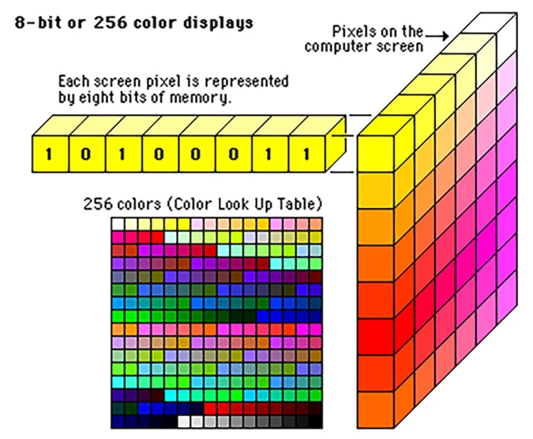
Una imagen de \(256 \times 256\) se vectoriza como \(\boldsymbol{x} \in \mathbb{R}^{65000}\). Si la primera capa tiene \(k_1 = 1000\) nodos, una red totalmente conectada requeriría aproximadamente 65 millones de parámetros \(\theta_{jk}\), con \(j = 1, \dots, 65000\) y \(k = 1, \dots, 1000\). Esta cantidad crece considerablemente con imágenes de mayor resolución (\(1000 \times 1000\)) o a color, donde la entrada se triplica al emplear el modelo RGB.
A medida que se incrementan las capas ocultas, también crece el número de parámetros, lo que eleva la carga computacional y compromete la capacidad de generalización, requiriendo grandes volúmenes de datos para evitar el sobreajuste. Además, vectorizar matrices de imágenes implica pérdida de información, al ignorar relaciones espaciales entre píxeles. Por ello, los métodos de generación de características buscan extraer dependencias estadísticas que capturen dichas correlaciones y permitan codificar eficazmente la información relevante para el aprendizaje.
Al emplear convoluciones, se pueden abordar simultáneamente ambos problemas, es decir, el de la explosión de parámetros y el de la extracción de información estadística útil. Los pasos básicos de cualquier red convolucional son:
la etapa de convolución,
el paso de no linealidad,
el paso de agrupación.
11.16.2. La etapa de convolución#
Una forma de reducir el número de parámetros es mediante el reparto de pesos. Ahora tomaremos prestada esta idea del reparto de pesos y la utilizaremos de una forma más sofisticada. Para ello, nos centraremos en el caso en que la entrada de la red esté formada por imágenes. La imagen matricial de entrada se denomina \(I\).
{kind=link}
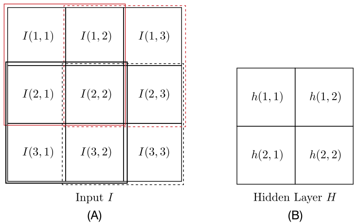
Fig. 11.21 (A) Imagen matricial de entrada de \(3\times 3\). (B) Nodos de la capa oculta.#
Para el caso de la Fig. 11.21, se trata de una matriz de 3 × 3; nótese que la entrada es no vectorizada. Para enfatizar que nos apartaremos de la lógica de las operaciones de multiplicar-añadir (producto interno) de las redes feed-forward completamente conectadas, utilizaremos un símbolo diferente \(h\) en lugar de \(\theta\), para denotar los parámetros asociados.
Introducimos ahora el concepto de reparto de pesos. Recordemos que en una red totalmente conectada, cada nodo está asociado con un vector de parámetros, \(\boldsymbol{\theta}_{i}\), para el nodo \(i\)th cuya dimensionalidad es igual al número de nodos de la capa anterior. En cambio, ahora cada nodo estará asociado a un único parámetro. Para ello, dispondremos los nodos en forma de matriz bidimensional, como se muestra en Fig. 11.21 (B). Para el caso de la figura, hemos supuesto cuatro nodos dispuestos en una matriz de 2 × 2, \(H\).
Observación
El primer nodo se caracteriza por \(h(1, 1)\), el segundo por \(h(1, 2)\), y así sucesivamente. En otras palabras, cualquier conexión que termine en el primer nodo se multiplicará por el mismo peso \(h(1, 1)\), y un argumento similar es válido para el resto de los nodos. Este razonamiento reduce drásticamente el número de parámetros. Sin embargo, para que esto tenga sentido, tenemos que alejarnos de la lógica de las operaciones de producto interior de las redes totalmente conectadas.
Para entender por qué, supongamos que utilizamos un único parámetro por nodo en una red totalmente conectada. Entonces, la salida del combinador lineal asociado al primer nodo sería \(O(1, 1) = h(1, 1)a\), donde \(a\) es la suma de todas las entradas al nodo recibidas de la capa anterior. La salida respectiva del segundo nodo sería \(O(1, 2) = h(1, 2)a\), y así sucesivamente. Por lo tanto, todos los nodos proporcionarían básicamente la misma información con respecto a los valores de entrada; la única diferencia serían los distintos pesos que actúan sobre la misma información de entrada de la capa anterior.
Pasemos ahora a introducir un concepto diferente, en el que mantenemos un único parámetro por nodo, aunque cada una de las salidas de una capa oculta transmite información diferente con respecto a las distintas entradas que se reciben de la capa anterior.
Para ello, introduciremos las convoluciones. En este contexto, los nodos de la capa oculta se interpretan como elementos de una matriz \(H\), y convolucionamos \(H\) con la matriz de entrada entrada \(I\). El primer valor de salida de la capa oculta será
El resultado anterior se obtiene si colocamos la matriz \(H\) de \(2\times2\) sobre \(I\), empezando por la esquina superior izquierda (el cuadrado rojo de Fig. 11.21(A) indica la posición de la matriz \(H\)). A continuación, multiplicamos los elementos en las partes superpuestas de las dos matrices y los sumamos. Desde un punto de vista físico, el valor \(O(1, 1)\) resultante es una media ponderada sobre un área local dentro de la matriz \(I\).
En la operación anterior, el área correspondiente de la imagen está formada por los píxeles de la parte superior izquierda 2 × 2 de la matriz \(I\). Para obtener el segundo valor de salida, \(O(1, 2)\), deslizamos \(H\) un píxel hacia la derecha, como indica el recuadro rojo punteado, y repetimos las operaciones, es decir
Siguiendo el mismo razonamiento, deslizamos \(H\) para “escanear” toda la imagen matricial; así, se obtienen otros dos valores de salida \(O(2, 1)\) y \(O(2, 2)\). Las cuatro posiciones posibles de \(H\) encima de \(I\) se indican en la Fig. 11.21(A) por los cuadros cuadrados de color rojo completo, rojo punteado, gris oscuro y gris punteado. Para cada posición se obtiene un valor de salida. Por lo tanto, bajo el escenario descrito anteriormente, las salidas de la primera capa oculta forman una matriz de \(2\times 2\), \(O\). Cada uno de los elementos de la matriz de salida codifica información de un área diferente de la imagen de entrada.
Convolución
En el entorno más general, la operación de convolución entre dos matrices, \(H\in R^{m\times m}\) e \(I\in\mathbb{R}^{l\times l}\), es otra matriz, definida como
En otras palabras, \(O(i, j)\) contiene información en un área de ventana de la matriz de entrada. De acuerdo con la definición de la Eq. (11.11) el elemento \(I(i, j)\) es el elemento superior izquierdo de esta área de la ventana. El tamaño de la ventana depende del valor de \(m\). El tamaño de la matriz de salida depende de las suposiciones que se adopten sobre cómo tratar los elementos/píxeles en los bordes de \(I\).
En sentido estricto, en la jerga del procesamiento de señales, la Eq. (11.11) se conoce como operación de correlación cruzada. Para la operación de convolución, primero hay que invertir los índices. Sin embargo, este es el nombre que ha “sobrevivido” en la comunidad del aprendizaje automático y bien nos adherimos a él. Al fin y al cabo, ambas son operaciones ponderadas sobre los píxeles dentro de un área de ventana de una imagen.
Observation 11.1
La discusión anterior nos “obliga” a pensar en una capa oculta como una colección de nodos uno al lado del otro. En cambio, en una CNN, cada capa oculta corresponde a una (o a más de una, como pronto veremos) matriz \(H\). Además, \(H\) se utiliza para realizar convoluciones.
Desde el punto de vista del tratamiento de señales, esta matriz es un
filtro que actúa sobre la entrada para proporcionar la salida.En la jerga del aprendizaje de maquinas, también se denomina matriz kernel en lugar de filtro. La matriz de salida suele denominarse la matriz del mapa de características.
En resumen, al realizar convoluciones, en lugar de operaciones de producto interno, hemos conseguido
Los parámetros que componen la capa oculta son compartidos por todos los píxeles de entrada y no tenemos un conjunto dedicado de parámetros por elemento de entrada (píxel)
Las salidas de la capa oculta
codifican la información de correlación de vecindad local de las distintas zonas de la imagen de entrada.Además, como la salida de la capa oculta también es una matriz de imágenes, se puede considerar como la entrada a una segunda capa oculta y construir así una red con muchas capas, cada una de las cuales realiza convoluciones.
De hecho, estas operaciones de filtrado se han utilizado tradicionalmente para generar características a partir de imágenes. La diferencia era que los elementos de la matriz de filtrado se preseleccionaban. Tomemos ejemplo, la siguiente matriz:
El filtro anterior se conoce como detector de bordes. Convolucionando una matriz de imagen, \(I\) , con la matriz anterior, \(H\),detecta los bordes de una imagen. La Fig. 11.22A muestra la imagen de un barco y la Fig. 11.22B muestra la salida después del filtrado de la imagen de la izquierda con la matriz de filtrado \(H\) anterior.

Fig. 11.22 (A) Imagen original y (B) Bordes de la imagen extraídos tras filtrar la matriz de la imagen original con el filtro \(H\) de la ecuación Eq. (11.12). Fuente [Theodoridis, 2020].#
La detección de bordes es de gran importancia en la comprensión de imágenes. Además, cambiando adecuadamente los valores en \(H\), se pueden detectar bordes en diferentes orientaciones, por ejemplo, diagonal, vertical, horizontal; en otras palabras, cambiando los valores de \(H\) se pueden generar diferentes tipos de características.
from skimage.color import rgb2gray
from skimage.io import imread
import numpy as np
from scipy import signal
import matplotlib.pylab as pylab
im = rgb2gray(imread('imgs/cameraman.jpg')).astype(float)
print(im.shape, np.max(im))
blur_box_kernel = np.ones((3,3)) / 9
edge_laplace_kernel = np.array([[0,1,0],[1,-4,1],[0,1,0]])
edge_laplace_kernel
im_blurred = signal.convolve2d(im, blur_box_kernel)
im_edges = np.clip(signal.convolve2d(im, edge_laplace_kernel), 0, 1)
fig, axes = pylab.subplots(ncols=3, sharex=True, sharey=True, figsize=(18, 6))
axes[0].imshow(im, cmap=pylab.cm.gray)
axes[0].set_title('Original Image', size=20)
axes[1].imshow(im_blurred, cmap=pylab.cm.gray)
axes[1].set_title('Box Blur', size=20)
axes[2].imshow(im_edges, cmap=pylab.cm.gray)
axes[2].set_title('Laplace Edge Detection', size=20)
for ax in axes:
ax.axis('off')
Nos hemos acercado a la idea que subyace a las CNN
En lugar de utilizar una matriz de filtro/núcleo fija, como en el ejemplo del detector de bordes,
deje el cálculo de los valores de la matriz de filtro, \(H\) ,para la fase de entrenamiento. En otras palabras, hacemos que \(H\) se adapte a los datos y no preseleccionada.En lugar de utilizar una única matriz de filtros, empleamos más de una. Cada una de ellas generará un tipo diferente de características. Por ejemplo, una puede generar bordes diagonales, la otra horizontales, etc. Por lo tanto, cada capa oculta comprenderá más de una matriz de filtrado. Los valores de los elementos de cada una de
las matrices de filtrado se calcularán durante la fase de entrenamiento, optimizando algún criterio. En otras palabras, cada capa oculta de una CNN genera un conjunto de características de forma óptima.

Fig. 11.23 Ilustración de tres filtros/núcleos. Profundidad de la capa oculta (número de filtro) es tres. Fuente [Theodoridis, 2020].#
La Fig. 11.23 ilustra la entrada y la primera capa oculta de una CNN. La entrada comprende una matriz imagen. La capa oculta consta de tres matrices de filtrado, a saber, \(H_{1}, H_{2}, H_{3}\). Nótese que cada matriz es el resultado de convolucionar una matriz de filtros diferente sobre la imagen de entrada. Cuantos más filtros se empleen, más mapas de características se extraerán y, en principio, mejor será el rendimiento de la red.
Sin embargo, cuantos más filtros utilicemos, más parámetros habrá que aprender, lo que plantea problemas computacionales y de sobreajuste. Nótese que cada píxel de una matriz de mapeo de características de salida codifica información dentro del área de la ventana que está definida por la posición correspondiente de la respectiva matriz de filtro.
11.16.3. Ejemplo de uso de Múltiples Kernels en una CNN#
En una Red Neuronal Convolucional (CNN), cada kernel se aplica simultáneamente a la imagen de entrada, generando un mapa de características (feature map).
Proceso de Aplicación
Cada kernel detecta distintos patrones como bordes o texturas.
Cada filtro genera su propio mapa de características, reduciendo dimensiones según el tamaño del kernel, stride y padding.
El resultado es un volumen de salida de tamaño \(H' \times W' \times N\), donde \(N\) es el número de filtros (kernels).
Ejemplo con Tres Kernels: Si una imagen RGB de \(32 \times 32 \times 3\) se procesa con tres kernels de \(3 \times 3 \times 3\), la salida será: \(30 \times 30 \times 3\)
Conclusión: Cada kernel opera en paralelo, generando su propio mapa de características. El número de filtros define la profundidad de la salida. Las dimensiones dependen de los hiperparámetros de convolución.
Observation 11.2
Una característica importante de una CNN es que la invarianza de traslación (
reconoce patrones en una imagen sin importar dónde se encuentren esos patrones) está integrada de forma natural en la red y es un subproducto de las circunvoluciones implicadas. De hecho, estas últimas se realizan deslizando la misma matriz de filtros sobre toda la imagen.Así, si un objeto presente en una imagen se coloca en otra posición, la única diferencia sería que la contribución de este objeto a la salida también se desplazará la misma cantidad en el número de píxeles.
Es interesante señalar que existen pruebas sólidas en el campo de la neurociencia visual de que en el ser humano se realizan cálculos similares. (ver [Hubel and Wiesel, 1962, Serre et al., 2007]). La noción de convoluciones fue usada inicialmente por [Fukushima et al., 1983] en el contexto del aprendizaje no supervisado.
A continuación, presentamos algunos términos de la jerga utilizada en relación con las CNN:
Profundidad: La profundidad de una capa es el número de matrices de filtro que se emplean en esta capa. No debe confundirse profundidad de la red, que corresponde al número total de capas ocultas utilizadas. A veces, nos referimos al número de filtros como el número de canales.Campo receptivo: Cada píxel de una matriz de características de salida resulta como una media ponderada de los píxeles dentro de un área específica de la matriz imagen de entrada (o de la salida de la capa anterior). El área específica que corresponde a un píxel se conoce como su campo receptivo (ver Fig. 11.23).Deslizamiento(stride): En la práctica, en lugar de deslizar la matriz de filtros de píxel en píxel, se puede deslizar, por ejemplo, \(s\) píxeles. Este valor se conoce como stride. Para valores de \(s > 1\), se obtienen matrices de mapas de características de menor tamaño. Esto se ilustra en Fig. 11.24A y B.
{kind=link}
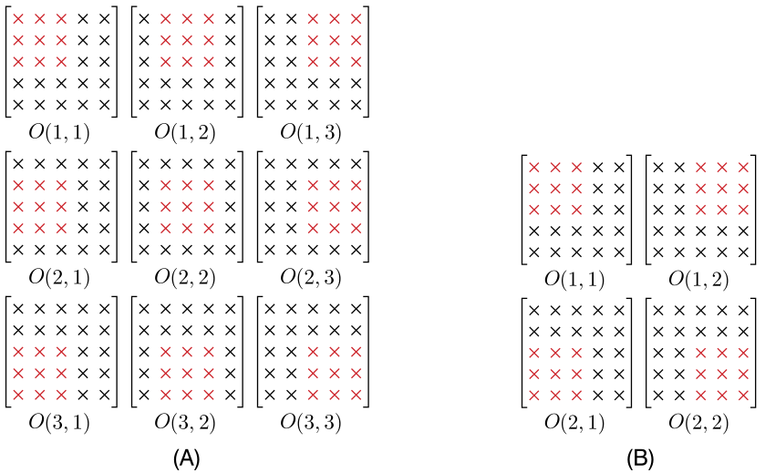
Fig. 11.24 Matriz de entrada y filtro de tamaños 5 × 5 y 3 × 3 respectivamente. En (A), el paso es igual a \(s = 1\) y en (B) es igual a \(s = 2\). En (A) la salida es una matriz de tamaño 3 × 3 y en (B) de tamaño 2 × 2. Fuente [Theodoridis, 2020].#
Relleno de ceros(padding): A veces, se utilizan ceros para rellenar la matriz de entrada alrededor de los píxeles del borde. De esta forma, la dimensión de la matriz aumenta. Si la matriz original tiene dimensiones \(l\times l\), después de expandirla con \(p\) columnas y filas, las nuevas dimensiones pasan a ser (\(l + 2p\)). Esto se muestra en la Fig. 11.25.

Fig. 11.25 Ejemplo en el que la matriz original es de 5 × 5 y tras rellenarla con \(p = 2\) filas y columnas, su tamaño pasa a ser de 9 × 9. Fuente [Theodoridis, 2020].#
Término de sesgo: Tras cada convolución que genera un píxel en el mapa de características, se añade un sesgo común a todos los píxeles de dicho mapa, calculado durante el entrenamiento. Esto sigue la lógica de compartir parámetros, como ocurre con los filtros en la imagen de entrada..
Se puede ajustar el tamaño de una matriz de mapa de características de salida ajustando el valor del stride, \(s\), y el número de columnas y filas cero adicionales en el relleno. En general, se puede comprobar fácilmente que si \(I\in\mathbb{R}^{l\times l}, H\in\mathbb{R}^{m\times m}\), y \(p\) es el número de filas y columnas adicionales para el relleno, entonces el mapa de características tiene dimensiones \(k\times k\), donde
(11.13)#\[ k=\lfloor\frac{l+2p-m}{s}+1\rfloor, \]y \(\lfloor\cdot\rfloor\) es el operador suelo, i.e \(\lfloor2.7\rfloor=2\).
Por ejemplo, si \(l = 5, m = 3, p = 0\) y \(s = 1\), entonces \(k = 3\). Por otro lado, si \(l = 5, m = 3, p = 0\) y \(s = 2\), entonces \(k = 2\) (ver Fig. 11.24A y B). Nótese que si los valores de \(l, m, p\) y \(s\) son tales que la matriz de filtrado, al deslizarse sobre \(I\), cae fuera de \(I\), estas operaciones no se realizan. Solo realizamos operaciones mientras la matriz filtro esté contenida dentro de \(I\).
11.16.4. El paso de la no linealidad#
Una vez que se han realizado las convoluciones y se ha añadido el término de sesgo a todos los valores del mapa de características, el siguiente paso es
aplicar una no linealidad (función de activación) a cada uno de los píxeles de cada matrizde mapas de características.Se puede emplear cualquiera de las no linealidades que se han comentado anteriormente. Actualmente, la función de activación lineal rectificada,
ReLU, es la más popular.
Show code cell source
import numpy as np
import matplotlib.pyplot as plt
def relu(x):
return np.maximum(0, x)
x = np.linspace(-10, 10, 100)
y = relu(x)
plt.plot(x, y, label='ReLU', color='b')
plt.axhline(0, color='black', linewidth=0.5)
plt.axvline(0, color='black', linewidth=0.5)
plt.grid(True, linestyle='--', alpha=0.6)
plt.legend()
plt.show()
Importancia de ReLU
La función de activación más utilizada en CNN es ReLU (Rectified Linear Unit) por las siguientes razones:
Evita el gradiente desvaneciente: A diferencia de sigmoide o tangente hiperbólica, mantiene gradientes significativos en redes profundas, facilitando el entrenamiento.
Eficiencia computacional: Su cálculo \(\max(0, x)\) es más simple que funciones exponenciales, reduciendo la carga de procesamiento.
Favorece la esparsidad: Al asignar cero a valores negativos, desactiva neuronas, mejorando eficiencia y generalización.
Acelera el entrenamiento: Su linealidad en valores positivos y bajo costo computacional permiten una convergencia más rápida.
No obstante, puede generar neuronas muertas cuando ciertos pesos anulan permanentemente la activación. Para evitarlo, existen variantes como Leaky ReLU y PReLU.
La Fig. 11.26A muestra la imagen obtenida después de filtrar la imagen original del barco con el detector de bordes en la (11.12) y la Fig. 11.26B muestra el resultado que se obtiene tras la aplicación de la no linealidad en cada píxel individual.

Fig. 11.26 (A) Imagen donde se han extraído los bordes y (B) imagen resultante tras aplicar el en cada uno de los píxeles. Fuente [Theodoridis, 2020].#
11.16.5. La etapa de agrupación#
Pooling espacial: Este proceso reduce la dimensionalidad de las matrices de mapas de características. Se emplea una ventana deslizante, cuyo desplazamiento se define mediante un parámetro stride. La operación selecciona un único valor que representa todos los píxeles dentro de la ventana.La operación más común es la agrupación máxima (max pooling), donde se selecciona el píxel de mayor valor dentro de la ventana. Otra opción es la agrupación promedio (average pooling), que toma el valor medio de los píxeles, también conocida como pooling de suma. En la ilustración, una matriz de 6 × 6 se reduce aplicando una ventana de 2 × 2 con un stride de 2.
{kind=link}
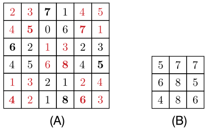
Fig. 11.27 (A) Matriz original de tamaño de 6 × 6. Agrupación mediante una ventana de 2 × 2 y un stride \(s = 2\). Valor máximo por ubicación de la ventana se indica en negrita. (B) Matriz 3 × 3 resultante tras la agrupación máxima. Fuente [Theodoridis, 2020].#
La misma fórmula de la Eq. (11.13) permite calcular el tamaño de la matriz resultante en el caso general. La agrupación reduce la dimensionalidad y el tamaño de las matrices, lo que es crucial, ya que cada salida se convierte en la entrada de la siguiente capa. Controlar el tamaño es esencial para gestionar el número de parámetros sin comprometer excesivamente la información.
{kind=link}
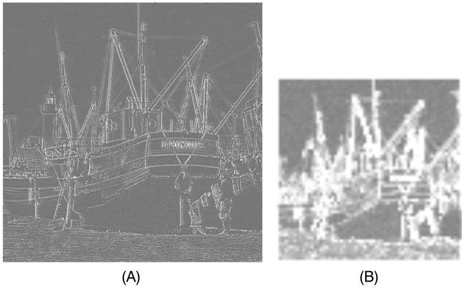
Fig. 11.28 (A) Bordes de la imagen del barco tras la aplicación de ReLu (B) Imagen resultante tras aplicar max-pooling utilizando una ventana de 8 × 8. Fuente [Theodoridis, 2020].#
Observación
Fig. 11.28 muestra el efecto de aplicar el pooling a la imagen de la izquierda. Sin duda, los bordes se vuelven más gruesos, pero la información relacionada con los bordes puede extraerse. Nótese que después de la agrupación, el tamaño de la matriz imagen es reducido.
Desde otro punto de vista, el polling resume las estadísticas dentro del área pooling. El pooling puede considerarse un tipo especial de
filtrado, en el que, en lugar de la convolución, se selecciona el valor máximo (o medio) de la imagen. El pooling ayuda a que la representación sea aproximadamente invariante a pequeñas traslaciones de la entrada.
11.16.6. Convolución sobre volúmenes#
Observación
En la Fig. 11.23, la primera capa oculta genera tres matrices de imágenes como entrada para la siguiente capa, similar a la representación RGB de imágenes en color, donde cada matriz indica la intensidad de un color en cada píxel con valores de 0 a 255.
Rojo (R) |
Verde (G) |
Azul (B) |
Color resultante |
|---|---|---|---|
255 |
0 |
0 |
🔴 Rojo puro |
0 |
255 |
0 |
🟢 Verde puro |
0 |
0 |
255 |
🔵 Azul puro |
255 |
255 |
0 |
🟡 Amarillo (Rojo + Verde) |
0 |
255 |
255 |
🔵 Cian (Verde + Azul) |
255 |
0 |
255 |
🟣 Magenta (Rojo + Azul) |
255 |
255 |
255 |
⚪ Blanco (Máxima intensidad) |
0 |
0 |
0 |
⚫ Negro (Sin intensidad) |
Las entradas no son matrices bidimensionales, sino conjuntos de matrices bidimensionales, conocidos en matemáticas como tensores tridimensionales o volúmenes. Se adopta este último término por su relación con la geometría. El desafío radica en definir cómo realizar convoluciones en estos volúmenes.
import numpy as np
import matplotlib.pyplot as plt
imagen = np.array([
[[255, 0, 0], [0, 255, 0], [0, 0, 255]], # Rojo, Verde, Azul
[[255, 255, 0], [0, 255, 255], [255, 0, 255]], # Amarillo, Cian, Magenta
[[255, 255, 255], [128, 128, 128], [0, 0, 0]] # Blanco, Gris, Negro
], dtype=np.uint8)
canal_rojo = imagen[:, :, 0] # Matriz de valores R
canal_verde = imagen[:, :, 1] # Matriz de valores G
canal_azul = imagen[:, :, 2] # Matriz de valores B
plt.imshow(imagen)
plt.show()
print("Matriz del canal Rojo (R):\n", canal_rojo)
print("Matriz del canal Verde (G):\n", canal_verde)
print("Matriz del canal Azul (B):\n", canal_azul)

Fig. 11.29 Se apilan \(d\) matrices de tamaño \(h\times w\) cada una para formar un volumen de tamaño \(h \times w\times d\). En este caso, \(h = w = 5\) y \(d = 3\). Fuente [Theodoridis, 2020].#
Por convención, las tres dimensiones de un volumen se representarán como \(h\) para la altura, \(w\) para la anchura y \(d\) para la profundidad. Nótese que la profundidad \(d\) corresponde al número de imágenes implicadas. Así pues, si tenemos tres imágenes de 256 × 256, entonces \(h = w = 256\) y \(d = 3\) y diremos que el volumen es de tamaño (dimensión) 256 × 256 × 3. Fig. 11.29 ilustra la geometría asociada a las respectivas definiciones.
Tipos de formas tensoriales
En el procesamiento de imágenes, cada canal es una matriz 2D que contiene un tipo específico de información. Cuando se combinan varios canales, obtenemos un tensor 3D con forma:
\[ \text{(alto, ancho, canales)} \]Ejemplos de formas
Tipo de imagen |
Forma del tensor |
|---|---|
Escala de grises |
|
RGB (color) |
|
RGBA (color + transparencia) |
|
Satelital multiespectral |
|
Hiperespectral |
|
En
TensorFlow, cuando trabajamos con lotes de imágenes, la forma es\[ \text{(batch_size, alto, ancho, canales)} \]Las imágenes con más de tres canales se utilizan ampliamente en ciencia, ingeniería y medicina. Algunos casos representativos son los siguientes:
Teledetección Satelital
Sentinel-2 (ESA): imágenes multiespectrales con 13 bandas que capturan información en el visible, infrarrojo cercano e infrarrojo de onda corta.
Aplicaciones: monitoreo de cultivos, detección de deforestación, seguimiento de incendios forestales, calidad del agua.
Landsat-8 (NASA/USGS): imágenes con 11 bandas espectrales para estudios ambientales y urbanos.
Ejemplo: cálculo del NDVI (Normalized Difference Vegetation Index) para medir la salud de la vegetación.
Medicina e Imágenes Biomédicas
Resonancia Magnética (MRI): puede incluir múltiples secuencias (T1, T2, FLAIR, DWI, etc.), cada una representando un canal con distinta información anatómica o funcional.
Aplicaciones: detección de tumores, diagnóstico neurológico.
Microscopía de fluorescencia: imágenes con canales multicolor para visualizar diferentes proteínas o estructuras celulares.
Defensa y Detección
Radar de Apertura Sintética (SAR): imágenes con varios canales que representan diferentes polarizaciones de radar.
Aplicaciones: detección de barcos, monitoreo de movimientos de tierra, vigilancia marítima.
Agricultura de Precisión
Drones multiespectrales: capturan entre 5 y 10 bandas (RGB + infrarrojos).
Aplicaciones: estimación de rendimiento de cultivos, riego inteligente, detección temprana de plagas.
Industria y Calidad
Cámaras hiperespectrales (200+ canales): cada canal corresponde a una longitud de onda distinta.
Aplicaciones: inspección de alimentos (detección de contaminantes), control de calidad en textiles, minería (identificación de minerales).
Convolución de volúmenes
En una capa con entrada de dimensiones \(h \times w \times d\), los filtros de las capas ocultas también son volúmenes, pero deben tener la misma profundidad \(d\) que la entrada, aunque su altura y anchura pueden variar.
Si la entrada es un volumen \(\boldsymbol{I}\) de \(l \times l \times d\), este consta de \(d\) imágenes \(I_r\) de \(l \times l\). Un filtro \(\boldsymbol{H}\) de \(m \times m \times d\) también se compone de \(d\) imágenes \(H_r\) de \(m \times m\). La convolución se define a partir de estos elementos.
Convolucionar las correspondientes matrices de imágenes bidimensionales para generar \(d\) matrices bidimensionales de salida, es decir
La convolución de los dos volúmenes, \(\boldsymbol{I}\) y \(\boldsymbol{H}\), se define como
\[ O=\sum_{r=1}^{d}O_{r}. \]En otras palabras, la
convolución (denotada por\(\star\))de dos volúmenes es una matriz bidimensional, es decir,\[ \text{3D volume}\star\text{3D volume}=\text{2D array}. \]

Fig. 11.30 Convolución \(\text{3D volume}\star\text{3D volume}=\text{2D array}\). \(h = w = l, h = w = m\) y \(d = 3\).#
La operación se ilustra en la Fig. 11.30. Las matrices correspondientes (mostradas por diferentes colores y tipos de líneas). Las tres matrices de salida (\(d = 3\)) se suman posteriormente para formar la convolución de los dos volúmenes. La dimensión \(k\) de la salida depende de los valores de \(l\) y \(m\), del stride \(s\) y del padding \(p\), si se utiliza, según la Eq. (11.13).
Observación
En la práctica, cada capa de una CNN comprende varios de estos volúmenes de filtrado. Por ejemplo, si la entrada a una capa es un volumen \(l\times l\times d\), y hay, digamos, \(c\) volúmenes de núcleo, cada uno de dimensiones \(m\times m\times d\), la salida de la capa será un volumen \(k\times k\times c\), donde \(k\) se determina la Eq. (11.13).
11.16.7. Red en red y convolución 1 × 1#
Observación
La convolución 1 × 1 no tiene sentido cuando se trata de matrices bidimensionales. En efecto una matriz de filtro 1 × 1 es un escalar. Convolucionar una matriz \(I\) de \(l\times l\) con un escalar \(a\) equivale a deslizar el valor escalar sobre todos los píxeles y multiplicar cada uno de ellos por \(a\). El resultado es la trivial \(aI\) .
Sin embargo, cuando se trata de volúmenes, la convolución 1 × 1 tiene sentido. En este caso, el filtro correspondiente, \(\boldsymbol{H}\), es un volumen de tamaño \(1\times 1\times d\). Geométricamente, se trata de un “tubo”, con \(h = w = 1\) y \(d\) elementos en profundidad, \(h(1, 1, r), r = 1, 2,\dots,d\). Por lo tanto, el resultado de la convolución de un volumen \(\boldsymbol{I}\) de \(l\times l\times d\) con un \(1\times 1\times d\) volumen \(H\) es la media ponderada,
\[ O=\boldsymbol{I}\star\boldsymbol{H}=\sum_{r=1}^{d}h(1, 1, r)I_{r} \]donde \(I_{r},~r=1,2,\dots,d,\) son las \(d\) matrices, cada una de dimensiones \(l\times l\), que comprende \(\boldsymbol{I}\).
Convolución \(1\times 1\)
Ahora bien, cabe preguntarse por qué necesitamos una operación de este tipo en la práctica. La respuesta está relacionada con el tamaño de los volúmenes implicados; mediante el uso de convoluciones \(1\times 1\), se puede
controlar y cambiar su tamaño para adaptarlo a las necesidades de la red.Supongamos que en una etapa/capa de una red profunda hemos obtenido un volumen \(\boldsymbol{I}\) de dimensiones \(k\times k\times d\). Para cambiar la profundidad de \(d\) a \(c\), conservando el mismo tamaño \(k\), para la altura y la anchura, empleamos \(c\) volúmenes, \(H_{t}, t = 1, 2,\dots,c\), cada uno de dimensiones \(1\times 1\times d\). Al realizar las \(c\) convoluciones obtenemos
\[ O_{t}=\boldsymbol{I}\star\boldsymbol{H}_{t}=\sum_{r=1}^{d}h_{t}(1, 1, r)I_{r},~t=1,2,\dots,c. \]Apilando \(O_{t}, t = 1, 2,\dots,c\), obtenemos el volumen \(\boldsymbol{O}\) de dimensión \(k\times k\times c\) (ver Fig. 11.31).
La información original se sigue conservando en el nuevo volumen, de forma promediada. A menudo, una vez obtenido el nuevo volumen \(\boldsymbol{O}\), sus elementos se “empujan” a través de una no linealidad, por ejemplo,
ReLU.La convolución \(1\times 1\) seguida de la no linealidad se denomina
operación de red en redy su finalidad es añadir una etapa de no linealidad adicional en el flujo de operaciones a través de la red. Por lo tanto, en este contexto, si \(c<d\), la operación de red en red puede considerarse una técnica de reducción de la dimensionalidad no lineal.
{kind=link}
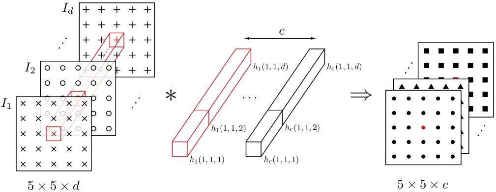
Fig. 11.31 Convolución \(1\times 1\), con \(c\) tubos de dimensión \(1\times 1\times d\), donde \(d\) es la profundidad del volumen de entrada. Fuente [Theodoridis, 2020].#
Ejemplo
Consideremos que la entrada de una capa es un volumen \(\boldsymbol{I}\) de 28 × 28 × 192. El objetivo es producir a la salida de la capa un volumen, \(O\), de dimensión 28 × 28 × 32. Para ello emplear 5 × 5 convoluciones iguales y un volumen intermedio \(\boldsymbol{O}'\) de dimensiones \(28\times 28\times 16\). Nótese que en la última capa se usó padding de 2 píxeles en cada borde.
Observe que, rellenando todas las matrices apiladas en \(\boldsymbol{I}\) con \(p\) cero columnas y filas, se tiene que el número de multiplicaciones y adiciones (MADS) es \(3.7\times 10^{6}\times 32\approx 120~\) millones MADS. Además, usando convoluciones \(1\times 1\), este número se reduce a \(28^{2}\times 25\times 16\times 32\approx 10\) millones MADS (ver [Theodoridis, 2020]).
A menudo, el volumen intermedio, \(\boldsymbol{O}'\), se conoce como capa
cuello de botella (bottleneck layer); su función es “reducir” primero el tamaño del volumen de entrada, antes de obtener el volumen de salida final (ver Fig. 11.32).
{kind=link}
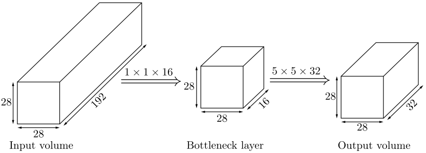
Fig. 11.32 Capa cuello de botella. Fuente [Theodoridis, 2020].#
11.16.8. Arquitectura CNN completa#
La forma típica de una red convolucional completa consiste en una
secuencia de capas convolucionales, cada una de las cuales que comprende los tres pasos básicos, a saber,convolución (Conv.), no linealidad (ReLU) y agrupación (Pooling), como se describe al principio de esta sección. Dependiendo de la aplicación,se pueden apilar tantas capas como sea necesario, donde la salida de una capa se convierte en la entrada de la siguiente. Las entradas y salidas de cada capa son volúmenes, como se ha descrito anteriormente.

Fig. 11.33 Arquitectura CNN completa. Fuente [Theodoridis, 2020].#
Procedimiento de una CNN completa
En la primera capa, se aplican filtros para realizar convoluciones seguidas de una transformación no lineal. Luego, la operación de pooling reduce las dimensiones de la salida, que sirve como entrada para la siguiente capa. Este proceso se repite hasta que el volumen final se vectoriza, en un paso conocido como flattening.
El resultado es un vector de características obtenido a partir de las transformaciones aplicadas en cada capa convolucional. Este vector se utiliza como entrada para un modelo de aprendizaje, como una red neuronal totalmente conectada o una máquina de vectores de soporte.
Observación
La estrategia consiste en reducir dimensiones mientras se incrementa la profundidad, aumentando filtros por etapa para extraer más características. La cantidad de capas convolucionales y totalmente conectadas depende de la aplicación, sin un método formal para su determinación, por lo que se elige mediante evaluación. Se sugiere partir de arquitecturas existentes, y el aprendizaje Bayesiano facilita la selección óptima de nodos o filtros.
11.16.9. Características en una CNN#
Las características (features) en una Red Neuronal Convolucional (CNN) son patrones visuales que la red aprende a reconocer en las imágenes. Se extraen automáticamente a través de capas convolucionales aplicadas en diferentes niveles de abstracción. ¿Cuáles son las características en una CNN? Las características son representaciones numéricas que describen el contenido visual de una imagen. Se generan a través de filtros convolucionales que detectan patrones en distintos niveles:
Características de bajo nivel(Primeras capas)
Se detectan patrones simples como:
Bordes
Texturas
Esquinas
Gradientes de color
Ejemplo: Un filtro Sobel detecta los bordes en una imagen.
Características de nivel intermedio (Capas medias)
Se combinan los bordes y texturas detectados antes para formar estructuras más complejas, como:
Formas básicas (círculos, líneas curvas)
Contornos de objetos
Partes de objetos (ojos, nariz, ruedas)
Ejemplo: En una CNN que detecta rostros, esta capa podría identificar una nariz o un ojo.
Características de alto nivel (Últimas capas)
Se forman representaciones abstractas y semánticas de la imagen, como:
Objetos completos (caras, coches, animales)
Relaciones espaciales entre partes
Categorización (perro vs. gato)
Ejemplo: En una CNN entrenada para clasificar animales, las capas profundas pueden reconocer la silueta completa de un gato.
Ejemplo Visual: Si la CNN clasifica gatos y perros:
Bordes → Detecta líneas y curvas.
Formas intermedias → Identifica orejas, ojos y hocico.
Características de alto nivel → Distingue un gato de un perro.
11.16.10. Arquitecturas de Redes Neuronales Convolucionales#
Introducción
El diseño de una CNN sigue pasos básicos con múltiples variantes arquitectónicas y optimizaciones para mejorar la eficiencia computacional (ver Fig. 11.33). Implementarlas requiere un gran esfuerzo técnico para su aprendizaje y aplicación.
A continuación, se presentan redes convolucionales clásicas, cuya comprensión es clave para profundizar en el tema, aunque algunos de sus métodos ya no se utilicen. Los estudios citados ofrecen una base sólida para el aprendizaje de las CNN.
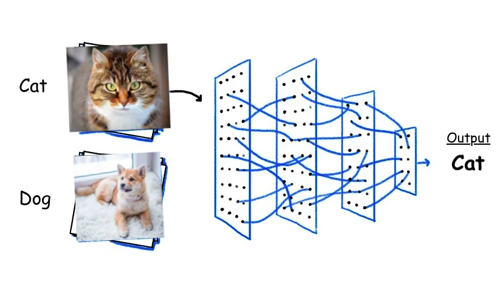
11.16.11. LeNet-5#
LeNet-5
Este es un ejemplo típico de la primera generación de CNNs y fue construido para reconocer dígitos de números (ver [LeCun et al., 1998]). Por razones históricas, comentemos un poco su arquitectura. La entrada de la red consiste en imágenes en escala de grises de tamaño 32 × 32 × 1. La red emplea dos capas de convolución. En la primera capa, el volumen de salida tiene un tamaño de 28 × 28 × 6, que tras la agrupación se convierte en 14 × 14 × 6.
Las dimensiones del volumen en la segunda capa eran 10 × 10 × 16 y, tras la agrupación, 5 × 5 × 16. La no linealidad utilizada entonces era de tipo
sigmoid. Nótese que laaltura y la anchura de los volúmenes disminuyen y la profundidad aumenta, como se ha señalado antes. El número de elementos del último volumen es igual a 400. Estos elementos se apilan en un vector y alimentan los correspondientes nodos de entrada de una red totalmente conectada.Esta última consta de dos capas ocultas con 120 nodos en la primera y 84 nodos en la segunda. Hay 10 nodos de salida, uno por dígito, que utilizan una no linealidad
softmax. El número total de parámetros implicados es del orden de 60.000.
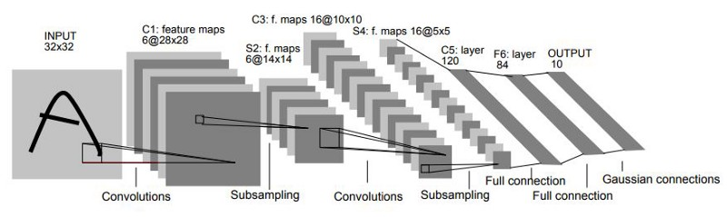
Fig. 11.35 Arquitectura LeNet-5. Fuente [LeCun et al., 1998].#
11.16.12. AlexNet#
AlexNet
Esta red también es histórica ya que, demostró que el punto crucial para hacer grandes redes es la disponibilidad de grandes conjuntos de entrenamiento [Krizhevsky et al., 2012]. El artículo relacionado es el que realmente hizo volver a las CNN y actuó como catalizador para su adopción mucho más allá de la tarea de reconocimiento de dígitos. La Alexnet es un desarrollo de la LeNet-5, pero es mucho más grande e implica aproximadamente 60 millones de parámetros.
Las entradas a la red son imágenes RGB de tamaño 227 × 227 × 3. Comprende cinco capas ocultas y el volumen final consta de 9216 elementos que alimentan una red totalmente conectada con dos capas ocultas de 4096 unidades cada una. La salida consta de 1000 nodos
softmax(uno por clase) para reconocer imágenes del conjunto de datos ImageNet para el reconocimiento de objetos.ReLUse ha utilizado como no linealidad en las capas ocultas.
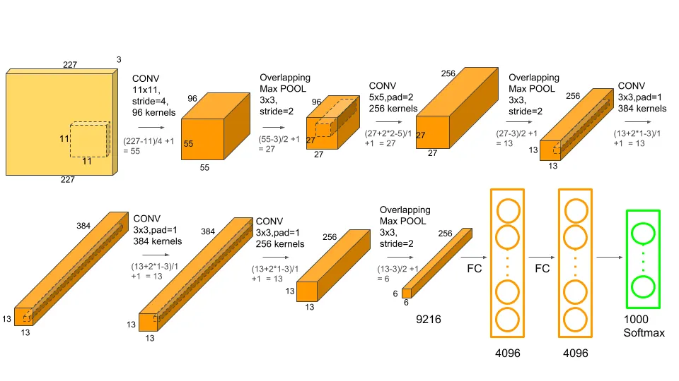
Fig. 11.36 Arquitectura LeNet-5. Fuente [Krizhevsky et al., 2012].#
11.16.13. VGG-16#
VGG-16
Esta red [Simonyan and Zisserman, 2014] es mucho mayor que AlexNet. Implica un total de aproximadamente 140 millones de parámetros. La principal característica de esta red es su regularidad. Involucra filtros 3 × 3 para realizar las mismas convoluciones utilizando padding y stride \(s = 1\) y ventanas 2 × 2 para maxpooling con stride \(s = 2\). Cada vez que se realiza un pooling, la altura y la anchura de los volúmenes se reducen a la mitad y la profundidad se multiplica por dos.
Partiendo de 224 × 224 × 3 imagen de entrada y después de 13 capas el volumen final tiene un tamaño de 7 × 7 × 512, un total de 25088 elementos, que tras su vectorización alimenta a una red totalmente conectada con 2 capas ocultas de 4096 nodos cada una. Los 1000 nodos de salida están construidos en torno a la no linealidad
softmaxy se ha utilizadoReLUpara las unidades ocultas en toda la red.

Fig. 11.37 Arquitectura VGG-16. Fuente [Simonyan and Zisserman, 2014].#
El diseño de
VGG-16se basó en la hipótesis de que aumentar la profundidad de una red convolucional, mientras se usan pequeños filtros, conduciría a un mejor rendimiento en la tarea de clasificación de imágenes. La naturaleza homogénea de la arquitectura con filtros 3x3 repetidos permitió que la red aprendiera características jerárquicas más profundas, conservando al mismo tiempo una buena eficiencia computacional.El uso de filtros pequeños y capas profundas fue una decisión clave porque:
Filtros más pequeños capturan características locales, pero apilados sucesivamente tienen un campo receptivo mayor.
Mayor profundidad permite extraer características más abstractas y complejas a medida que las capas avanzan.
11.16.14. GoogleNet y la red Inception#
GoogleNet y la red Inception
La arquitectura utilizada en esta red se desvía del “arquetípico” que se muestra en Fig. 11.33. En el corazón de esta red se encuentra el llamado módulo de inicio [Szegedy et al., 2015]. Un módulo de inicio consta de filtros de diferentes tamaños y profundidades, así como de una ruta de agrupación diferente.
La arquitectura
Inceptiontoma la salida de una capa y la divide en varias rutas: una usa convolución 1x1 para reducir la profundidad, otra hace pooling seguido de convolución 5x5, y dos rutas realizan convoluciones separadas con filtros 3x3 y 5x5. Se usa una capa de cuello de botella (convolución 1x1) para reducir la carga computacional antes de las convoluciones.En el módulo de inicio, se concatenan los volúmenes de salida de varias trayectorias, permitiendo que la red, durante el entrenamiento, elija las mejores operaciones para cada capa. A medida que se avanza hacia capas superiores, se incrementa la proporción de convoluciones 3 × 3 y 5 × 5, ya que captan rasgos más abstractos. La red tiene 22 capas y 6 millones de parámetros.


Fig. 11.39 Arquitectura Inception. Fuente [Szegedy et al., 2015].#
11.16.15. Redes residuales (ResNets)#
Redes residuales (ResNets)
Ya hemos hablado de las ventajas de diseñar redes profundas. También abordamos la forma de hacer frente al problema de los gradientes que se desvanecen/explotan mediante una combinación de métodos y trucos que permiten que el algoritmo backpropagation converja con suficiente rapidez. Sin embargo, una vez que empezamos a construir redes muy profundas (del orden de decenas o incluso centenares de capas) nos encontramos con el siguiente comportamiento “poco ortodoxo”.
Cabría esperar que, añadiendo más y más capas, el error de entrenamiento mejore o al menos no aumenta. Sin embargo, lo que se observa en la práctica es que
a partir de un cierto número de capas, el error de entrenamiento empieza a aumentar. Esto se ilustra gráficamente en la Fig. 11.40. Este fenómeno no tiene nada que ver con el sobreajuste. Después de todo, estamos hablando del error de entrenamiento y no del de generalización. Parece que esto puede deberse ala tarea de optimización que se vuelve más y más difícil a medida que se añaden más y más capas.

Fig. 11.40 Aumento en lugar de disminución del error cuando el número de capas supera cierto número, en una red muy profunda. (curva roja) como se esperaba a partir de la teoría.#
Interpretación Matemática de una Capa en la Red Neuronal
Cada capa de una red neuronal aplica una función \(H\) que transforma la salida anterior \(\boldsymbol{y}^{r-1}\) en una nueva salida \(\boldsymbol{y}^{r}\):
¿Por qué Añadir Más Capas No Debería Aumentar el Error de Entrenamiento?
Si una capa ha extraído toda la información útil, una capa adicional, en el peor caso, solo replicaría la salida anterior aplicando la función identidad:
\[ \boldsymbol{y}^{r} = H(\boldsymbol{y}^{r-1}) = \boldsymbol{y}^{r-1} \]Es decir, si no hay nada nuevo que aprender, la capa extra solo copiaría la información.
Problema de redes profundas: saturación y dificultades de optimización
En redes profundas, el rendimiento se estanca porque más capas no mejoran la precisión y la optimización enfrenta dificultades para aprender el mapeo de identidad \(H(y^{r-1}) = y^{r-1}\), generando errores por gradientes pequeños o desajustes en los pesos.
Solución propuesta por He et al. (2016): Redes Residuales (ResNets)
En lugar de aprender directamente \(H(y^{r-1})\), se propone un mapeo residual \(F(y^{r-1}) = H(y^{r-1}) - y^{r-1}\), donde la capa solo ajusta la diferencia necesaria en vez de replicar la entrada. Así, la salida se obtiene sumando este ajuste residual:
El uso de la representación residual no es nuevo y ya se ha utilizado anteriormente en el contexto de la cuantificación vectorial. La esencia del aprendizaje residual es introducir el llamado bloque de construcción residual, que se muestra en la Fig. 11.41.

Fig. 11.41 Bloque de construcción residual. Fuente [Theodoridis, 2020].#
De esta manera, un número de capas, digamos, dos, como en el caso de la Fig. 11.41, se apilan y dejamos que estas capas se ajusten explícitamente al mapeo residual, a través de las llamadas conexiones de atajo u omisión. Cada capa de pesos realiza una transformación sobre su entrada, por ejemplo, convoluciones. Si \(\boldsymbol{y}^{r}\) e \(\boldsymbol{y}^{r-1}\) son de dimensiones diferentes, el atajo de mapeo de identidad se modifica a \(W\boldsymbol{y}^{r-1}\), donde \(W\) es una matriz de dimensiones apropiadas.
11.16.16. U-Net: Redes Convolucionales para la Segmentación de Imágenes Biomédicas#

Fig. 11.42 Image segmentation vs Instance segmentation. Fuente v7labs#
En imágenes médicas, la segmentación semántica clasifica cada píxel según una categoría anatómica o patológica, mientras que la segmentación de instancias diferencia objetos individuales dentro de la misma clase. Estas técnicas son esenciales para el diagnóstico automatizado y la planificación clínica.
La arquitectura U-Net, diseñada para segmentación biomédica, permite una segmentación precisa mediante un diseño en forma de U que combina información de contexto con detalles espaciales, mejorando la detección de estructuras complejas en imágenes médicas.
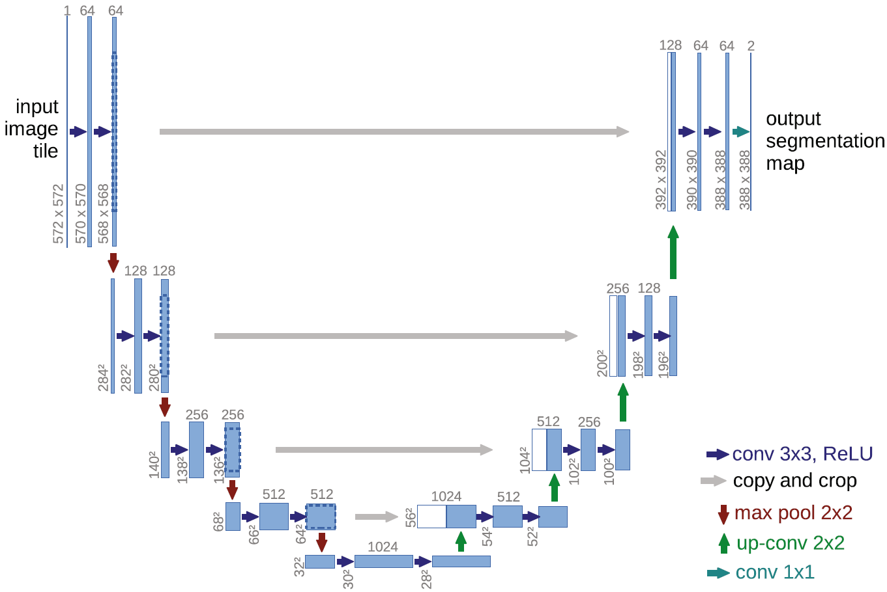
Fig. 11.43 La arquitectura U-Net representa mapas de características con cajas, indicando canales y tamaño, mientras que las flechas señalan las operaciones.#
Arquitectura U-Net
La arquitectura U-Net es una red neuronal convolucional diseñada para la segmentación de imágenes biomédicas. Se basa en una estructura de encoder-decoder con una forma en “U”.
Encoder (contracción): Extrae características mediante convoluciones y capas de pooling para reducir la dimensionalidad.
Bottleneck: Conecta el encoder con el decoder, capturando la información más relevante.
Decoder (expansión): Usa convoluciones transpuestas para recuperar la resolución original de la imagen y refinar la segmentación.
Skip connections: Conectan capas del encoder con el decoder, permitiendo una mejor preservación de detalles.
Esta arquitectura es eficiente con pocos datos y logra segmentaciones precisas, lo que la hace ideal para aplicaciones médicas. Considera
conv 3x3, max pool 2x2, up-conv 2x2, conv 1x1, padding = 0, stride = 1fijos. En elencoderse reduce alto y ancho de los mapeos de caracteristicas mientras que se aumenta la profundidad. Lo contrario ocurre en eldecoder.Al final se aplican 2 convoluciones de
1x1x64(tubos) como las vistas en secciones anteriores, para obtener el último kernel de388x388x2en el que, cada canal representaria una clase diferente a segmentar, y despues de aplicar funciones de activación, lo que resulta en el mapeo de características es, la probabilidad de que un pixel en una respectiva posición pertenezca a la clase representada por cada canal, por ejemplo a la clase (black) o la clase (blue) (clasificación binaria).
La arquitectura U-Net aprende a segmentar imágenes asignando cada píxel a una clase específica.
Entrada (X): Imagen original (ej. un gato en fondo blanco).
Salida esperada (Y): Máscara binaria (1 = gato, 0 = fondo).
El modelo ajusta sus parámetros hasta que pueda predecir correctamente la máscara a partir de una nueva imagen.
¿Cómo se maneja la correspondencia de píxeles?
U-Net genera una salida de menor tamaño que la imagen de entrada debido a la reducción espacial provocada por las capas de max pooling en la fase de contracción y el uso de valid convolutions sin padding. Aunque las up-convolutions intentan recuperar la resolución original, la salida sigue siendo más pequeña.
¿Cómo mantener la correspondencia de píxeles?
Same padding: Mantiene el tamaño original sin postprocesamiento, pero puede introducir valores artificiales en los bordes.
Superposición de parches: Divide la imagen en fragmentos solapados para reconstruir la segmentación completa, útil en imágenes médicas de alta resolución.
Interpolación o recorte: Ajusta el tamaño de salida cuando se usan valid convolutions, aunque puede generar imprecisiones.
Recomendación:
Para conservar el tamaño original, usar same padding en todas las convoluciones.
En imágenes grandes, aplicar superposición de parches para optimizar memoria y evitar artefactos.
Si la red ya está entrenada con valid convolutions, usar interpolación como ajuste final.
11.16.17. Aplicación: Reconocimiento facial de emociones#
Los datos para el siguiente ejemplo pueden ser descargados del siguiente link: Face Sentiment Detection
import warnings
warnings.filterwarnings('ignore')
import tensorflow as tf
print("TensorFlow version:", tf.__version__)
devices = tf.config.list_physical_devices()
print("Available devices:")
for device in devices:
print(device)
gpus = tf.config.list_physical_devices('GPU')
if gpus:
print("TensorFlow is using GPU.")
for gpu in gpus:
gpu_details = tf.config.experimental.get_device_details(gpu)
print(f"GPU details: {gpu_details}")
else:
print("TensorFlow is not using GPU.")
import numpy as np
import pandas as pd
import os
from tensorflow.keras.preprocessing.image import ImageDataGenerator
from tensorflow.keras.utils import load_img
from keras.layers import Conv2D, Dense, BatchNormalization, Activation, Dropout, MaxPool2D, Flatten, MaxPooling2D
from tensorflow.keras.metrics import AUC
from tensorflow.keras.optimizers import Adam, RMSprop, SGD
from keras.callbacks import ModelCheckpoint,EarlyStopping
import datetime
from keras import regularizers
import matplotlib.pyplot as plt
from tensorflow.keras.utils import plot_model
train_dir = '/home/lihkir/Data/face_sentiment_detection/train/'
test_dir = '/home/lihkir/Data/face_sentiment_detection/test/'
def count_exp(path, set_):
dict_ = {}
for expression in os.listdir(path):
dir_ = path + expression
dict_[expression] = len(os.listdir(dir_))
df = pd.DataFrame(dict_, index=[set_])
return df
train_count = count_exp(train_dir, 'train')
test_count = count_exp(test_dir, 'test')
print(train_count)
print(test_count)
train_count.transpose().plot(kind='bar');
test_count.transpose().plot(kind='bar');
plt.figure(figsize=(14,22))
i = 1
for expression in os.listdir(train_dir):
img = load_img((train_dir + expression +'/'+ os.listdir(train_dir + expression)[5]))
plt.subplot(1,7,i)
plt.imshow(img)
plt.title(expression)
plt.axis('off')
i += 1
Creamos los conjuntos de datos de entrenamiento, prueba y validación
train_datagen = ImageDataGenerator(rescale=1.0/255.0,
horizontal_flip=True,
validation_split=0.2)
rescale=1./255: Normaliza las imágenes escalando los valores de los píxeles de un rango de [0, 255] a [0, 1]. Esto es una práctica común para mejorar la eficiencia del entrenamiento de redes neuronales.horizontal_flip=True: Permite aplicar una transformación de “flip” horizontal (volteo) de manera aleatoria a las imágenes, una técnica de data augmentation para hacer que el modelo generalice mejor.validation_split=0.2: Define una división de los datos, reservando el 20% de ellos para validación, lo que significa que el 80% de los datos será usado para entrenamiento.
training_set = train_datagen.flow_from_directory(train_dir,
batch_size=64,
target_size=(48,48),
shuffle=True,
color_mode='grayscale',
class_mode='categorical',
subset='training')
train_dir: Es la ruta del directorio que contiene las imágenes de entrenamiento organizadas en subdirectorios según la clase.batch_size=64: Carga 64 imágenes a la vez (en lotes) para ser procesadas en cada paso del entrenamiento.target_size=(48,48): Redimensiona todas las imágenes al tamaño de 48x48 píxeles. Esto es útil para mantener un tamaño uniforme de las imágenes que ingresan al modelo.shuffle=True: Aleatoriza las imágenes en cada epoch, lo que evita que el modelo se adapte a un orden particular de los datos.color_mode='grayscale': Convierte las imágenes en escala de grises (1 canal en lugar de 3 para imágenes en color RGB).class_mode='categorical': Las etiquetas se asignan como categóricas, es decir, cada imagen pertenece a una clase específica (por ejemplo, clasificación multiclase).subset='training': Utiliza el 80% de los datos (definidos anteriormente convalidation_split=0.2) para entrenamiento.
validation_set = train_datagen.flow_from_directory(train_dir,
batch_size=64,
target_size=(48,48),
shuffle=True,
color_mode='grayscale',
class_mode='categorical',
subset='validation')
subset='validation': Selecciona el 20% de los datos reservados para la validación (definidos anteriormente convalidation_split=0.2)
test_datagen = ImageDataGenerator(rescale=1.0/255.0,
horizontal_flip=True)
test_set = test_datagen.flow_from_directory(test_dir,
batch_size=64,
target_size=(48,48),
shuffle=True,
color_mode='grayscale',
class_mode='categorical')
training_set.class_indices
Arquitectura del modelo. En este caso,
padding='same'indica que se realiza padding para que la salida tiene el mismo tamaño que la entrada.
weight_decay = 1e-4
num_classes = 7
model = tf.keras.models.Sequential()
model.add(Conv2D(64, (4,4), padding='same', kernel_regularizer=regularizers.l2(weight_decay), input_shape=(48,48,1)))
model.add(Activation('elu'))
model.add(BatchNormalization())
model.add(Conv2D(64, (4,4), padding='same', kernel_regularizer=regularizers.l2(weight_decay)))
model.add(Activation('elu'))
model.add(BatchNormalization())
model.add(MaxPooling2D(pool_size=(2,2)))
model.add(Dropout(0.2))
model.add(Conv2D(128, (4,4), padding='same', kernel_regularizer=regularizers.l2(weight_decay)))
model.add(Activation('elu'))
model.add(BatchNormalization())
model.add(MaxPooling2D(pool_size=(2,2)))
model.add(Dropout(0.3))
model.add(Conv2D(128, (4,4), padding='same', kernel_regularizer=regularizers.l2(weight_decay)))
model.add(Activation('elu'))
model.add(BatchNormalization())
model.add(Conv2D(128, (4,4), padding='same', kernel_regularizer=regularizers.l2(weight_decay)))
model.add(Activation('elu'))
model.add(BatchNormalization())
model.add(MaxPooling2D(pool_size=(2,2)))
model.add(Dropout(0.4))
model.add(Flatten())
model.add(Dense(128, activation="linear"))
model.add(Activation('elu'))
model.add(Dense(num_classes, activation='softmax'))
model.compile(loss='categorical_crossentropy', optimizer=Adam(0.0001), metrics=[AUC(name='auc')])
model.summary()
plot_model(model, to_file='model_cnn.png', show_shapes=True, show_layer_names=True)
epochs = 60
checkpointer = [
EarlyStopping(
monitor='val_auc',
verbose=1,
restore_best_weights=True,
mode='max',
patience=10
),
ModelCheckpoint(
filepath='model.weights.best.keras',
monitor='val_auc',
verbose=1,
save_best_only=True,
mode='max'
)
]
import os
from joblib import dump, load
history_cnn = None
if os.path.exists('history_cnn.joblib'):
history_cnn = load('history_cnn.joblib')
print("El archivo 'history_cnn.joblib' ya existe. Se ha cargado el historial del entrenamiento.")
else:
history_cnn = model.fit(x = training_set,
epochs = epochs, callbacks=checkpointer,
validation_data = validation_set,
verbose = 2)
dump(history_cnn.history, 'history_cnn.joblib')
print("El entrenamiento se ha completado y el historial ha sido guardado en 'history_cnn.joblib'.")
fig, ax = plt.subplots(1, 2)
fig.set_size_inches(12, 4)
ax[0].plot(history_cnn.history['auc'])
ax[0].plot(history_cnn.history['val_auc'])
ax[0].set_title('AUC en Entrenamiento vs Validación')
ax[0].set_ylabel('AUC')
ax[0].set_xlabel('Época')
ax[0].legend(['Entrenamiento', 'Validación'], loc='lower right')
ax[1].plot(history_cnn.history['loss'])
ax[1].plot(history_cnn.history['val_loss'])
ax[1].set_title('Pérdida en Entrenamiento vs Validación')
ax[1].set_ylabel('Pérdida')
ax[1].set_xlabel('Época')
ax[1].legend(['Entrenamiento', 'Validación'], loc='upper right')
plt.tight_layout()
plt.show()
train_loss, train_auc = model.evaluate(training_set)
test_loss, test_auc = model.evaluate(validation_set)
print("final train accuracy = {:.2f} , validation accuracy = {:.2f}".format(train_auc*100, test_auc*100))
Matriz de confusión del conjunto de entrenamiento
y_pred = model.predict(training_set)
y_pred = np.argmax(y_pred, axis=1)
class_labels = test_set.class_indices
class_labels = {v:k for k,v in class_labels.items()}
from sklearn.metrics import classification_report, confusion_matrix
cm_train = confusion_matrix(training_set.classes, y_pred)
print('Confusion Matrix')
print(cm_train)
print('Classification Report')
target_names = list(class_labels.values())
print(classification_report(training_set.classes, y_pred, target_names=target_names))
plt.figure(figsize=(8,8))
plt.imshow(cm_train, interpolation='nearest')
plt.colorbar()
tick_mark = np.arange(len(target_names))
_ = plt.xticks(tick_mark, target_names, rotation=90)
_ = plt.yticks(tick_mark, target_names)
Matriz de confusión en el conjunto de datos de validación
y_pred = model.predict(validation_set)
y_pred = np.argmax(y_pred, axis=1)
cm_val = confusion_matrix(validation_set.classes, y_pred)
print('Confusion Matrix')
print(cm_val)
print('Classification Report')
target_names = list(class_labels.values())
print(classification_report(validation_set.classes, y_pred, target_names=target_names))
plt.figure(figsize=(8,8))
plt.imshow(cm_train, interpolation='nearest')
plt.colorbar()
tick_mark = np.arange(len(target_names))
_ = plt.xticks(tick_mark, target_names, rotation=90)
_ = plt.yticks(tick_mark, target_names)
Matriz de confusión del conjunto de datos de prueba
y_pred = model.predict(test_set)
y_pred = np.argmax(y_pred, axis=1)
cm_test = confusion_matrix(test_set.classes, y_pred)
print('Confusion Matrix')
print(cm_test)
print('Classification Report')
target_names = list(class_labels.values())
print(classification_report(test_set.classes, y_pred, target_names=target_names))
plt.figure(figsize=(8,8))
plt.imshow(cm_test, interpolation='nearest')
plt.colorbar()
tick_mark = np.arange(len(target_names))
_ = plt.xticks(tick_mark, target_names, rotation=90)
_ = plt.yticks(tick_mark, target_names)
Grafico de predicciones
import numpy as np
x_test, y_test = next(test_set)
predict = model.predict(x_test)
figure = plt.figure(figsize=(20, 8))
for i, index in enumerate(np.random.choice(x_test.shape[0], size=24, replace=False)):
ax = figure.add_subplot(4, 6, i + 1, xticks=[], yticks=[])
ax.imshow(np.squeeze(x_test[index]))
predict_index = class_labels[np.argmax(predict[index])]
true_index = class_labels[np.argmax(y_test[index])]
ax.set_title(f"{predict_index} ({true_index})",
color=("green" if predict_index == true_index else "red"))
11.16.18. Aplicación: Segmentación de Imágenes Biomédicas con U-Net#
El cáncer de mama es una de las principales causas de mortalidad en mujeres, y su detección temprana reduce muertes prematuras. Este conjunto de datos de ultrasonido mamario incluye 780 imágenes de 600 pacientes (25-75 años), recopiladas en 2018, clasificadas en normales, benignas y malignas. Las imágenes, en formato PNG (500×500 píxeles), incluyen referencias (ground truth) para mejorar su análisis mediante aprendizaje automático en clasificación, detección y segmentación (ver Breast Ultrasound Images Dataset).
import tensorflow as tf
from glob import glob
import numpy as np
from sklearn.model_selection import train_test_split
import cv2
import matplotlib.pyplot as plt
from keras.models import Model
from keras.layers import Input, Conv2D, MaxPooling2D, Conv2DTranspose, concatenate
from keras.optimizers import Adam
from tensorflow.keras.metrics import *
paths = glob('/home/lihkir/datasets/Dataset_BUSI_with_GT/*/*')
print(f'\033[92m')
print(f"'normal' class has {len([i for i in paths if 'normal' in i and 'mask' not in i])} images and {len([i for i in paths if 'normal' in i and 'mask' in i])} masks.")
print(f"'benign' class has {len([i for i in paths if 'benign' in i and 'mask' not in i])} images and {len([i for i in paths if 'benign' in i and 'mask' in i])} masks.")
print(f"'malignant' class has {len([i for i in paths if 'malignant' in i and 'mask' not in i])} images and {len([i for i in paths if 'malignant' in i and 'mask' in i])} masks.")
print(f"\nThere are total of {len([i for i in paths if 'mask' not in i])} images and {len([i for i in paths if 'mask' in i])} masks.")
sorted(glob('/home/lihkir/datasets/Dataset_BUSI_with_GT/benign/*'))[4:7]
Cada caso (ej. benign (100)) puede tener varias máscaras de segmentación (
_mask.png, _mask_1.png, a veces_mask_2.png). Es porque los médicos que lo anotaron identificaron más de una región sospechosa en la misma imagen, o bien diferentes especialistas marcaron áreas distintas.
Cargue de datos
def load_image(path, size):
"""
Carga una imagen desde la ruta especificada, la redimensiona y la convierte a escala de grises.
Parámetros:
path (str): Ruta de la imagen.
size (int): Tamaño deseado para la imagen (size x size).
Retorna:
np.array: Imagen en escala de grises normalizada.
"""
image = cv2.imread(path) # Cargar la imagen
image = cv2.resize(image, (size, size)) # Redimensionar la imagen
image = cv2.cvtColor(image, cv2.COLOR_RGB2GRAY) # Convertir a escala de grises (shape: (size, size, 3) -> (size, size, 1))
image = image / 255. # Normalizar la imagen (valores entre 0 y 1)
return image
def load_data(root_path, size):
"""
Carga imágenes y máscaras desde una carpeta, asegurando que múltiples máscaras para una misma imagen se combinen correctamente.
Parámetros:
root_path (str): Ruta donde se encuentran las imágenes y máscaras.
size (int): Tamaño deseado para las imágenes y máscaras.
Retorna:
tuple: Dos arrays de NumPy, uno con las imágenes y otro con las máscaras.
"""
images = [] # Lista para almacenar las imágenes
masks = [] # Lista para almacenar las máscaras
x = 0 # Variable auxiliar para identificar imágenes con más de una máscara
for path in sorted(glob(root_path)): # Iterar sobre las imágenes y máscaras en la carpeta
img = load_image(path, size) # Cargar la imagen o máscara
if 'mask' in path: # Verificar si el archivo es una máscara
if x: # Si la imagen ya tiene una máscara previa
masks[-1] += img # Sumar la nueva máscara a la última almacenada
# Al sumar dos máscaras, los valores pueden variar entre 0 y 2, por lo que se normaliza nuevamente al rango 0-1.
masks[-1] = np.array(masks[-1] > 0.5, dtype='float64')
else:
masks.append(img) # Agregar la máscara a la lista
x = 1 # Marcar que esta imagen tiene una máscara
else:
images.append(img) # Agregar la imagen a la lista
x = 0 # Reiniciar el indicador para la siguiente imagen
return np.array(images), np.array(masks) # Convertir listas a arrays de NumPy y retornar
La variable
xfunciona como bandera:x = 0→ aún no hay máscara asociada.x = 1→ ya se cargó al menos una máscara para esa imagen.
En datasets médicos como BUSI, las máscaras son binarias:
0→ fondo.1(o255en PNG) → lesión.
Al cargar se normalizan a
[0.0, 1.0]. El problema surge cuando una imagen tiene varias máscaras (_mask.png,_mask_1.png, …): al sumarlas aparecen valores2. Por ejemplo,máscara 1:
[0, 1, 0]máscara 2:
[0, 1, 1]suma:
[0, 2, 1]
Por eso se aplica:
masks[-1] = np.array(masks[-1] > 0.5, dtype="float64")
X, y = load_data(root_path='/home/lihkir/datasets/Dataset_BUSI_with_GT/*/*', size = 128)
Se usa 128×128 por:
Eficiencia: reduce memoria y tiempo de entrenamiento.
Escalabilidad: potencia de 2, compatible con CNNs (128 → 64 → 32…).
Aplicación: suficiente para prototipos en segmentación médica; mayor precisión requiere 256 o 512, pero con más costo computacional.
Exploratory Data Analysis (EDA)
fig, ax = plt.subplots(1, 3, figsize=(10, 5))
# Rango de índices para cada categoría de imágenes en el conjunto de datos:
# X[0:437] - Benigno
# X[437:647] - Maligno
# X[647:780] - Normal
# Selecciona un índice aleatorio dentro del rango de imágenes normales
i = np.random.randint(647, 780)
# Muestra la imagen original en escala de grises
ax[0].imshow(X[i], cmap='gray')
ax[0].set_title('Imagen')
# Muestra la máscara correspondiente
ax[1].imshow(y[i], cmap='gray')
ax[1].set_title('Máscara')
# Superpone la máscara sobre la imagen original con transparencia
ax[2].imshow(X[i], cmap='gray')
ax[2].imshow(tf.squeeze(y[i]), alpha=0.5, cmap='jet')
ax[2].set_title('Superposición')
# Título general de la figura
fig.suptitle('Clase Normal', fontsize=16)
# Muestra la figura con las imágenes
plt.show()
Cuando se cargaron los datos con:
X, y = load_data(root_path='/home/lihkir/datasets/Dataset_BUSI_with_GT/*/*', size=128)
la función
globjunto consorted()organiza las rutas en orden alfabético. Por eso se leen primero las imágenes de la carpetabenign, luegomalignanty finalmentenormal.De este modo, como las imagenes provienen directamente de cómo está organizado el dataset BUSI (Breast Ultrasound Images with Ground Truth): 437 imágenes de tumores benignos; 210 imágenes de tumores malignos; 133 imágenes normales (sin tumor), en los arrays
Xyylas posiciones quedan distribuidas así:X[0:437]→ BenignosX[437:647]→ MalignosX[647:780]→ Normales
fig, ax = plt.subplots(1,3, figsize=(10,5))
i = np.random.randint(437)
ax[0].imshow(X[i], cmap='gray')
ax[0].set_title('Image')
ax[1].imshow(y[i], cmap='gray')
ax[1].set_title('Mask')
ax[2].imshow(X[i], cmap='gray')
ax[2].imshow(tf.squeeze(y[i]), alpha=0.5, cmap='jet')
ax[2].set_title('Union')
fig.suptitle('Benign class', fontsize=16)
plt.show()
fig, ax = plt.subplots(1,3, figsize=(10,5))
i = np.random.randint(437,647)
ax[0].imshow(X[i], cmap='gray')
ax[0].set_title('Image')
ax[1].imshow(y[i], cmap='gray')
ax[1].set_title('Mask')
ax[2].imshow(X[i], cmap='gray')
ax[2].imshow(tf.squeeze(y[i]), alpha=0.5, cmap='jet')
ax[2].set_title('Union')
fig.suptitle('Malignant class', fontsize=16)
plt.show()
Preprocesamiento
# Eliminar la clase "normal" porque no tiene máscara (usar las primera 647)
X = X[:647]
y = y[:647]
print(f"Forma de X: {X.shape} | Forma de y: {y.shape}")
# Preparar los datos para el modelado. Agregar número de canales
X = np.expand_dims(X, -1)
y = np.expand_dims(y, -1)
print(f"\nForma de X: {X.shape} | Forma de y: {y.shape}")
Eliminación de imágenes (
X = X[:647]). El dataset BUSI tiene 3 clases:Benigno → 437 imágenes
Maligno → 210 imágenes
Normal → 133 imágenes
Las imágenes de la clase Normal no tienen máscara (
y). En segmentación se necesita siempre un par (imagen, máscara). Por eso se conservan solo las 647 imágenes deBenigno + Maligno, que sí tienen máscara. AsíXeyquedan con el mismo número de muestras.Expansión de dimensión (
np.expand_dims(X, -1)). Al cargar imágenes en escala de grises conload_image, cada muestra queda como:(size, size) # ej: (128, 128), pero, las redes neuronales esperan un tensor con canales:(altura, anchura, canales)Color:
(128, 128, 3)Escala de grises:
(128, 128, 1)
Por eso se usa:
X = np.expand_dims(X, -1) y = np.expand_dims(y, -1)
y cada muestra pasa de
(128, 128)a(128, 128, 1).
X_train, X_test, y_train, y_test = train_test_split(X, y, test_size=0.1)
print(f'\033[92m')
print('X_train shape:',X_train.shape)
print('y_train shape:',y_train.shape)
print('X_test shape:',X_test.shape)
print('y_test shape:',y_test.shape)
Construcción de la Arquitectura U-Net
Conv block
El método He Normal (He et al., 2015) es una técnica de inicialización de pesos pensada para redes con activación ReLU. Motivación:
Pesos muy pequeños → gradiente desaparece.
Pesos muy grandes → gradiente explota.
He Normal busca un balance para mantener activaciones y gradientes estables.
Los pesos \(W\) se generan con una distribución normal de media 0 y varianza \(\mathbb{Var}(W) = 2/n_{in}\) donde \(n_{in}\) es el número de entradas de la capa. En Keras:
kernel_initializer='he_normal'
equivale a
\[ W \sim \mathcal{N}(0, \sqrt{2/n_{in}}) \]Ventajas:
Se adapta a ReLU, considerando que descarta la mitad de las neuronas.
Facilita un entrenamiento más rápido y estable en redes profundas.
def conv_block(input, num_filters):
conv = Conv2D(num_filters, (3, 3), activation="relu", padding="same", kernel_initializer='he_normal')(input)
conv = Conv2D(num_filters, (3, 3), activation="relu", padding="same", kernel_initializer='he_normal')(conv)
return conv
Encoder block
def encoder_block(input, num_filters):
conv = conv_block(input, num_filters)
pool = MaxPooling2D((2, 2))(conv)
return conv, pool
Decoder block
def decoder_block(input, skip_features, num_filters):
uconv = Conv2DTranspose(num_filters, (2, 2), strides=2, padding="same")(input)
con = concatenate([uconv, skip_features])
conv = conv_block(con, num_filters)
return conv
Modelo U-Net
def build_model(input_shape):
input_layer = Input(input_shape)
s1, p1 = encoder_block(input_layer, 64)
s2, p2 = encoder_block(p1, 128)
s3, p3 = encoder_block(p2, 256)
s4, p4 = encoder_block(p3, 512)
b1 = conv_block(p4, 1024)
d1 = decoder_block(b1, s4, 512)
d2 = decoder_block(d1, s3, 256)
d3 = decoder_block(d2, s2, 128)
d4 = decoder_block(d3, s1, 64)
output_layer = Conv2D(1, 1, padding="same", activation="sigmoid")(d4)
model = Model(input_layer, output_layer, name="U-Net")
return model
model = build_model(input_shape=(size, size, 1))
model.compile(loss="binary_crossentropy", optimizer="Adam", metrics=["accuracy"])
tf.keras.utils.plot_model(model, show_shapes=True)
model.summary()
from tensorflow.keras.callbacks import EarlyStopping, ModelCheckpoint
import os
from joblib import dump, load
checkpointer = [
EarlyStopping(monitor='val_accuracy', verbose=1, restore_best_weights=True, mode='max', patience=10),
ModelCheckpoint(
filepath='model.weights.best.keras',
monitor='val_accuracy',
verbose=1,
save_best_only=True,
mode='max'
)
]
history_unet = None
if os.path.exists('history_unet.joblib'):
history_unet = load('history_unet.joblib')
print("El archivo 'history_unet.joblib' ya existe. Se ha cargado el historial del entrenamiento.")
else:
history_unet = model.fit(
X_train, y_train,
epochs=100,
validation_data=(X_test, y_test),
callbacks=checkpointer,
verbose=2
)
dump(history_unet.history, 'history_unet.joblib')
print("El entrenamiento se ha completado y el historial ha sido guardado en 'history_unet.joblib'.")
fig, ax = plt.subplots(1, 2, figsize=(10,3))
ax[0].plot(history.epoch, history.history["loss"], label="Train loss")
ax[0].plot(history.epoch, history.history["val_loss"], label="Validation loss")
ax[0].legend()
ax[1].plot(history.epoch, history.history["accuracy"], label="Train accuracy")
ax[1].plot(history.epoch, history.history["val_accuracy"], label="Validation accuracy")
ax[1].legend()
fig.suptitle('Loss and Accuracy', fontsize=16)
plt.show()
Evaluación
fig, ax = plt.subplots(5,3, figsize=(10,18))
j = np.random.randint(0, X_test.shape[0], 5)
for i in range(5):
ax[i,0].imshow(X_test[j[i]], cmap='gray')
ax[i,0].set_title('Image')
ax[i,1].imshow(y_test[j[i]], cmap='gray')
ax[i,1].set_title('Mask')
ax[i,2].imshow(model.predict(np.expand_dims(X_test[j[i]],0),verbose=0)[0], cmap='gray')
ax[i,2].set_title('Prediction')
fig.suptitle('Results', fontsize=16)
plt.show()
print(f'\033[93m')
y_pred=model.predict(X_test,verbose=0)
y_pred_thresholded = y_pred > 0.5
# mean Intersection-Over-Union metric
IOU_keras = MeanIoU(num_classes=2)
IOU_keras.update_state(y_pred_thresholded, y_test)
print("Mean IoU =", IOU_keras.result().numpy())
prec_score = Precision()
prec_score.update_state(y_pred_thresholded, y_test)
p = prec_score.result().numpy()
print('Precision Score = %.3f' % p)
recall_score = Recall()
recall_score.update_state(y_pred_thresholded, y_test)
r = recall_score.result().numpy()
print('Recall Score = %.3f' % r)
f1_score = 2*(p*r)/(p+r)
print('F1 Score = %.3f' % f1_score)
Evaluación del Algoritmo de Segmentación
En un algoritmo de segmentación, estas métricas evalúan la calidad de la segmentación comparando la máscara predicha con la máscara real (ground truth).
1. Mean IoU (Intersection over Union) = 0.7593
Mide la superposición entre la segmentación predicha y la real.
Se calcula como:
Donde:
Área de intersección: Es la cantidad de píxeles correctamente segmentados en la imagen, es decir, los píxeles que coinciden entre la predicción y la verdad (ground truth). Ejemplo: Si la segmentación real marca 40 píxeles como “gato” y la segmentación predicha marca 50 píxeles, pero 30 de ellos coinciden, entonces la intersección es 30 píxeles.
Área de unión: Es la cantidad total de píxeles marcados como objeto en cualquiera de las dos máscaras (predicha o real). Ejemplo: Siguiendo el caso anterior: 40 píxeles están en la máscara real. 50 píxeles están en la máscara predicha. 30 píxeles coinciden (intersección). La unión es: 40 + 50 − 30 = 60 píxeles
Un IoU de 0.7593 indica que, en promedio, el 75.93% del área segmentada coincide con la verdad.
2. Precision Score = 0.695
Evalúa cuántos de los píxeles predichos como positivos realmente lo son.
Se calcula como:
Un valor de 0.695 significa que el 69.5% de las predicciones positivas fueron correctas.
3. Recall Score = 0.786
Mide cuántos de los píxeles verdaderamente positivos fueron detectados.
Se calcula como:
Un recall de 0.786 indica que el 78.6% de los píxeles reales fueron correctamente detectados.
4. F1 Score = 0.738
Es la media armónica entre precisión y recall, equilibrando ambos valores.
Se calcula como:
Un F1 de 0.738 indica un buen equilibrio entre precisión y recall.
Interpretación Global
El modelo segmenta bien las imágenes (IoU alto).
El recall es mayor que la precisión, lo que indica que el modelo detecta la mayoría de los píxeles relevantes, pero a costa de generar algunos falsos positivos.
El F1-score de 0.738 sugiere que el modelo tiene un rendimiento sólido pero puede mejorarse.
11.17. Redes Neuronales Recurrentes#
Introducción
Recordemos de la sección anterior que en el corazón de las redes convolucionales se encuentra el concepto de peso compartido. Es decir, la misma matriz de filtro se desliza sobre una matriz de imágenes en lugar de dedicar un peso específico a cada píxel de la imagen. De este modo, una red neuronal puede escalarse fácilmente a imágenes de diferentes dimensiones.
Nuestro interés en esta sección se centra en el caso de los datos secuenciales. Es decir, los vectores de entrada no son independientes, sino que aparecen en secuencia. Además, el orden específico en que se producen encierra información importante. Por ejemplo, este tipo de secuencias se dan en el reconocimiento del habla y en el procesamiento del lenguaje, como la traducción automática, así como también el pronostico de series de tiempo financieras. Sin duda, la secuencia en la que se producen las palabras es de suma importancia.
El reparto de pesos mediante convoluciones también podría ser y ha sido utilizado para estos casos [Lang et al., 1990]. Tales redes se conocen como redes neuronales de retardo temporal. Sin embargo, deslizar un filtro a través del tiempo para formar convoluciones es una operación de naturaleza local. La salida es una función de las muestras de entrada dentro de una ventana temporal que abarca la longitud de la respuesta al impulso del filtro, que por razones prácticas no puede ser muy larga.
Redes Neuronales Recurrentes
Las variables que intervienen en una RNN son:
Vector de estado en el tiempo \(n\), denotado como \(\boldsymbol{h}_{n}\). El símbolo nos recuerda que \(\boldsymbol{h}\) es un vector de variables ocultas (capa oculta en la jerga de las redes neuronales); el vector de estado constituye la memoria del sistema,
Vector de entrada en el momento \(n\), denominado \(\boldsymbol{x}_{n}\),
Vector de salida en el momento \(n\), \(\hat{\boldsymbol{y}}_{n}\), y el vector de salida objetivo, \(\boldsymbol{y}_{n}\).
El modelo se describe mediante un conjunto de matrices y vectores de parámetros desconocidos, a saber, \(U, W, V , \boldsymbol{b}\) y \(\boldsymbol{c}\), que deben aprenderse durante el entrenamiento.
Las ecuaciones que describen un modelo RNN son
(11.14)#\[\begin{split} \begin{align*} \boldsymbol{h}_{n}&=f(U\boldsymbol{x}_{n}+W\boldsymbol{h}_{n-1}+\boldsymbol{b})\\ \hat{\boldsymbol{y}}_{n}&=g(V\boldsymbol{h}_{n}+\boldsymbol{c}). \end{align*} \end{split}\]donde las funciones no lineales \(f\) y \(g\)*** actúan elemento a elemento (element-wise)*** y se aplican individualmente a cada elemento de sus argumentos vectoriales.
En otras palabras, una vez que se ha observado un nuevo vector de entrada, se actualiza el vector de estado. Su nuevo valor depende de la información más reciente, transmitida por la entrada \(\boldsymbol{x}_{n}\) así como de la historia pasada, ya que ésta se ha acumulado en \(\boldsymbol{h}_{n-1}\). La salida depende del vector de estado actualizado, \(\boldsymbol{h}_{n}\). Es decir, depende de la “historia” hasta el instante actual \(n\), tal y como se expresa en \(\boldsymbol{h}_{n}\).
Las opciones típicas para \(f\) son la tangente hiperbólica, tanh, o las no linealidades ReLU. El valor inicial \(\boldsymbol{h}_{0}\) suele ser igual al vector cero. La no linealidad de salida, \(g\), se elige a menudo para ser la función softmax.

Fig. 11.44 Arquitectura de una Red Neuronal Recurrente. Fuente [Theodoridis, 2020].#
De las ecuaciones anteriores se deduce que las matrices y vectores de parámetros se comparten en todos los instantes temporales. Durante el entrenamiento, se inicializan mediante números aleatorios. El modelo gráfico asociado con Eq. (11.14) se muestra en la Fig. 11.44A. En la Fig. 11.44B, el gráfico se despliega sobre los distintos instantes de tiempo para los que se dispone de observaciones. Por ejemplo, si la secuencia de interés es una frase de 10 palabras, entonces \(N\) se establece igual a 10, mientras que \(\boldsymbol{x}_{n}\) es el vector que codifica las respectivas palabras de entrada.
11.17.1. Backpropagation en tiempo#
El entrenamiento de las RNN sigue una lógica similar a la del algoritmo backpropagation para el entrenamiento de redes neuronales de avance. Después de todo, una RNN puede verse como una red feed-forward con \(N\) capas. La capa superior es la del instante de tiempo \(N\) y la primera capa corresponde al instante de tiempo \(n = 1\). Una diferencia radica en que las capas ocultas en una RNN también producen salidas, es decir, \(\hat{\boldsymbol{y}}_{n}\), y se alimentan directamente con entradas. Sin embargo, en lo que respecta al entrenamiento, estas diferencias no afectan al razonamiento principal.
El aprendizaje de las matrices y vectores de parámetros desconocidos se consigue mediante un esquema de gradiente descendente, de acuerdo con Eq. (11.3). Resulta que los gradientes requeridos de la función de coste, con respecto a los parámetros desconocidos, tienen lugar recursivamente, comenzando en el último instante de tiempo, \(N\) , y retrocediendo en el tiempo, \(n = N-1, N-2,\dots,1\). Esta es la razón por la que el algoritmo se conoce como bakpropagation a traves del tiempo (BPTT).
La función de coste es la suma a lo largo del tiempo, \(n\), de las correspondientes contribuciones a la función de pérdida, que dependen de los valores respectivos de \(\boldsymbol{h}_{n}, \boldsymbol{x}_{n}\), es decir,
Por ejemplo, para el caso de la función de pérdida de entropía cruzada,
\[ J_{n}(U, W, V, \boldsymbol{b}, \boldsymbol{c}):=-\sum_{k}y_{nk}\ln\hat{y}_{nk}, \]donde la suma es sobre la dimensionalidad de \(\boldsymbol{y}\), y
\[ \hat{\boldsymbol{y}}_{n}=g(\boldsymbol{h}_{n}, V, \boldsymbol{c})~\text{y}~\boldsymbol{h}_{n}=f(\boldsymbol{x}_{n}, \boldsymbol{h}_{n-1}, U, W, \boldsymbol{b}). \]
En el corazón del cálculo de los gradientes de la función de coste con respecto a las diversas matrices y vectores de parámetros se encuentra el cálculo de los gradientes de \(J\) con respecto a los vectores de estado, \(\boldsymbol{h}_{n}\). Una vez calculados estos últimos, el resto de los gradientes, con respecto a las matrices y vectores de parámetros desconocidos, es una tarea sencilla. Para ello, nótese que cada \(h_{n},~n=1, 2,\dots,N-1\), afecta a \(J\) de dos maneras:
Directamente, a traves de \(J_{n}\)
Indirectamente, a través de la cadena que impone la estructura RNN, es decir,
\[ \boldsymbol{h}_{n}\rightarrow\boldsymbol{h}_{n+1}\rightarrow\cdots\rightarrow\boldsymbol{h}_{N}. \]Es decir, \(\boldsymbol{h}_{n}\), además de \(J_{n}\), también afecta a todos los valores de coste posteriores, \(J_{n+1},\dots, J_{N}\). Nótese que, a traves de la cadena \(\boldsymbol{h}_{n+1}=f(\boldsymbol{x}_{n+1}, \boldsymbol{h}_{n}, U, W, \boldsymbol{b}).\)
Empleando la regla de la cadena para las derivadas, las dependencias anteriores conducen al siguiente cálculo recursivo:
(11.15)#\[ \frac{\partial J}{\partial\boldsymbol{h}_{n}}=\underbrace{{\left(\frac{\partial\boldsymbol{h}_{n+1}}{\partial\boldsymbol{h}_{n}}\right)^{T}}\frac{\partial J}{\partial\boldsymbol{h}_{n+1}}}_{\text{parte recursiva indirecta}}+\underbrace{\left(\frac{\partial\hat{\boldsymbol{y}}_{n}}{\partial\boldsymbol{h}_{n}}\right)^{T}\frac{\partial J}{\partial\hat{\boldsymbol{y}}_{n}}}_{\text{parte directa}}, \]donde, por definición, la derivada de un vector, digamos, \(\boldsymbol{y}\), con respecto a otro vector, digamos, \(\boldsymbol{x}\), se define como la matriz
\[ \left[\frac{\partial\boldsymbol{y}}{\partial\boldsymbol{x}}\right]_{ij}:=\frac{\partial y_{i}}{\partial x_{j}}. \]
Nótese que el gradiente de la función de coste, con respecto a los parámetros ocultos (vector de estado) en la capa “\(n\)”, se da como una función del gradiente respectivo en la capa anterior, es decir, con respecto al vector de estado en el tiempo \(n + 1\). Las dos pasadas requeridas por backpropagation en el tiempo se resumen a continuación.
Pasadas de Backpropagation en Tiempo
Paso hacia adelante:
Iniciando en \(n=1\) y utilizando las estimaciones actuales de las matrices y vectores de parámetros implicados, calcular en secuencia,
\[ (\boldsymbol{h}_{1}, \hat{\boldsymbol{y}}_{1})\rightarrow(\boldsymbol{h}_{2}, \hat{\boldsymbol{y}}_{2})\rightarrow\cdots\rightarrow(\boldsymbol{h}_{N}, \hat{\boldsymbol{y}}_{N}). \]Paso hacia atrás:
Empezando en \(n = N\), calcular en secuencia,
\[ \frac{\partial J}{\partial\boldsymbol{h}_{N}}\rightarrow\frac{\partial J}{\partial\boldsymbol{h}_{N-1}}\rightarrow\cdots\rightarrow\frac{\partial J}{\partial\boldsymbol{h}_{1}}. \]
Nótese que el cálculo del gradiente \(\partial J/\partial\boldsymbol{h}_{N}\) es sencillo, y solo involucra la parte directa en Eq. (11.15).
Para la implementación de la BPTT, se procede a
inicializar aleatoriamente las matrices y vectores desconocidos implicados,
calcular todos los gradientes requeridos, siguiendo los pasos indicados anteriormente, y
realizar las actualizaciones según el esquema de gradiente descendente.
Los pasos (2) y (3) se realizan de forma iterativa hasta que se cumple un criterio de convergencia, de forma análoga al algoritmo estándar de backpropagation.
11.17.2. Desvanecimiento y explosión de gradientes#
La tarea de desvanecimiento y explosión de gradientes se ha introducido y discutido en secciones anteriores, en el contexto del algoritmo de backpropagation. Los mismos problemas se presentan en el algoritmo BPTT, dado que, este último es una forma específica del concepto de backpropagation y, como se ha dicho, una RNN puede considerarse como una red multicapa, donde cada instante de tiempo corresponde a una capa diferente. De hecho en las RNN, el fenómeno de desvanecimiento/explosión de gradiente aparece de una forma bastante “agresiva”, teniendo en cuenta que \(N\) puede alcanzar valores grandes.
La naturaleza multiplicativa de la propagación de gradientes puede verse fácilmente en la Eq. (11.15). Para ayudar a comprender el concepto principal, simplifiquemos el escenario y supongamos que sólo interviene una variante de estado. Entonces los vectores de estado se convierten en escalares, \(h_{n}\) , y la matriz \(W\) en un escalar \(w\). Además, supongamos que las salidas también son escalares. Entonces la recursión en la Eq. (11.15) se simplifica como:
Suponiendo en la Eq. (11.14) que \(f\) es la función \(\tanh(\cdot)\) estándar, teniendo en cuenta que, \(\text{sech}^2(\cdot)=1-\tanh^2(\cdot)\) y \(|\tanh(\cdot)|<1\), sobre su dominio, se ve fácilmente que
Escribiendo la recursión para dos pasos sucesivos, repitiendo el proceso en Eq. (11.16), por ejemplo, para \(\partial h_{n+2}/\partial h_{n+1}\) obtenemos que,
No es difícil ver que la multiplicación de los términos menores que uno puede llevar a valores de desvanecimiento, sobre todo si tenemos en cuenta que, en la práctica, las secuencias pueden ser bastante grandes, por ejemplo, \(N = 100\). Por lo tanto para instantes de tiempo cercanos a \(n = 1\), la contribución al gradiente del primer término del lado derecho en la Eq. (11.17) implicará un gran número de productos de números menores que uno en magnitud. Por otra parte, el valor de \(w\) estará contribuyendo en \(w^{n}\) potencia. Por lo tanto, si su valor es mayor que uno, puede conducir a valores explosivos de los gradientes respectivos.
En varios casos, se puede truncar el algoritmo de backpropagation a unos pocos pasos de tiempo. Otra forma, es sustituir la no linealidad tanh por la ReLU. Para el caso del valor explosivo, se puede introducir una técnica que recorte los valores a un umbral predeterminado, una vez que los valores superen ese umbral. Sin embargo, otra técnica que suele emplearse en la práctica es sustituir la formulación RNN estándar descrita anteriormente por una estructura alternativa, que puede hacer mejor frente a estos fenómenos causados por la dependencia a largo plazo de la RNN.
Observation 11.3
RNN profundas: Además de la red RNN básica que comprende una sola capa de estados, se han propuesto extensiones que implican múltiples capas de estados, una encima de otra (ver [Pascanu et al., 2013]).RNN bidireccionales: Como su nombre indica, en las RNN bidireccionales hay dos variables de estado, es decir, una denotada como \(\overset{\rightarrow}{\boldsymbol{h}}\), que se propaga hacia adelante, y otra, \(\overset{\leftarrow}{\boldsymbol{h}}\), que se propaga hacia atrás. De este modo, las salidas dependen tanto del pasado como del futuro (ver [Graves et al., 2013]).
Ejemplo
Ejemplo de BPTT con dos secuencias de texto. Este ejemplo utiliza dos secuencias de texto (una positiva y una negativa) para demostrar cómo funciona el proceso de Backpropagation Through Time (BPTT) en una red recurrente. Además, mostramos la actualización de los pesos mediante gradiente descendente.
Paso 1: Definición de los datos y parámetros
Secuencias de Texto
Secuencia 1 (Positiva):
"I love this movie"Secuencia 2 (Negativa):
"This movie is terrible"
Embeddings de las Palabras
Cada palabra se representa por un vector embedding (
Word2Vec) de 3 dimensiones:"I"= \([0.1, 0.2, 0.1]\)"love"= \([0.4, 0.5, 0.6]\)"this"= \([0.3, 0.1, 0.3]\)"movie"= \([0.5, 0.1, -0.3]\)"is"= \([0.2, 0.3, 0.2]\)"terrible"= \([-0.5, -0.6, -0.7]\)
Etiquetas de Salida (Clases)
Secuencia 1: clase 1 (positiva)
Secuencia 2: clase 0 (negativa)
Definir los Datos y Parámetros Iniciales (tres filas en las matrices significa que hay tres unidades en la capa oculta)
Sesgos
Paso 2: Propagación hacia Adelante
Vamos a recalcular las salidas de los estados ocultos \(h_n\) y la salida final \(y_n\), incluyendo la función de activación en la salida (
softmax).Tiempo \(n = 1\) (
"I")Para la palabra
"I", \(x_1 = [0.1, 0.2, 0.1]\):
Calcular la propagación hacia adelante del estado oculto \(h_1\):
\[\begin{split} U \cdot x_1 = U \cdot [0.1, 0.2, 0.1]^\top = \begin{bmatrix} (0.1 \times 0.1) + (-0.2 \times 0.2) + (0.3 \times 0.1) \\ (0.4 \times 0.1) + (0.1 \times 0.2) + (-0.3 \times 0.1) \\ (0.3 \times 0.1) + (0.2 \times 0.2) + (-0.1 \times 0.1) \end{bmatrix} = \begin{bmatrix} 0.01 + (-0.04) + 0.03 \\ 0.04 + 0.02 + (-0.03) \\ 0.03 + 0.04 + (-0.01) \end{bmatrix} = \begin{bmatrix} 0.02 \\ 0.05 \\ 0.07 \end{bmatrix} \end{split}\]Como \(h_0 = [0, 0, 0]\):
\[ h_1 = \tanh([0.02, 0.05, 0.07] + b) = \tanh([0.12, 0.15, 0.17]) \approx [0.119, 0.149, 0.168] \]Tiempo \(n = 2\) (
"love")Para la palabra
"love", \(x_2 = [0.4, 0.5, 0.6]\):
Calcular la propagación hacia adelante del estado oculto \(h_2\):
\[\begin{split} U \cdot x_2 = \begin{bmatrix} 0.22 \\ 0.13 \\ 0.15 \end{bmatrix} \end{split}\]Calcular el estado recurrente con \(W \cdot h_1\):
\[\begin{split} W \cdot h_1 = \begin{bmatrix} 0.065 \\ 0.096 \\ 0.074 \end{bmatrix} \end{split}\]Propagación total del estado oculto \(h_2\):
\[\begin{split} \begin{align*} h_2 &= \tanh([0.22, 0.13, 0.15] + [0.065, 0.096, 0.074] + b)\\ &= \tanh([0.385, 0.376, 0.394])\\ &\approx [0.367, 0.359, 0.374] \end{align*} \end{split}\]
Paso 3: Cálculo de la Salida con Activación Softmax
La salida se calcula utilizando la matriz \(V\), aplicando después la función de activación
softmaxpara obtener las probabilidades de las dos clases.
Calculamos la salida \(\hat{y}_{2}\) antes de la activación:
\[\begin{split} \hat{y}_{2} = V \cdot h_2 = \begin{bmatrix} 0.2 & -0.3 \\ 0.4 & 0.1 \\ -0.2 & 0.3 \end{bmatrix} \cdot [0.367, 0.359, 0.374]^\top = \begin{bmatrix} 0.0516 \\ 0.1108 \end{bmatrix} \end{split}\]Aplicamos la función de activación
softmaxpara convertir la salida en probabilidades:\[\begin{split} \text{softmax}(\hat{y}_{2}) = \frac{e^{\hat{y}_{2}}}{\sum e^{\hat{y}_{2}}} = \frac{\begin{bmatrix} e^{0.0516} \\ e^{0.1108} \end{bmatrix}}{e^{0.0516} + e^{0.1108}} = \begin{bmatrix} 0.4852 \\ 0.5148 \end{bmatrix} \end{split}\]
Paso 4: Retropropagación del Error
Ahora calculamos el error y el gradiente con respecto a los pesos \(V\), \(W\), \(U\), y los sesgos, usando el método de cross-entropy y BPTT
Cálculo del Error
La pérdida es:
\[ \text{Loss} = - \left[ y_{\text{real}} \cdot \log(\hat{y}) + (1 - y_{\text{real}}) \cdot \log(1 - \hat{y}) \right] \]“Nota: aquí, 0.5148 es la probabilidad asignada a la clase considerada correcta (la etiqueta real), y 0.4852 es la probabilidad para la clase incorrecta”. Si la clase verdadera es 1 (positiva) el error es:
\[ \text{Loss} = - \log(0.5148) \approx 0.663 \]
Gradientes
La siguiente es la derivada de la entropía cruzada con softmax
\[ \frac{\partial L}{\partial \tilde{y}_k} = \hat{y}_k - y_k \]es válido incluso si \(y\) es una distribución (ej. label smoothing).
Dado que,
Logits: \(\tilde{y}_k\), salidas crudas (no normalizadas) de la última capa lineal antes de aplicar la función softmax
Softmax:
\[ \hat{y}_k = \frac{e^{\tilde{y}_k}}{\sum_j e^{\tilde{y}_j}} \]Entropía cruzada:
\[ L = -\sum_i y_i \log(\hat{y}_i) \]Gradiente paso a paso
Separando casos
Sumando todo
\[ \frac{\partial L}{\partial \tilde{y}_k} = -y_k + y_k \hat{y}_k + \hat{y}_k \sum_{i \neq k} y_i \]y usando que:
\[ \sum_{i \neq k} y_i = \Big(\sum_i y_i \Big) - y_k \]Si \(y\) es un vector one-hot:
\[ \sum_i y_i = 1, \]entonces:
\[\begin{split} \begin{align} \frac{\partial L}{\partial \tilde{y}_k} &= -y_k + y_k \hat{y}_k + \hat{y}_k (1 - y_k) \\[6pt] &= \hat{y}_k - y_k \end{align} \end{split}\]
Gradiente para \(V\):
\[ \frac{\partial L}{\partial V} = (y_{\text{pred}} - y_{\text{real}}) \cdot h_2 \]\[\begin{split} \frac{\partial L}{\partial V} = \left( \begin{bmatrix} 0.4852 \\ 0.5148 \end{bmatrix} - \begin{bmatrix} 0 \\ 1 \end{bmatrix} \right) \cdot \begin{bmatrix} 0.367 \\ 0.359 \\ 0.374 \end{bmatrix}^\top \end{split}\]\[\begin{split} \frac{\partial L}{\partial V} = \begin{bmatrix} 0.4852 & 0.4852 \\ -0.4852 & -0.4852 \\ 0.5148 & -0.5148 \end{bmatrix} \end{split}\]Gradiente para \(W\) y \(U\): Usamos la retropropagación a través del tiempo (BPTT). Los gradientes para \(W\) y \(U\) se calculan usando la regla de la cadena considerando las derivadas del estado oculto.
Paso 5: Actualización de Pesos
Usamos gradiente descendente para actualizar los pesos. Dado un valor de \(\eta = 0.01\):
\[ V \leftarrow V - \eta \frac{\partial L}{\partial V} \]\[ W \leftarrow W - \eta \frac{\partial L}{\partial W}, \quad U \leftarrow U - \eta \frac{\partial L}{\partial U} \]Actualización de los pesos para \(V\):
\[\begin{split} V_{\text{nuevo}} = V - 0.01 \times \begin{bmatrix} 0.4852 & 0.4852 \\ -0.4852 & -0.4852 \\ 0.5148 & -0.5148 \end{bmatrix}=\begin{bmatrix} 0.495148 & 0.595148 \\ 0.404852 & 0.304852 \\ -0.005148 & 0.005148 \end{bmatrix} \end{split}\]Realiza las actualizaciones análogas para \(W\) y \(U\).
11.18. Red de memoria a largo plazo (LSTM)#
Observation 11.4
La idea clave de la red LSTM, propuesta en el artículo seminal [Hochreiter and Schmidhuber, 1997], es el llamado celda de estado (cell state), que ayuda a superar los problemas asociados con los fenómenos de desvanecimiento/explosión que son causados por las dependencias largo plazo dentro de la red.
Las redes LSTM tienen la capacidad incorporada de controlar el flujo de información que entra y sale de la memoria del sistema mediante algoritmos no lineales. Estas puertas se implementan mediante la no linealidad sigmoidea y un multiplicador.
Desde un punto de vista algorítmico, las puertas equivalen a aplicar una ponderación al flujo de información correspondiente. Los pesos se sitúan en el intervalo \([0,1]\) y dependen de los valores de las variables implicadas que activan la no linealidad sigmoidea.
En otras palabras, la ponderación (control) de la información tiene lugar en el contexto. Según este razonamiento, la red tiene la agilidad de olvidar la información que ya ha sido utilizada y ya no es necesaria. La célula/unidad LSTM básica se se muestra en la Fig. 11.45.
Se construye en torno a dos conjuntos de variables, apiladas en el vector \(\boldsymbol{s}\), que se conoce como el celda de estado, y el vector \(\boldsymbol{h}\), que se conoce como el vector de variables ocultas. Una red LSTM se construye a partir de la concatenación sucesiva de esta unidad básica. La unidad correspondiente al tiempo \(n\), además del vector de entrada, \(\boldsymbol{x}_{n}\), recibe \(\boldsymbol{s}_{n-1}\) y \(\boldsymbol{h}_{n-1}\) de la etapa anterior y pasa \(\boldsymbol{s}_{n}\) y \(\boldsymbol{h}_{n}\) a la siguiente. A continuación se resumen las ecuaciones de actualización asociadas
{kind=link}
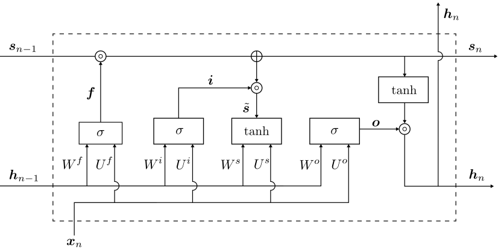
Fig. 11.45 Arquitectura de unidad LSTM. Fuente [Theodoridis, 2020].#
donde \(\circ\) denota el producto elemento a elemento entre vectores o matrices (producto de Hadamard), es decir, \((s\circ f)_{i} = s_{i}f_{i}\), y \(\sigma\) denota la función sigmoidea logística.
Observation 11.5
Nótese que el celda de estado, \(\boldsymbol{s}\), pasa información directa del instante anterior al siguiente. Esta información es controlada primero por la primera puerta, según los elementos en \(f\), que toman valores en el rango \([0, 1]\), dependiendo de la entrada actual y de las variables ocultas que se reciben de la etapa anterior. Esto es lo que decíamos antes, es decir, que la ponderación se ajusta en “contexto”. A continuación, se añade nueva información, es decir, \(\tilde{\boldsymbol{s}}\), a \(\boldsymbol{s}_{n-1}\), que también está controlada por la segunda red de puertas sigmoidales (es decir, \(\boldsymbol{i}\)). Así se garantiza que la información del pasado se transmita al futuro de forma directa, lo cual, ayuda a la red a memorizar información..
Resulta que este tipo de memoria explota mejor las dependencias de largo alcance en los datos, en comparación con la estructura RNN básica. El vector de variables ocultas \(\boldsymbol{h}\) está controlado tanto por el celda de estado como por los valores actuales de las variables de entrada y de estados anteriores. Todas las matrices y vectores implicados se aprenden en la fase de entrenamiento. Nótese que hay dos líneas asociadas a \(\boldsymbol{h}_{n}\). La de la derecha conduce a la siguiente etapa y la de la parte superior se utiliza para proporcionar la salida, \(\hat{\boldsymbol{y}}_{n}\), en el tiempo \(n\), a través de, digamos, la no linealidad softmax, como en las RNN estándar en Eq. (11.14).
Variantes y Aplicaciones
Además de la estructura LSTM ya comentada, se han propuesto diversas variantes. Un extenso estudio comparativo entre diferentes arquitecturas LSTM y RNN se puede encontrar en [Greff et al., 2016, Jozefowicz et al., 2015]. Las RNNs y las LSTMs se han utilizado con éxito en una amplia gama de aplicaciones, tales como:
el modelado del lenguaje [Sutskever et al., 2011],
traducción de máquinas [Liu et al., 2014],
reconocimiento del habla [Graves and Jaitly, 2014],
visión artificial para la generación de descriptores de imágenes [Karpathy and Fei-Fei, 2015],
análisis de datos de fMRI para comprender la dinámica temporal de las redes cerebrales asociadas [Seo et al., 2019].
pronostico de volatilidad de Bitcoin [Pratas et al., 2023]
Por ejemplo, en el procesamiento del lenguaje la entrada suele ser una secuencia de palabras, que se codifican como números (son punteros al diccionario disponible). La salida es la secuencia de palabras que hay que predecir. Durante el entrenamiento, se establece \(\boldsymbol{y}_{n} = \boldsymbol{x}_{n+1}\). Es decir, la red se entrena como un predictor no lineal.
11.19. Aplicación: Procesamiento del Lenguaje Natural#
import warnings
warnings.filterwarnings('ignore')
import sys
import tensorflow.keras
import pandas as pd
import sklearn as sk
import tensorflow as tf
Iniciamos verificando que
Tensorflowestá correctamente instalado, y que, además, puede utilizar la GPU disponible en su computadora. En este caso corresponde a una tarjeta de video dedicadaGTX 4070 Maxq 12G
print(f"Tensor Flow Version: {tf.__version__}");
print();
print(f"Python {sys.version}");
print(f"Pandas {pd.__version__}");
print(f"Scikit-Learn {sk.__version__}");
gpu = len(tf.config.list_physical_devices('GPU'))>0
print("GPU is", "available" if gpu else "NOT AVAILABLE");
La librería
gensimutilizada en la presente implementación, debe ser instalada en suversión 3.8.3usando la orden. Además, debe instalargraphvizdel siguiente sitio web (ver GraphViz)
pip install gensim==3.8.3
import pandas as pd
import numpy as np
from tqdm import tqdm
from tensorflow.keras.preprocessing.text import Tokenizer
tqdm.pandas(desc="progress-bar")
from gensim.models import Doc2Vec
from sklearn import utils
from sklearn.model_selection import train_test_split
from keras_preprocessing.sequence import pad_sequences
import gensim
from sklearn.linear_model import LogisticRegression
from gensim.models.doc2vec import TaggedDocument
import re
import seaborn as sns
import matplotlib.pyplot as plt
df = pd.read_csv('https://raw.githubusercontent.com/lihkir/Data/main/spam_text_class.csv',delimiter=',',encoding='latin-1')
df = df[['Category','Message']]
df = df[pd.notnull(df['Message'])]
df.rename(columns = {'Message':'Message'}, inplace = True)
df.head()
df.shape
df.index = range(5572)
df['Message'].apply(lambda x: len(x.split(' '))).sum()
import matplotlib
matplotlib.rc_file_defaults()
cnt_pro = df['Category'].value_counts()
sns.barplot(x=cnt_pro.index, y=cnt_pro.values)
plt.ylabel('Number of Occurrences', fontsize=12)
plt.xlabel('Category', fontsize=12)
plt.xticks(rotation=90)
plt.show();
def print_message(index):
example = df[df.index == index][['Message', 'Category']].values[0]
if len(example) > 0:
print(example[0])
print('Message:', example[1])
print_message(12)
print_message(0)
Preprocesamiento de Texto: A continuación, establecemos una función para transformar el texto a minúsculas y eliminar signos de puntuación/símbolos de las palabras.
import lxml
from bs4 import BeautifulSoup
import re
BeautifulSoup: Se usa para navegar y manipular la estructura de documentos HTML o XML.re: Permite buscar y manipular texto dentro de esos documentos o cualquier otro texto, usando patrones específicos de expresiones regulares.
def cleanText(text):
text = BeautifulSoup(text, "html.parser").text
text = re.sub(r'\|\|\|', r' ', text)
text = re.sub(r'http\S+', r'<URL>', text)
text = text.lower()
text = text.replace('x', '')
return text
BeautifulSoup(text, "html.parser").text:BeautifulSoupen este caso elimina etiquetas HTML del texto. Conviertetexten un objetoBeautifulSoup, y luego el método.textextrae solo el texto visible, eliminando cualquier HTML o XML.text = re.sub(r'\|\|\|', r' ', text): Aquíre.subreemplaza cualquier secuencia de caracteres"|||"por un espacio" ". Esto es útil para limpiar delimitadores o caracteres específicos del texto.text = re.sub(r'http\S+', r'<URL>', text): Reemplaza cualquier URL (que comience con “http” y continúe sin espacios) con el marcador de posición “” . Esto ayuda a evitar que URLs específicas queden en el texto sin ser normalizadas.text = text.replace('x', ''): En tareas de clasificación de texto o en análisis de sentimientos, algunos caracteres pueden no ser útiles para el modelo. Por ejemplo, si “x” se usa como símbolo decorativo o separador, eliminarlo mejora la calidad de las representaciones de texto sin afectar el contenido.
df['Message'] = df['Message'].apply(cleanText)
df['Message'] = df['Message'].apply(cleanText)
train, test = train_test_split(df, test_size=0.20, random_state=42)
import nltk
from nltk.corpus import stopwords
nltk.data.path.append('/home/lihkir/nltk_data')
nltk.download('punkt_tab')
El módulo
nltky, en particular,nltk.corpus.stopwordsse usan en Procesamiento de Lenguaje Natural (NLP) para trabajar con “stopwords”, es decir, palabras de relleno o comunes en un idioma que suelen eliminarse en el análisis de texto porque no aportan significado específico. Estas palabras pueden ser artículos, preposiciones, pronombres y otros términos que no añaden valor semántico relevante (por ejemplo, “el”, “la”, “un”, “de”, “y” en español; o “the”, “is”, “in”, “and” en inglés).
def tokenize_text(text):
tokens = []
for sent in nltk.sent_tokenize(text):
for word in nltk.word_tokenize(sent):
if len(word) <= 0:
continue
tokens.append(word.lower())
return tokens
La función
tokenize_texttoma un texto como entrada y lo divide en una lista de palabras o “tokens” en minúsculas. Esta función usanltk.sent_tokenizeynltk.word_tokenizepara descomponer el texto en oraciones y palabras.
test_message = "Are you unique enough? Find out from 30th August. www.areyouunique.co.uk"
print(tokenize_text(test_message))
train_tagged = train.apply(lambda r: TaggedDocument(words=tokenize_text(r['Message']), tags=[r.Category]), axis=1)
test_tagged = test.apply(lambda r: TaggedDocument(words=tokenize_text(r['Message']), tags=[r.Category]), axis=1)
La función de arriba, aplica una transformación a cada fila del
DataFrametrain, convirtiendo el contenido de cada mensaje en un objetoTaggedDocument, un formato utilizado en NLP para entrenar modelos de aprendizaje de texto comoDoc2Vecde la libreríaGensim.
max_featuresdepende de cuántas palabras únicas hay en todo el corpus, no de la longitud de cada mensaje. Puedes ver cuántas palabras únicas tienes así:
from collections import Counter
import itertools
all_words = list(itertools.chain.from_iterable(df['Message'].apply(lambda x: x.split())))
word_counts = Counter(all_words)
print(f"Total de palabras únicas: {len(word_counts)}")
Y luego decidir cuántas palabras mantener. Por ejemplo, si tienes 20.000 palabras únicas, puedes limitar a las 5.000 más frecuentes (
max_features = 5000), lo cual es típico. El resto son palabras raras, errores tipográficos, tecnicismos o formas muy específicas que aportan poco al modelo y pueden introducir ruido¨. De esta forma mejoramos la eficiencia, rendimiento, y además, evitamos overfitting.
max_features = 500000
Puede usar la siguiente función, para definir
MAX_SEQUENCE_LENGTH:
df['Message'].apply(lambda x: len(x.split())).describe()
Por ejemplo, si el resultado del .describe() es algo como:
count 10000.000000
mean 12.340000
std 8.567890
min 1.000000
25% 6.000000
50% 10.000000
75% 15.000000
max 78.000000
Entonces podrías definir
MAX_SEQUENCE_LENGTH = 20oMAX_SEQUENCE_LENGTH = 25, ya que se cubre más del 75% de tus datos (percentil 75 = 15), y evitas que muchos mensajes se recorten. Otra opción es escogerMAX_SEQUENCE_LENGTH = 50se cubre más del 99% de los mensajes sin necesidad de truncamiento.
MAX_SEQUENCE_LENGTH = 50
tokenizer = Tokenizer(num_words=max_features, split=' ', filters='!"#$%&()*+,-./:;<=>?@[$$^_`{|}~', lower=True)
tokenizer.fit_on_texts(df['Message'].values)
X = tokenizer.texts_to_sequences(df['Message'].values)
X = pad_sequences(X, maxlen=MAX_SEQUENCE_LENGTH)
print('Found %s unique tokens.' % len(X))
print('Shape of data tensor:', X.shape)
Tokenizer: Es un objeto deKerasque convierte texto en secuencias de números enteros, donde cada número representa un token (una palabra o símbolo) en el vocabulario.num_words=max_features: Establece el número máximo de palabras que se considerarán. Solo se tomarán en cuenta las palabras más frecuentes hastamax_features.filters='!"#$%&()*+,-./:;<=>?@[$$^_{|}~': Especifica los caracteres que se eliminarán del texto, como puntuación y símbolos.pad_sequences: Este método se utiliza para hacer que todas las secuencias enXtengan la misma longitud. Si una secuencia es más corta queMAX_SEQUENCE_LENGTH, se rellenará con ceros (o con un valor especificado); si es más larga, se truncará.
train_tagged.values
d2v_model = Doc2Vec(dm=1, dm_mean=1, vector_size=20, window=8, min_count=1, workers=12, alpha=0.065, min_alpha=0.065)
El modelo
Doc2Veces útil para convertir documentos en representaciones numéricas (vectores) de tamaño fijo. Esto es esencial porque las LSTM requieren representaciones numéricas para trabajar.dm=1: Especifica que se usará el método Distributed Memory (DM) (en lugar de dm=0, que indica Distributed Bag of Words). Usar DM tiene textos más largos y complejos donde el orden de las palabras es importante y es crucial capturar el contexto para tareas de NLP que requieren una comprensión profunda del documento, como análisis de sentimientos o clasificación temática.dm_mean=1: Utiliza la media de los vectores de contextos de palabras para representar los documentos. Esto suele mejorar la precisión en comparación con otros métodos.vector_size=20: Define el tamaño del vector de salida, lo que significa que cada documento se representará como un vector de 20 dimensiones. Para textos simples o tareas básicas, un tamaño pequeño como 20 puede ser suficiente. Para análisis de texto más detallados, el tamaño del vector puede incrementarse para capturar mejor las relaciones entre palabras y documentos, generalmente entre 100 y 300 dimensiones.window=8: Define el tamaño de la ventana de contexto, es decir, el número máximo de palabras a considerar alrededor de la palabra objetivo en cada documento. En este caso, se consideran hasta 8 palabras a cada lado.min_count=1: Establece el mínimo de veces que una palabra debe aparecer en el corpus para ser incluida en el modelo. Un valor de 1 significa que todas las palabras en el corpus se incluirán.workers=12: Utiliza un solo núcleo de procesamiento para el entrenamiento. Si se incrementa este valor, se pueden usar varios núcleos para acelerar el proceso.alpha=0.065: Establece la tasa de aprendizaje inicial.Doc2Vecreduce gradualmente esta tasa durante el entrenamiento.min_alpha=0.065: Fija el límite inferior de la tasa de aprendizaje para que no disminuya más allá de este valor durante el entrenamiento.
d2v_model.build_vocab([x for x in tqdm(train_tagged.values)])
d2v_model.build_vocab([x for x in tqdm(train_tagged.values)]): Crea el vocabulario para el modeloDoc2Vecen función de los documentos de entrada entrain_tagged
%%time
for epoch in range(30):
d2v_model.train(utils.shuffle([x for x in tqdm(train_tagged.values)]), total_examples=len(train_tagged.values), epochs=1)
d2v_model.alpha -= 0.002
d2v_model.min_alpha = d2v_model.alpha
print(d2v_model)
dm/m: Indica el tipo de modelo que se está utilizando. dm significa que se está utilizando el enfoque de Distributed Memory (DM). El “m” se refiere a que se está usando la estrategia de “mean” (media) para la representación de los contextos de palabras.d20: Este parámetro indica el tamaño del vector de salida, que es de 20 dimensiones. Es decir, cada documento se representará como un vector de 20 dimensiones.n5: Este número se refiere al número de palabras mínimas requeridas para que una palabra sea incluida en el vocabulario. En este caso, las palabras que aparecen al menos 5 veces serán consideradas.w8: Este valor representa el tamaño de la ventana de contexto, que es de 8 palabras. Esto significa que al entrenar el modelo, se considera un contexto de 8 palabras antes y después de la palabra objetivo.s0.001: Este número indica la tasa de aprendizaje inicial (alpha), que es de 0.001 en este caso. Esta tasa determina cuánto se ajustan los pesos del modelo durante el entrenamiento.
num_words = len(d2v_model.wv.key_to_index)
print(num_words)
words = d2v_model.wv.index_to_key
print(words[-10:])
embedding_matrix = np.zeros((len(d2v_model.wv.key_to_index)+ 1, 20))
embedding_matrix = np.zeros((len(d2v_model.wv.key_to_index)+ 1, 20)): Inicializa una matriz de embeddings (representaciones vectoriales) de tamaño (número de palabras en el vocabulario + 1, 20) llena de ceros. Esta matriz se puede utilizar posteriormente para almacenar las representaciones vectoriales de cada palabra del vocabulario aprendidas por el modeloDoc2Vec
for i in range(len(d2v_model.dv)):
vec = d2v_model.dv[i]
if vec is not None and len(vec) <= 1000:
print(i)
print(d2v_model.dv)
embedding_matrix[i] = vec
print(vec)
Este bucle itera a través de los vectores de documento en el modelo Doc2Vec, verifica que cada vector sea válido y su longitud adecuada, imprime información relevante, y almacena los vectores en una matriz de embeddings.
d2v_model.wv.most_similar(positive=['urgent'], topn=10)
d2v_model.wv.most_similar(positive=['urgent'], topn=10): Se utiliza para encontrar las palabras más similares al término “urgent” en el modeloDoc2Vec
d2v_model.wv.most_similar(positive=['cherish'], topn=10)
Pasamos a implementar el modelo
LSTM
from keras.models import Sequential
from keras.layers import LSTM, Dense, Embedding
from tensorflow.keras.optimizers.legacy import Adam
Crear un modelo secuencial, es decir, un modelo LSTM donde las capas se apilan una detrás de otra, en orden
model = Sequential()
Vectores de palabras
Embedding
model.add(Embedding(len(d2v_model.wv.key_to_index) + 1, 20, input_length=X.shape[1], weights=[embedding_matrix], trainable=True))
weights=[embedding_matrix]: Al pasar esto como un argumento deweights, se le indica aKerasque use estos vectores iniciales para la capa de incrustación.
LSTM(50)agrega una capa LSTM con 50 unidades (neuronas).return_sequences=False: Esto indica que la capa devuelve solo la última salida de la secuencia, no toda la secuencia de salidas.
model.add(LSTM(50,return_sequences=False))
model.add(Dense(2,activation="softmax"))
Usamos
summary()para mostrar un resumen de la arquitectura del modelo.
model.summary()
from tensorflow.keras.models import Sequential
from tensorflow.keras.layers import Embedding, LSTM, Dense
from tensorflow.keras.optimizers import Adam
Queda como ejercicio para el estudiante, cambiar la métrica de validación a AUC, tal como se hizo en el ejercicio de reconocimiento facial de emociones usando CNNs
model.compile(optimizer=Adam(), loss="binary_crossentropy", metrics=['accuracy'])
Y = pd.get_dummies(df['Category']).values
X_train, X_test, Y_train, Y_test = train_test_split(X,Y, test_size = 0.15, random_state = 42)
print(X_train.shape,Y_train.shape)
print(X_test.shape,Y_test.shape)
batch_size = 32
import os
from joblib import dump, load
history_lstm = None
if os.path.exists('history_lstm.joblib'):
history_lstm = load('history_lstm.joblib')
print("El archivo 'history_lstm.joblib' ya existe. Se ha cargado el historial del entrenamiento.")
else:
history_lstm = model.fit(X_train, Y_train, epochs=50, batch_size=batch_size, verbose=2)
dump(history_lstm.history, 'history_lstm.joblib')
print("El entrenamiento se ha completado y el historial ha sido guardado en 'history_lstm.joblib'.")
plt.plot(history_lstm.history['accuracy'])
plt.title('model accuracy')
plt.ylabel('acc')
plt.xlabel('epochs')
plt.legend(['train', 'test'], loc='upper left');
plt.plot(history_lstm.history['loss']);
plt.title('model loss');
plt.ylabel('loss');
plt.xlabel('epochs');
plt.legend(['train', 'test'], loc='upper left');
_, train_acc = model.evaluate(X_train, Y_train, verbose=2)
_, test_acc = model.evaluate(X_test, Y_test, verbose=2)
print('Train: %.3f, Test: %.4f' % (train_acc, test_acc))
Las siguientes líneas están utilizando el modelo entrenado para predecir la probabilidad de que cada entrada en
X_testpertenezca a cada clase. Luego, se determina la clase más probable para cada entrada y se imprime tanto las probabilidades como las clases predichas.np.argmax(yhat_probs, axis=1)toma la clase con mayor probabilidad en cada fila.
yhat_probs = model.predict(X_test, verbose=0)
print(yhat_probs)
yhat_classes = np.argmax(yhat_probs, axis=1)
print(yhat_classes)
Cada número en este arreglo representa la clase predicha para cada muestra en el conjunto de prueba. Por ejemplo, si el valor es 0, significa que la muestra pertenece a la clase 0, y si es 1, significa que la muestra pertenece a la clase 1.
yhat_probs = yhat_probs[:, 0]
import numpy as np
rounded_labels=np.argmax(Y_test, axis=1)
rounded_labels
from sklearn.metrics import confusion_matrix
cm = confusion_matrix(rounded_labels, yhat_classes)
cm
from sklearn.metrics import confusion_matrix
import seaborn as sns
lstm_val = confusion_matrix(rounded_labels, yhat_classes)
f, ax = plt.subplots(figsize=(5,5))
sns.heatmap(lstm_val, annot=True, linewidth=0.7, linecolor='cyan', fmt='g', ax=ax, cmap="BuPu")
plt.title('LSTM Classification Confusion Matrix')
plt.xlabel('Y predict')
plt.ylabel('Y test')
plt.show()
validation_size = 200
X_validate = X_test[-validation_size:]
Y_validate = Y_test[-validation_size:]
X_test = X_test[:-validation_size]
Y_test = Y_test[:-validation_size]
score,acc = model.evaluate(X_test, Y_test, verbose = 1, batch_size = batch_size)
print("score: %.2f" % (score))
print("acc: %.2f" % (acc))
model.save('Mymodel.keras')
Pruebas con conjuntos de datos nuevos y diferentes de los datos para construir el modelo.
message = ['Congratulations! you have won a $1,000 Walmart gift card. Go to http://bit.ly/123456 to claim now.']
seq = tokenizer.texts_to_sequences(message)
padded = pad_sequences(seq, maxlen=X.shape[1], dtype='int32', value=0)
pred = model.predict(padded)
labels = ['ham','spam']
print(pred, labels[np.argmax(pred)])
message = ['thanks for accepting my request to connect']
seq = tokenizer.texts_to_sequences(message)
padded = pad_sequences(seq, maxlen=X.shape[1], dtype='int32', value=0)
pred = model.predict(padded)
labels = ['ham','spam']
print(pred, labels[np.argmax(pred)])
11.20. Aplicación: LSTM para la predicción de series de tiempo#
Continuaremos usando el conjunto de datos sobre contaminación del aire (
pm2.5) usando LSTM. La lectura y el preprocesamiento de los datos se mantienen igual que en los ejemplos deMLPs. El conjunto de datos original se divide en dos conjuntos: entrenamiento y validación, que se usan para el entrenamiento y validación del modelo respectivamente.
La función
makeXyse utiliza para generar arreglos de regresores y objetivos:X_train, X_val, y_trainyy_val.X_train y X_val, generados por la funciónmakeXy, son arreglos 2D de forma (número de muestras, número de pasos de tiempo). Sin embargo, la entrada a las capas RNN debe ser de forma (número de muestras, número de pasos de tiempo, número de características por paso de tiempo).En este caso, estamos tratando solo con
pm2.5, por lo tanto, el número de características por paso de tiempo es uno. El número de pasos de tiempo es siete y el número de muestras es el mismo que el número de muestras enX_trainyX_val, que se transforman a arreglos 3D
import pandas as pd
from sklearn.preprocessing import MinMaxScaler
import datetime
import matplotlib.pyplot as plt
import seaborn as sns
import numpy as np
import warnings
warnings.filterwarnings('ignore')
plot_fontsize = 18;
df = pd.read_csv('https://raw.githubusercontent.com/lihkir/Data/refs/heads/main/PRSA_data_2010.1.1-2014.12.31.csv', usecols=lambda column: column not in ['DEWP', 'TEMP', 'cbwd', 'Iws', 'Is', 'Ir'])
print('Shape of the dataframe:', df.shape)
df.head()
df.dropna(subset=['pm2.5'], axis=0, inplace=True)
df.reset_index(drop=True, inplace=True)
df['datetime'] = df[['year', 'month', 'day', 'hour']].apply(lambda row: datetime.datetime(year=row['year'], month=row['month'], day=row['day'],
hour=row['hour']), axis=1)
df.sort_values('datetime', ascending=True, inplace=True)
plt.figure(figsize=(15, 8))
plt.subplot(1, 2, 1)
g1 = sns.boxplot(df['pm2.5'], orient="h", palette="Set2")
g1.set_title('Box plot of pm2.5', fontsize=plot_fontsize);
g1.set_xlabel(xlabel='pm2.5', fontsize=plot_fontsize)
g1.set(yticklabels=[])
g1.tick_params(left=False);
plt.subplot(1, 2, 2)
g2 = sns.lineplot(df['pm2.5'])
g2.set_title('Time series of pm2.5', fontsize=plot_fontsize)
g2.set_xlabel('Index', fontsize=plot_fontsize)
g2.set_ylabel('pm2.5 readings');
plt.show()
plt.figure(figsize=(15, 8))
plt.subplot(1, 2, 1)
g1 = sns.lineplot(df['pm2.5'].loc[df['datetime']<=datetime.datetime(year=2010,month=6,day=30)], color='g')
g1.set_title('pm2.5 during 2010', fontsize=plot_fontsize)
g1.set_xlabel('Index', fontsize=plot_fontsize)
g1.set_ylabel('pm2.5 readings', fontsize=plot_fontsize);
plt.subplot(1, 2, 2)
g = sns.lineplot(df['pm2.5'].loc[df['datetime']<=datetime.datetime(year=2010,month=1,day=31)], color='g')
g.set_title('Zoom in on one month: pm2.5 during Jan 2010', fontsize=plot_fontsize)
g.set_xlabel('Index', fontsize=plot_fontsize)
g.set_ylabel('pm2.5 readings', fontsize=plot_fontsize);
plt.show()
split_date = datetime.datetime(year=2014, month=1, day=1, hour=0)
df_train = df.loc[df['datetime']<split_date]
df_val = df.loc[df['datetime']>=split_date]
print('Shape of train:', df_train.shape)
print('Shape of test:', df_val.shape)
df_train.head()
df_val.head()
df_val.reset_index(drop=True, inplace=True)
scaler_pm25 = MinMaxScaler(feature_range=(0, 1))
df_train['scaled_pm2.5'] = scaler_pm25.fit_transform(df_train[['pm2.5']])
df_val['scaled_pm2.5'] = scaler_pm25.transform(df_val[['pm2.5']])
print('Shape of train:', df_train.shape)
print('Shape of val:', df_val.shape)
plt.figure(figsize=(15, 8))
plt.subplot(1, 2, 1)
g1 = sns.lineplot(df_train['scaled_pm2.5'], color='b')
g1.set_title('Time series of scaled pm2.5 in train set', fontsize=plot_fontsize)
g1.set_xlabel('Index', fontsize=plot_fontsize)
g1.set_ylabel('Scaled pm2.5 readings', fontsize=plot_fontsize);
plt.subplot(1, 2, 2)
g2 = sns.lineplot(df_val['scaled_pm2.5'], color='r')
g2.set_title('Time series of scaled pm2.5 in validation set', fontsize=plot_fontsize)
g2.set_xlabel('Index', fontsize=plot_fontsize)
g2.set_ylabel('Scaled pm2.5 readings', fontsize=plot_fontsize);
plt.show()
def makeXy(ts, nb_timesteps):
"""
Input:
ts: original time series
nb_timesteps: number of time steps in the regressors
Output:
X: 2-D array of regressors
y: 1-D array of target
"""
X = []
y = []
for i in range(nb_timesteps, ts.shape[0]):
if i-nb_timesteps <= 4:
print(i-nb_timesteps, i-1, i)
X.append(list(ts.loc[i-nb_timesteps:i-1])) #Regressors
y.append(ts.loc[i]) #Target
X, y = np.array(X), np.array(y)
return X, y
X_train, y_train = makeXy(df_train['scaled_pm2.5'], 7)
print('Shape of train arrays:', X_train.shape, y_train.shape)
X_val, y_val = makeXy(df_val['scaled_pm2.5'], 7)
print('Shape of validation arrays:', X_val.shape, y_val.shape)
X_train, X_val = X_train.reshape((X_train.shape[0], X_train.shape[1], 1)), X_val.reshape((X_val.shape[0], X_val.shape[1], 1))
print('Shape of 3D arrays:', X_train.shape, X_val.shape)
X_trainyX_valse han convertido en matrices 3D y sus nuevas formas se ven en la salida de la instrucción de impresión anterior
from keras.layers import Dense, Input, Dropout
from keras.layers import LSTM
from keras.optimizers import SGD
from keras.models import Model
from keras.models import load_model
from keras.callbacks import ModelCheckpoint
La red neuronal para desarrollar el modelo de predicción de series temporales tiene una capa de entrada, que alimenta a la capa LSTM. La capa LSTM tiene siete pasos temporales, que es el mismo número de observaciones históricas tomadas para hacer la predicción de la presión atmosférica para el día siguiente. Solo el último paso temporal de la LSTM devuelve una salida.
Hay sesenta y cuatro neuronas ocultas en cada paso temporal de la capa LSTM. Por lo tanto, la salida de la LSTM tiene sesenta y cuatro características:
input_layer = Input(shape=(7,1), dtype='float32')
Aquí
shape=(7,1)forma de la entrada a la LSTM.7: Número de pasos de tiempo (timesteps).1: Número de características (features) por cada paso de tiempo.return_sequences=Truese usa cuando se necesita pasar la secuencia completa de salidas a la siguiente capa de la red, que también puede ser una capa recurrente como otra LSTM
lstm_layer1 = LSTM(64, input_shape=(7,1), return_sequences=True)(input_layer)
lstm_layer2 = LSTM(32, input_shape=(7,64), return_sequences=False)(lstm_layer1)
A continuación, la salida de LSTM pasa a una capa de exclusión que elimina aleatoriamente el 20% de la entrada antes de pasar a la capa de salida, que tiene una única neurona oculta con una función de activación lineal
dropout_layer = Dropout(0.2)(lstm_layer2)
output_layer = Dense(1, activation='linear')(dropout_layer)
Finalmente, todas las capas se envuelven en un
keras.models.Modely se entrenan durante veinte epochs para minimizar el MSE utilizando el optimizador Adam
ts_model = Model(inputs=input_layer, outputs=output_layer)
ts_model.compile(loss='mean_absolute_error', optimizer='adam') #SGD(lr=0.001, decay=1e-5))
ts_model.summary()
import os
from joblib import dump, load
from keras.callbacks import EarlyStopping, ModelCheckpoint
save_weights_at = os.path.join('keras_models', 'PRSA_data_PM2.5_LSTM_weights.{epoch:02d}-{val_loss:.4f}.keras')
checkpointer = [
EarlyStopping(
monitor='val_loss',
verbose=1,
restore_best_weights=True,
mode='min',
patience=10
),
ModelCheckpoint(
filepath=save_weights_at,
monitor='val_loss',
verbose=1,
save_best_only=True,
save_weights_only=False,
mode='min',
save_freq='epoch'
)
]
history_pm25_LSTM = None
if os.path.exists('history_pm25_LSTM.joblib'):
history_pm25_LSTM = load('history_pm25_LSTM.joblib')
print("El archivo 'history_pm25_LSTM.joblib' ya existe. Se ha cargado el historial del entrenamiento.")
else:
history_pm25_LSTM = ts_model.fit(
x=X_train,
y=y_train,
batch_size=16,
epochs=120,
verbose=2,
callbacks=checkpointer,
validation_data=(X_val, y_val),
shuffle=True
)
dump(history_pm25_LSTM.history, 'history_pm25_LSTM.joblib')
print("El entrenamiento se ha completado y el historial ha sido guardado en 'history_pm25_LSTM.joblib'.")
import re
model_dir = 'keras_models'
files = os.listdir(model_dir)
pattern = r"PRSA_data_PM2.5_LSTM_weights\.(\d+)-([\d\.]+)\.keras"
best_val_loss = float('inf')
best_model_file = None
best_model = None
for file in files:
match = re.match(pattern, file)
if match:
epoch = int(match.group(1))
val_loss = float(match.group(2))
if val_loss < best_val_loss:
best_val_loss = val_loss
best_model_file = file
if best_model_file:
best_model_path = os.path.join(model_dir, best_model_file)
print(f"Cargando el mejor modelo: {best_model_file} con val_loss: {best_val_loss}")
best_model = load_model(best_model_path)
else:
print("No se encontraron archivos de modelos que coincidan con el patrón.")
preds = best_model.predict(X_val)
pred_pm25 = scaler_pm25.inverse_transform(preds)
pred_pm25 = np.squeeze(pred_pm25)
from sklearn.metrics import mean_absolute_error
mae = mean_absolute_error(df_val['pm2.5'].loc[7:], pred_pm25)
print('MAE for the validation set:', round(mae, 4))
Hemos utilizado
keras.callbacks.ModelCheckpointcomo callback para rastrear elMSEdel modelo en el conjunto de validación y guardar los pesos de la epoch que da el mínimo MSE. ElR-cuadradodel mejor modelo para el conjunto de validación es de 0.9959. Los primeros cincuenta valores reales y predichos se muestran en la siguiente figura
plt.figure(figsize=(5.5, 5.5))
plt.plot(range(50), df_val['pm2.5'].loc[7:56], linestyle='-', marker='*', color='r')
plt.plot(range(50), pred_pm25[:50], linestyle='-', marker='.', color='b')
plt.legend(['Actual','Predicted'], loc=2)
plt.title('Actual vs Predicted pm2.5')
plt.ylabel('pm2.5')
plt.xlabel('Index');
11.21. Autoencoders#

Los autoencoders han sido propuestos como métodos para la reducción de dimensionalidad. Un autoencoder consta de dos partes, el codificador y el decodificador. La salida del
codificador es la representación reducida del patrón de entrada, y se define en términos de una función vectorial\[ \boldsymbol{g}_{\phi}:~\boldsymbol{x}\in\mathbb{R}^{l}\longmapsto\boldsymbol{z}\in\mathbb{R}^{m}, \]donde
\[ z_{i}:=g_{\phi, i}(\boldsymbol{x})=\phi_{e}(\boldsymbol{\theta}_{i}^{T}\boldsymbol{x}+b_{i}),\quad i=1,2,\dots,m, \]con \(\phi_{e}\) función de activación; esta última suele tomarse como la función sigmoidea logística \(\phi_{e}(\cdot)=\sigma(\cdot)\). En otras palabras, el codificador es una red neuronal feed-forward de una sola capa oculta
El
decodificadores otra función \(\boldsymbol{f}_{\theta}\).\[ \boldsymbol{f}_{\theta}:~\boldsymbol{z}\in\mathbb{R}^{m}\longmapsto\boldsymbol{x}'\in\mathbb{R}^{l}, \]donde
\[ \hat{x}_{j}=f_{\theta, j}(\boldsymbol{z})=\phi_{d}(\boldsymbol{\theta}'^{T}\boldsymbol{z}+b_{j}'),\quad j=1,\dots,l. \]La función de activación \(\phi_{d}\) suele ser la identidad (reconstrucción lineal) o la sigmoidea logística.
La tarea de entrenamiento consiste en estimar los parámetros
Es habitual suponer que \(\Theta'=\Theta^{T}\). Los parámetros se estiman para que el error de reconstrucción \(\boldsymbol{e}=\boldsymbol{x}-\boldsymbol{x}'\), sobre las muestras de entrada disponibles sea mínimo. Normalmente, se utiliza el coste por mínimos cuadrados pero también son posibles otras opciones.
Las versiones regularizadas, que implican una norma de los parámetros, también es una posibilidad. Si se elige que la activación \(\phi_{e}\) sea la identidad (representación lineal) y \(m < l\) (para evitar la trivialidad), el autoencoder es equivalente a la técnica PCA.
11.22. Aplicación: Autoencoders para MNIST data#
import numpy as np
import matplotlib.pyplot as plt
from tensorflow.keras.datasets import mnist
from tensorflow.keras.models import Model
from tensorflow.keras.layers import Input, Dense
import warnings
warnings.filterwarnings('ignore')

A continuación
Se cargan los datos del conjunto MNIST, que contiene imágenes de dígitos escritos a mano.
Cada muestra es una imagen en escala de grises de 28×28 píxeles.
Se ignoran las etiquetas de clase (
_) porque el objetivo es reconstruir las imágenes (no clasificarlas), tal como se requiere en tareas de autoencoders.
(x_train, _), (x_test, _) = mnist.load_data()
print("Forma original de x_train:", x_train.shape)
print("Forma original de x_test:", x_test.shape)
Se normalizan los valores de los píxeles de las imágenes, originalmente en el rango [0, 255], para que estén en el intervalo [0, 1]. La normalización facilita el entrenamiento del modelo al mejorar la estabilidad numérica y acelerar la convergencia del optimizador. Se convierte el tipo de dato a
float32para asegurar compatibilidad con las operaciones enTensorFlow/Keras.
x_train = x_train.astype('float32') / 255.
x_test = x_test.astype('float32') / 255.
Cada imagen del conjunto de datos MNIST tiene dimensiones 28×28, es decir, 784 píxeles. Estas imágenes se transforman en vectores unidimensionales de 784 elementos para que puedan ser procesadas por capas densas (
Dense) del autoencoder. Esta transformación no altera la información de la imagen, solo su forma (reshape) para adaptarse a la entrada del modelo.
x_train = x_train.reshape((len(x_train), 784))
x_test = x_test.reshape((len(x_test), 784))
print("Forma después del reshape de x_train:", x_train.shape)
print("Forma después del reshape de x_test:", x_test.shape)
input_img = Input(shape=(784,)):
Se define la capa de entrada del modelo, correspondiente a una imagen aplanada de 784 píxeles.encoded = Dense(32, activation='relu')(input_img):
Esta capa es el codificador, que transforma la imagen de entrada en una representación latente de 32 dimensiones utilizando una función de activación ReLU.decoded = Dense(784, activation='sigmoid')(encoded):
Esta capa actúa como decodificador, intentando reconstruir la imagen original a partir de la representación latente.sigmoidse adapta bien cuando se usa la función de pérdidabinary_crossentropy, ya que esa pérdida espera que la salida esté entre 0 y 1. Asegura que los valores de salida no sean negativos ni mayores a 1, lo que tendría poco sentido en términos de imágenes normalizadas.autoencoder = Model(input_img, decoded):
Se define el modelo completo del autoencoder, que aprende a mapear una imagen a su reconstrucción.
input_img = Input(shape=(784,))
encoded = Dense(32, activation='relu')(input_img)
decoded = Dense(784, activation='sigmoid')(encoded)
autoencoder = Model(input_img, decoded)
autoencoder.compile(...):
Se compila el modelo autoencoder, especificando el optimizador y la función de pérdida.optimizer='adam':
Se utiliza el optimizador Adam, ampliamente usado en redes neuronales por su eficiencia y capacidad de adaptación del aprendizaje.loss='binary_crossentropy':
Se emplea la entropía cruzada binaria como función de pérdida, apropiada en tareas de reconstrucción donde los valores de salida están en el rango [0, 1].
autoencoder.compile(optimizer='adam', loss='binary_crossentropy')
autoencoder.fit(...):
Entrena el modelo autoencoder utilizando como entrada y objetivo los mismos datos, dado que la tarea es de reconstrucción.x_train, x_train:
Se entrena el modelo para que aprenda a reproducir su entrada como salida.epochs=50:
El entrenamiento se realiza durante 50 épocas completas sobre el conjunto de datos.batch_size=256:
El tamaño del mini-batch para cada actualización de parámetros es de 256 muestras.shuffle=True:
Se mezclan aleatoriamente las muestras en cada época para mejorar la generalización.validation_data=(x_test, x_test):
Se utiliza el conjunto de prueba para evaluar la pérdida de validación y así monitorear el sobreajuste.
autoencoder.fit(x_train, x_train,
epochs=50,
batch_size=256,
shuffle=True,
validation_data=(x_test, x_test))
Define el modelo encoder que transforma una imagen de entrada (784 dimensiones) en su representación latente de 32 dimensiones. Este modelo extrae la parte de codificación del autoencoder original.
Crea un nuevo modelo decoder tomando como entrada una representación latente de 32 dimensiones y aplicando la última capa del autoencoder (la capa de decodificación). Esto permite reconstruir imágenes directamente desde sus representaciones codificadas, de forma independiente.
autoencoder.layers[-1]accede a la última capa del modelo autoencoder (elDense(784, activation='sigmoid'))
encoder = Model(input_img, encoded)
encoded_input = Input(shape=(32,))
decoder_layer = autoencoder.layers[-1]
decoder = Model(encoded_input, decoder_layer(encoded_input))
Codifica las imágenes de prueba transformándolas desde el espacio original (784 dimensiones) al espacio latente (64 dimensiones) mediante el modelo
encoder.Reconstruye las imágenes a partir de sus representaciones latentes usando el modelo
decoder.Este paso permite evaluar qué tan bien el autoencoder logra aproximar las imágenes originales.
encoded_imgs = encoder.predict(x_test)
decoded_imgs = decoder.predict(encoded_imgs)
Selecciona 10 imágenes del conjunto de prueba y configura el tamaño de la figura para mostrar una comparación clara entre las imágenes originales y sus reconstrucciones.
Primera fila: imágenes originales. Se toma la \(i\)-ésima imagen original, se remodela a su forma 2D (28×28) y se muestra en escala de grises sin ejes para mayor claridad.
Segunda fila: imágenes reconstruidas. Se visualiza la imagen generada por el autoencoder a partir de la codificación latente.
n = 10
plt.figure(figsize=(20, 4))
for i in range(n):
ax = plt.subplot(2, n, i + 1)
plt.imshow(x_test[i].reshape(28, 28), cmap="gray")
plt.axis('off')
ax = plt.subplot(2, n, i + 1 + n)
plt.imshow(decoded_imgs[i].reshape(28, 28), cmap="gray")
plt.axis('off')
plt.show()
Reconstrucción de imágenes
Se utiliza el modelo entrenado para generar reconstrucciones del conjunto de prueba, es decir, aproximaciones de las imágenes originales.Cálculo del Error Cuadrático Medio (MSE)
Se calcula el error cuadrático medio entre las imágenes originales y sus reconstrucciones. Este valor indica qué tan lejos están, en promedio, las imágenes reconstruidas de las originales.Estimación de la varianza total
Se computa la varianza de los datos originales del conjunto de prueba. Representa la cantidad total de información (variabilidad) presente en los datos sin comprimir.Cálculo de la variabilidad explicada
Se emplea la fórmula:\[ \text{Variabilidad explicada} = 1 - \frac{\text{MSE}}{\text{Varianza total}} \]Esta expresión indica qué fracción de la variación total en los datos originales ha sido retenida por el modelo de autoencoder. Es una métrica análoga al coeficiente de determinación (\(R^2\)) utilizado en modelos de regresión.
Interpretación del resultado
Un valor cercano a 1 sugiere que el autoencoder captura gran parte de la estructura de los datos. Un valor bajo indica que el modelo no ha logrado representar eficazmente la información original.
import numpy as np
decoded_imgs = autoencoder.predict(x_test)
mse = np.mean(np.square(x_test - decoded_imgs))
var_total = np.var(x_test)
var_explicada = 1 - (mse / var_total)
print("Variabilidad explicada por el autoencoder:", var_explicada)
En un autoencoder, el número de neuronas en la capa latente (bottleneck layer) representa la dimensión comprimida o el número de “componentes” aprendidos. Aunque no son componentes lineales como en PCA, son equivalentes en el sentido de que capturan una representación reducida de los datos. Por ejemplo, en el modelo:
encoded = Dense(32, activation='relu')(input_img)
Aquí el autoencoder utiliza 32 dimensiones latentes, lo que se puede comparar directamente con las 32 primeras componentes principales en PCA.
¿Cómo hacer una comparación justa con PCA?
Entrena un PCA con el mismo número de componentes:
from sklearn.decomposition import PCA pca = PCA(n_components=32) X_pca = pca.fit_transform(x_test) X_reconstructed = pca.inverse_transform(X_pca)
Calcula el MSE y la variabilidad explicada del PCA, de la misma forma que hiciste con el autoencoder:
mse_pca = np.mean(np.square(x_test - X_reconstructed)) var_total = np.var(x_test) var_explicada_pca = 1 - (mse_pca / var_total)
Compara valores:
Variabilidad explicada por el Autoencoder
Variabilidad explicada por el PCA
Esto te dirá cuál técnica preserva mejor la estructura de los datos bajo la misma cantidad de compresión (32 dimensiones, por ejemplo).
from sklearn.decomposition import PCA
pca = PCA(n_components=32)
X_pca = pca.fit_transform(x_test)
X_reconstructed = pca.inverse_transform(X_pca)
mse_pca = np.mean(np.square(x_test - X_reconstructed))
var_total = np.var(x_test)
var_explicada_pca = 1 - (mse_pca / var_total)
print("Variabilidad explicada por el PCA:", var_explicada_pca)
11.23. Attention#
Introducción
Base Neurocientífica y Psicológica
En lectura humana, no procesamos cada palabra linealmente; nuestro cerebro focaliza atención en elementos relevantes según contexto y significado.
En NLP, esto se traduce en pesos de atención (\(\alpha\)) aplicados a los estados del encoder para generar un vector de contexto (\(c_t\)) que condicione la predicción del decoder.
Problema de los Encoder-Decoder clásicos. El modelo secuencial clásico codifica toda la información en un vector fijo \(v\):
\[ P(y_1, ..., y_T \mid x_1, ..., x_S) = \prod_{t=1}^T P(y_t \mid v, y_1, ..., y_{t-1}) \]\(v\) es un vector de contexto fijo → cuello de botella informativo. Es un vector de dimensión fija que intenta resumir toda la información relevante de la secuencia de entrada.
\(P(y_1, \ldots, y_T \mid x_1, \ldots, x_S)\): Representa la probabilidad total de generar toda la secuencia de salida (por ejemplo, en inglés) condicionada a la secuencia completa de entrada (por ejemplo, en español).
\(\prod_{t=1}^T\): Indica que el modelo genera los tokens uno por uno, siguiendo un proceso autoregresivo. Cada paso (\(t\)) depende de los tokens previos (\(y_1, \ldots, y_{t-1}\)).
\(P(y_t \mid v, y_1, \ldots, y_{t-1})\): Es la probabilidad de generar el token actual (\(y_t\)), dado:
El vector de contexto fijo (\(v\)), que proviene del encoder.
La historia previa de tokens ya generados por el decoder.
Contexto: Modelo Encoder-Decoder: ¿Qué hace cada parte?
1. Encoder:
Recibe la secuencia de entrada, por ejemplo una frase en español:
\[ X = [x_1, x_2, x_3, x_4] = [\text{"El", "gato", "negro", "duerme"}] \]La procesa paso a paso y genera hidden states (representaciones vectoriales de cada palabra):
\[ h_1, h_2, h_3, h_4 \]Cada \(h_i\) captura información del token \(x_i\) y del contexto de la secuencia (dependiendo de si usamos RNN, LSTM, GRU, etc.).
2. Decoder:
Genera la secuencia de salida (por ejemplo en inglés):
\[ Y = [y_1, y_2, y_3] = [\text{"The", "black", "cat"}] \]Lo hace token por token, usando:
El hidden state anterior del decoder.
Un vector de contexto \(v\) que representa la información de toda la entrada.
El token “duerme” se procesó dentro del encoder → generó un hidden state \(h_4\). Sin embargo, en el modelo Encoder-Decoder tradicional, el decoder no tiene acceso directo a \(h_4\) (ni a \(h_1, h_2, h_3\)). Solo recibe el vector \(v\), que resume todo en una representación fija.
Por tanto, el “significado” de duerme queda mezclado con el resto de la información en ese vector. Si el vector \(v\) no logra codificar bien la acción, el modelo olvida traducir “duerme” → “sleeps”.
Limitaciones
Si la frase de entrada es larga, \(v\) no puede contener toda la información.
Esto se llama cuello de botella, porque el decoder “ve” toda la entrada a través de un solo vector.
Como resultado, la traducción o la predicción pierde información, especialmente en frases largas.
Analogía sencilla
Imagina que tienes que resumir un libro de 200 páginas en una sola oración y luego alguien tiene que escribir un resumen basado solo en esa oración.
Obviamente, perderías mucho detalle importante.
En el modelo clásico Encoder-Decoder sin atención, eso es exactamente lo que pasa: toda la secuencia de entrada se comprime en un solo vector \(v\).
Bahdanau Attention (Additive). La atención de Bahdanau et al. (2015) solucionó el problema de cuello de botella permitiendo que, en cada paso del decoder, el modelo “mire” directamente a los estados del encoder relevantes. Así nace el concepto de pesos de atención y contexto dinámico (\(c_t\)): el decoder ya no memoriza todo, sino que selecciona lo importante en cada momento.Score de atención (alineamiento)
\[ e_{tj} = v_a^\top \tanh(W_a s_{t-1} + U_a h_j) \]Donde:
\(s_{t-1}\): estado anterior del decoder “hidden state” (usualmente una LSTM o GRU)
\(h_j\): \(j\)-ésimo estado del encoder (generalmente una Bi-LSTM o Bi-GRU).
\(W_a, U_a\): matrices de pesos entrenables
\(v_a\): vector de pesos entrenable
Pesos de atención normalizados
\[ \alpha_{tj} = \frac{\exp(e_{tj})}{\sum_{k=1}^S \exp(e_{tk})} \]Vector de contexto dinámico
\[ c_t = \sum_{j=1}^S \alpha_{tj} h_j \]En otras palabras:
Cada \(h_j\) es una codificación contextual de la palabra \(x_j\). No es la palabra en sí, sino su representación en el espacio latente del encoder.
Cada \(s_{t-1}\) es una codificación del estado de generación del decoder en el tiempo \(t-1\). Resume lo que el modelo “sabe” del texto ya producido y lo que espera producir ahora.
El vector de contexto \(c_t\)
Resume la información relevante de la entrada en el paso actual del decoder.
Se recalcula en cada paso de generación.
Permite que el modelo “mire” directamente partes específicas de la secuencia de entrada, en lugar de depender de una sola representación comprimida.
Por diseño clásico (Bahdanau et al., 2015, Neural Machine Translation by Jointly Learning to Align and Translate):
Encoder: Una RNN bidireccional (generalmente una Bi-LSTM o Bi-GRU). Produce una secuencia de hidden states:
\[ h_1, h_2, \dots, h_S \in \mathbb{R}^{d_h} \]Cada \(h_j\) es la concatenación de los estados forward y backward.
Decoder: Una RNN unidireccional (usualmente una LSTM o GRU). En cada paso \(t\), produce un nuevo estado:
\[ s_t = \text{RNNCell}(s_{t-1}, [y_{t-1}, c_t]) \]donde \(y_{t-1}\) es el embedding del token previo, y \(c_t\) es el vector de contexto dinámico que viene de la atención.
Generación del token de salida. A partir del estado oculto del decoder \(s_t\), se calcula la probabilidad del siguiente token \(y_t\)
\[ p(y_t \mid y_{<t}, X) = \text{softmax}(W_o [s_t, c_t]) \]donde:
\(W_o \in \mathbb{R}^{|V| \times (d_s + d_c)}\) es una matriz de pesos entrenable,
\([s_t, c_t]\) es la concatenación del estado oculto y el vector de contexto,
\(|V|\) es el tamaño del vocabulario.
El token de salida se obtiene como:
\[ y_t = \begin{cases} \arg\max, p(y_t \mid y_{<t}, X), & \textit{(inferencia)} \ \text{sample}(p(y_t \mid y_{<t}, X)), & \textit{(teacher forcing)} \end{cases} \]
El espacio latente es el espacio vectorial en el que viven los estados ocultos (\(h_j\), \(s_t\)) y el vector de contexto (\(c_t\)). Es decir, todos estos vectores están en la misma dimensión semántica (por ejemplo, \(\mathbb{R}^{512}\)).
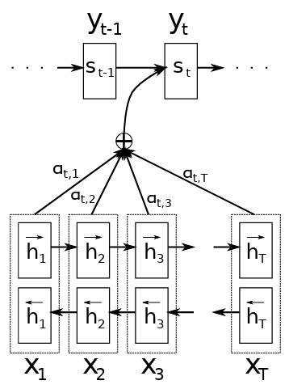
Fig. 11.46 Fuente: Bahdanau et al. (2015), Neural Machine Translation by Jointly Learning to Align and Translate.#
Pseudocódigo Python:
scores = tanh(W_a @ s_prev + U_a @ encoder_outputs) # shape (seq_len,)
attention_weights = softmax(scores) # shape (seq_len,)
context_vector = sum(attention_weights * encoder_outputs)
Interpretación:
Linealizamos \(h_j\) y \(s_{t-1}\) con \(W_a\) y \(U_a\).
Aplicamos \(\tanh\) para no linealidades.
Multiplicamos por \(v_a^\top\) para obtener un escalar de relevancia.
Softmax transforma scores en distribución de atención.
Observación
La atención de Bahdanau soluciona el cuello de botella del encoder-decoder clásico porque ya no usa un único vector fijo para representar toda la entrada. En su lugar, el decoder calcula en cada paso un vector de contexto \(c_t\) como una combinación ponderada de los estados del encoder (\(h_j\)). Así, el modelo “enfoca su atención” dinámicamente en las partes más relevantes de la secuencia al generar cada palabra.
Ejemplo intuitivo: Bahdanau Attention
Imagina que queremos traducir esta oración del español al inglés
Entrada (X): “El gato negro duerme”
Salida (Y): “The black cat sleeps”
Encoder: procesa toda la frase
El encoder (por ejemplo, una Bi-LSTM) recorre la frase palabra por palabra y genera una representación vectorial (hidden state) para cada token.
Palabra |
Representación oculta (\(h_j\)) |
Intuición |
|---|---|---|
El |
\(h_1\) |
Entiende que es un artículo |
gato |
\(h_2\) |
Entiende que es un sustantivo, sujeto |
negro |
\(h_3\) |
Adjetivo que describe “gato” |
duerme |
\(h_4\) |
Verbo, acción principal |
Al final, el encoder produce una secuencia de vectores
Cada \(h_j\) contiene información contextual sobre su palabra y las palabras vecinas (dependiendo del tipo de RNN utilizada).
Decoder: genera la salida palabra por palabra
El decoder (una RNN unidireccional) produce la traducción una palabra a la vez.
En el paso \(t = 1\). Desea generar la primera palabra de la salida:
“The”
Para hacerlo, el decoder usa su estado anterior \(s_{t-1}\) (inicialmente \(s_0\)) y “mira” los estados del encoder (\(h_1, h_2, h_3, h_4\)) para determinar qué partes de la entrada son más relevantes.
La ecuación de alineamiento (score) es
Cada \(e_{tj}\) mide la relevancia del token de entrada \(x_j\) respecto al estado del decoder en el paso \(t\).
Softmax: conversión en pesos de atención
Los valores \(e_{tj}\) se normalizan con una función softmax para producir una distribución de atención:
Los \(\alpha_{tj}\) representan cuánto “atiende” el modelo a cada palabra del encoder.
Ejemplo numérico simplificado
Palabra del encoder |
Score bruto \(e_{tj}\) |
Peso de atención \(\alpha_{tj}\) |
|---|---|---|
El |
1.8 |
0.50 |
gato |
1.4 |
0.30 |
negro |
0.7 |
0.15 |
duerme |
0.2 |
0.05 |
En este caso, el modelo se enfoca principalmente en “El” (50%) y “gato” (30%) para generar “The”.
Cálculo del vector de contexto dinámico
A partir de los pesos de atención, se obtiene el vector de contexto \(c_t\) como una combinación ponderada de los hidden states del encoder:
Por ejemplo
El vector \(c_t\) resume la información más relevante de la entrada en ese paso, en este caso “El gato”.
Generación del token de salida
El decoder usa el contexto \(c_t\) junto con su estado actual \(s_t\) para predecir la siguiente palabra mediante una capa softmax:
De donde se obtiene
Generación de la siguiente palabra (“black”)
En el siguiente paso (\(t=2\)), el decoder actualiza su estado \(s_1\) y repite el proceso de atención. Los nuevos pesos \(\alpha_{2j}\) podrían ser:
Palabra |
Peso \(\alpha_{2j}\) |
|---|---|
El |
0.10 |
gato |
0.25 |
negro |
0.60 |
duerme |
0.05 |
Ahora el modelo enfoca más atención en “negro” y genera la palabra “black”.
Generación de “cat”
Palabra |
Peso \(\alpha_{3j}\) |
|---|---|
El |
0.05 |
gato |
0.70 |
negro |
0.20 |
duerme |
0.05 |
El modelo se centra en “gato” y produce la palabra “cat”.
Generación de “sleeps”
Palabra |
Peso \(\alpha_{4j}\) |
|---|---|
El |
0.05 |
gato |
0.10 |
negro |
0.05 |
duerme |
0.80 |
El modelo atiende principalmente a “duerme” y genera “sleeps”.
Conclusión intuitiva
En lugar de resumir toda la oración en un solo vector fijo \(v\), el modelo calcula un nuevo vector de contexto \(c_t\) en cada paso \(t\).
Este vector \(c_t\) cambia dinámicamente según la palabra que el decoder está generando.
De esta manera, la atención elimina el cuello de botella del modelo clásico, permitiendo al decoder acceder directamente a las partes más relevantes de la entrada.
Atención Luong (Multiplicativa)La atención multiplicativa fue propuesta por Luong et al. (2015) en “Effective Approaches to Attention-based Neural Machine Translation”. Surgió como una mejora computacional sobre la atención aditiva de Bahdanau, buscando simplificar el cálculo del alineamiento y aumentar la eficiencia.
El objetivo es medir qué tan bien se alinean el estado actual del decoder (\(s_t\)) y los estados del encoder (\(h_j\)). Para ello, se define una función de score que cuantifica la similitud entre ambos.
Interpretación geométrica
Caso “dot” (producto punto simple): El score es proporcional al coseno del ángulo entre \(s_t\) y \(h_j\)
\[ \text{score}(s_t, h_j) = |s_t| , |h_j| \cos(\theta) \]Si los vectores apuntan en la misma dirección (\(\theta \approx 0\)), la atención es alta. Esto equivale a una medida de similitud geométrica en el espacio latente.
Caso “general”:
El producto punto se realiza tras aplicar una transformación lineal \(W_a\) a \(h_j\). Esto permite que el modelo aprenda una métrica de similitud no isotrópica, es decir, que ciertas dimensiones tengan más relevancia que otras
\[ \text{score}(s_t, h_j) = s_t^\top W_a h_j \]Caso “concat”: Similar a Bahdanau, pero en lugar de sumar, se concatenan los vectores
\[ \text{score}(s_t, h_j) = v_a^\top \tanh(W_a [s_t; h_j]) \]Este caso mezcla información multiplicativa y aditiva, pero es más costoso.
Cálculo de pesos de atención y vector de contexto. El score se normaliza mediante softmax para obtener los pesos de atención:
\[ \alpha_{tj} = \frac{\exp(\text{score}(s_t, h_j))}{\sum_{k=1}^S \exp(\text{score}(s_t, h_k))} \]De esta forma
\(\alpha_{tj} \in [0,1]\)
\(\sum_j \alpha_{tj} = 1\)
El vector de contexto se obtiene como la combinación ponderada de los estados del encoder
\[ c_t = \sum_{j=1}^S \alpha_{tj} h_j \]Derivación: relación con Bahdanau
En Bahdanau
\[ e_{tj} = v_a^\top \tanh(W_a s_{t-1} + U_a h_j) \]Dos transformaciones lineales + activación no lineal.
Requiere multiplicaciones adicionales y más parámetros.
En Luong
\[ e_{tj} = s_t^\top W_a h_j \]Solo una multiplicación de matrices.
Sin activación \(\tanh\), lo que reduce el costo de cómputo.
Ideal para modelos con grandes secuencias o vocabularios.
Por tanto, Luong es una forma bilineal de Bahdanau
\[ e_{tj}^{\text{Luong}} = s_t^\top W_a h_j \quad \approx \quad v_a^\top \tanh(W_a s_t + U_a h_j) \]en el caso linealizado de \(\tanh\) (cercano a la identidad para pequeñas entradas).
Pseudocódigo Python
# s_t: hidden state del decoder (1 x d)
# encoder_outputs: matriz de hidden states (S x d)
scores = s_t @ encoder_outputs.T # Producto punto (dot)
attention_weights = softmax(scores) # Normalización
context_vector = attention_weights @ encoder_outputs
Versión “general” (con matriz de pesos \(W_a\)):
scores = (s_t @ W_a) @ encoder_outputs.T
attention_weights = softmax(scores)
context_vector = attention_weights @ encoder_outputs
Interpretación geométrica
La atención de Luong puede interpretarse como una proyección bilineal entre los subespacios del encoder y el decoder.
El término \(s_t^\top W_a h_j\) define una forma cuadrática, que mide la compatibilidad entre ambas representaciones.
En el espacio latente \(\mathbb{R}^{d}\), \(W_a\) actúa como una métrica aprendible: el modelo aprende qué direcciones (dimensiones) son relevantes para el alineamiento lingüístico.
Comparación
Característica |
Bahdanau (Additive) |
Luong (Multiplicative) |
|---|---|---|
Tipo de operación |
Suma + \(\tanh\) |
Producto punto (bilineal) |
Complejidad |
\(O(d^2)\) |
\(O(d)\) |
Parámetros adicionales |
\(W_a, U_a, v_a\) |
\(W_a\) (a veces ninguno) |
Interpretación |
Similaridad no lineal |
Similaridad geométrica |
Rendimiento |
Preciso, pero más lento |
Más rápido, especialmente en GPU |
Ideal para |
Traducciones cortas o ricas en sintaxis |
Secuencias largas, alta eficiencia |
Conclusión
La atención de Luong representa una generalización más eficiente de Bahdanau.
En lugar de aprender una función compleja de similitud, aprende una métrica bilineal que captura la compatibilidad entre los espacios del encoder y el decoder.
Su base matemática en el producto punto y la forma cuadrática hace que sea más interpretable desde el punto de vista del análisis lineal y más fácil de optimizar en práctica.
11.24. Self-Attention#
Formulación general
Input: una secuencia de embeddings
Proyecciones lineales (aprendibles):
\[ Q = X W_Q,\qquad K = X W_K,\qquad V = X W_V, \]con
\(W_Q, W_K \in \mathbb{R}^{d_{\text{model}}\times d_k}\) y \(W_V\in\mathbb{R}^{d_{\text{model}}\times d_v}\).
Self-attention escalada
\[ \mathrm{softmax}\!\left(\frac{Q K^\top}{\sqrt{d_k}}\right)V \]Definimos la matriz de scores
\[ S := \frac{QK^\top}{\sqrt{d_k}} \in \mathbb{R}^{n \times n}, \]la matriz de pesos (filas sumando 1):
\[ A := \mathrm{softmax}(S) \quad (\text{softmax row-wise}), \]y la salida
\[ Y = A V \in\mathbb{R}^{n\times d_v}. \]Interpretación: la fila \(A_{i,:}\) contiene los pesos de atención que el elemento \(i\) de la secuencia (consulta \(q_i\)) asigna a cada key \(k_j\); la salida para la posición \(i\) es la combinación ponderada de los valores \(V\):
Por qué proyectar a Q, K, V
Las proyecciones permiten separar qué se busca (queries) de qué se ofrece (keys) y qué se entrega (values). Si usáramos \(X\) sin transformar, la métrica de similitud estaría rígidamente fija; con matrices \(W_Q,W_K\) el modelo aprende la métrica de similitud más conveniente para la tarea (p. ej. dar mayor peso a ciertas dimensiones semánticas).
Formalmente, para cada posición \(i\):
\(q_i = W_Q^\top x_i \in\mathbb{R}^{d_k}\),
\(k_j = W_K^\top x_j \in\mathbb{R}^{d_k}\),
\(v_j = W_V^\top x_j \in\mathbb{R}^{d_v}\).
El producto \(q_i\cdot k_j\) mide compatibilidad entre la consulta en \(i\) y la llave en \(j\) en el espacio proyectado.
Relación con la expresión de atención clásica
La fórmula anterior es exactamente la generalización vectorial/matricial de los pesos \(\alpha_{ij}\) de Bahdanau/Luong:
Bahdanau: \(\alpha_{ij} \propto \exp\big(v_a^\top\tanh(W_a s_{i-1}+U_a h_j)\big)\) — atención aditiva (no lineal).
Luong: \(\alpha_{ij} \propto \exp(s_i^\top W_a h_j)\) — atención multiplicativa/bilineal.
Self-attention: cada posición actúa como decoder y encoder a la vez; \(QK^\top\) es la matriz de scores bilineales entre todas las posiciones.
Demostración del escalado \(1/\sqrt{d_k}\) (varianza del producto punto)
Queremos entender el tamaño típico de los elementos de \(QK^\top\) cuando \(d_k\) es grande. Supongamos que las componentes de \(q_i\) y \(k_j\) son independientes con media \(0\) y varianza \(\sigma^2\) (necesario sólo para análisis; en práctica no son exactamente iid, pero el argumento heurístico es válido).
Sea
\[ q_i = (q_{i1},\dots,q_{id_k}),\qquad k_j=(k_{j1},\dots,k_{jd_k}). \]El producto punto es
\[ Z \triangleq q_i \cdot k_j = \sum_{m=1}^{d_k} q_{im} \, k_{jm}. \]Si \(\mathbb{E}[q_{im}]=\mathbb{E}[k_{jm}]=0\) y \(\mathrm{Var}(q_{im})=\mathrm{Var}(k_{jm})=\sigma^2\), y además \(q_{im}\) independiente de \(k_{jm}\) y entre componentes, entonces
\[ \mathbb{E}[Z]=0, \]y su varianza es
\[ \mathrm{Var}(Z) = \sum_{m=1}^{d_k} \mathrm{Var}(q_{im}k_{jm}) = \sum_{m=1}^{d_k} \big( \mathbb{E}[q_{im}^2]\mathbb{E}[k_{jm}^2] - (\mathbb{E}[q_{im}])^2(\mathbb{E}[k_{jm}])^2 \big) = d_k , \sigma^4. \]Si además escalamos \(Z\) por \(1/\sqrt{d_k}\), definimos
\[ \tilde Z := \frac{Z}{\sqrt{d_k}} \]y entonces
\[ \mathrm{Var}(\tilde Z) = \frac{1}{d_k}\mathrm{Var}(Z) = \sigma^4. \]Si asumimos \(\sigma^2=1\) (vectores normalizados), \(\mathrm{Var}(\tilde Z)\approx 1\).
Consecuencia práctica: sin el factor \(1/\sqrt{d_k}\), la varianza de los entries de \(QK^\top\) crece linealmente con \(d_k\); esto hace que sus entradas típicas sean grandes en magnitud cuando \(d_k\) es grande, lo que envía la softmax hacia extremos (casi uno-hot), provocando gradientes muy pequeños y entrenamiento inestable. El factor \(1/\sqrt{d_k}\) mantiene las entradas en una escala razonable (orden 1).
Efecto en el softmax y gradientes (más formal)
Sea \(s\in\mathbb{R}^n\) la fila de scores para una consulta dada y \(a=\mathrm{softmax}(s)\), con
La jacobiana (derivada de \(a\) respecto a \(s\)) es
Si \(s\) contiene una entrada dominante muy grande (por ejemplo \(s_1\gg s_2,\dots,s_n\)), entonces \(a_1\approx 1\), \(a_{j\ne1}\approx 0\), y la magnitud de \(\partial a_i/\partial s_j\) es muy pequeña (cerca de 0), con lo que el gradiente hacia parámetros que generaron \(s\) se atenúa (vanishing gradient). Mantener \(s\) en escala moderada evita esa saturación.
Por eso el escalado estabiliza tanto la magnitud de \(a\) como la del gradiente \(\partial \mathcal{L}/\partial s\).
Propiedad: invarianza permutacional
Queremos probar que, para cualquier matriz de permutación \(P\in{0,1}^{n\times n}\) (ortogonal: \(P^\top P=I\)),
Prueba
\(Q'= (P X) W_Q = P (X W_Q) = P Q\). Análogamente \(K' = P K\), \(V' = P V\).
Los scores
\[ S' = \frac{Q' K'^\top}{\sqrt{d_k}} = \frac{(P Q)(P K)^\top}{\sqrt{d_k}} = \frac{P Q K^\top P^\top}{\sqrt{d_k}} = P S P^\top. \]Softmax row-wise satisface \(\mathrm{softmax}(P S P^\top)=P\mathrm{softmax}(S)P^\top\), porque permutar filas y columnas permuta filas y columnas de la matriz de scores y la normalización row-wise se respeta.
Finalmente:
\[ \mathrm{Attention}(P X,P X,P X) = \mathrm{softmax}(S')V' = (P\mathrm{softmax}(S)P^\top)(P V) = P (\mathrm{softmax}(S)V) = P,\mathrm{Attention}(X,X,X). \]Esto demuestra la invarianza permutacional: permutar las posiciones de entrada permuta de manera consistente la salida.
Expresión lineal de la salida y conexión con filtros de atención
La salida \(Y = A V\) puede verse también como \(Y = f(X)\) donde \(f\) es una transformación que depende no linealmente de \(X\) (porque \(A\) depende de \(X\) vía \(Q,K\)). Pero para una \(A\) fija, \(Y\) es lineal en \(V\) y por tanto lineal en \(X\) a través de \(W_V\).
Esto sugiere que la self-attention es una capa no linealmente condicionada que construye, para cada posición, una combinación lineal de todas las posiciones. Esa combinación depende de la similitud en el espacio proyectado.
Relación con Bahdanau / Luong y ventajas conceptuales
Bahdanau (aditivo) usa una función no lineal que compara \(s\) y \(h_j\) tras dos proyecciones y una \(\tanh\). Es flexible, pero más pesado computacionalmente. Luong es bilineal (\(s^\top W h\)). Self-attention se corresponde con aplicar una versión de Luong entre todas las posiciones de la misma secuencia: todas las posiciones actúan a la vez como queries y keys. Además, multi-head attention permite que diferentes \(W_Q^i,W_K^i,W_V^i\) aprendan diversas métricas simultáneamente.
Complejidad computacional y memoria
Para una secuencia de longitud \(n\) y dimensión \(d\) (tomando \(d_k\sim d\)):
Cálculo de \(Q,K,V\): \(O(n d d_k)\) trivialmente \(O(n d^2)\) si \(d_k\approx d\).
Cálculo de \(S = Q K^\top\): \(O(n^2 d_k)\).
Softmax y multiplicación \(A V\): \(O(n^2 + n^2 d_v) \sim O(n^2 d)\).
Por tanto, self-attention es \(O(n^2 d)\) en tiempo y \(O(n^2)\) en memoria (para almacenar la matriz \(S\) o \(A\)). Esto explica las limitaciones para secuencias largas y motiva aproximaciones (sparse, local attention, linformer, etc.).
11.25. Multi-head Attention#
Formulación:
Dimensionalidad típica:
\(d_{model} = 512\), \(h = 8\) heads
\(d_k = d_v = d_{model}/h = 64\)
Complejidad computacional:
Interpretación geométrica:
Cada cabeza proyecta la información en un subespacio diferente:
Teorema (Yun et al., 2020): Multi-head attention puede aproximar cualquier función continua de múltiples variables.
Pseudocódigo Python:
heads = [self_attention(X @ WQ[i], X @ WK[i], X @ WV[i]) for i in range(h)]
output = np.concatenate(heads, axis=-1) @ WO
11.26. Transformer#
Encoder Layer Matemático
Feed-Forward Network:
Dimensionalidad típica: \(d_{ff} = 2048, d_{model} = 512\)
Decoder - Masked Self-Attention
Máscara causal:
Masked Attention:
Residual connections:
Layer Normalization:
Ventajas matemáticas sobre LSTM
Completa paralelización: no depende de pasos previos.
Captura dependencias largas sin decaimiento exponencial del gradiente.
Mayor eficiencia computacional en GPU/TPU.
Mejor performance en tareas complejas.
Complejidad:
LSTM: \(O(n \cdot d^2)\) por paso temporal
Transformer: \(O(n^2 \cdot d)\), paralelizable
Gradientes:
LSTM: \(O(\lambda^L)\) con \(\lambda<1\) (desvanecimiento)
Transformer: atención directa entre tokens → \(O(1)\)
11.27. Ejemplos de aplicación#
Visualización de Atención
plt.imshow(attention_weights, cmap='viridis')
plt.xlabel('Input Tokens')
plt.ylabel('Output Tokens')
Implementación Self-Attention
def self_attention(X, WQ, WK, WV):
Q = X @ WQ
K = X @ WK
V = X @ WV
scores = Q @ K.T / np.sqrt(K.shape[-1])
weights = softmax(scores, axis=-1)
return weights @ V
Comparación Teórica LSTM vs Transformer
Métrica |
LSTM |
Transformer |
|---|---|---|
Paralelismo |
No |
Sí |
Dependencias largas |
Exponencial decay |
Directo |
Memoria |
O(n) |
O(n²) |
Training |
Lento |
Rápido |